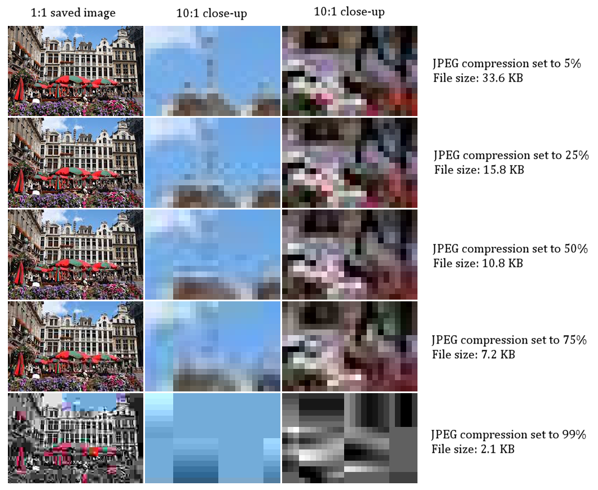

<!DOCTYPE html>
<html lang="ja">
<head>
<meta charset="UTF-8">
<meta name="viewport" content="width=device-width, initial-scale=1.0">
<title>第22回 特異値分解</title>
<script>
  MathJax = { tex: { inlineMath: [['$','$'],['\\(','\\)']], displayMath: [['$$','$$'],['\\[','\\]']], tags:'none' }, svg:{ fontCache:'global' } };
</script>
<script src="https://cdn.jsdelivr.net/npm/mathjax@3/es5/tex-mml-chtml.js" async></script>
<link rel="preconnect" href="https://fonts.googleapis.com">
<link href="https://fonts.googleapis.com/css2?family=Shippori+Mincho:wght@500;700&family=Cormorant+Garamond:wght@300;500&display=swap" rel="stylesheet">
<style>
  /* 書籍風デザイン（2026-10-01 採用）。囲みの5色は残し、くすんだ和の色に淡くしている */
  :root{ --paper:#f7f4ec; --ink:#2a2723; --sub:#6b645a; --accent:#2b3a67; --shu:#a8322a; --line:#ddd6c8;
         --thm:#eceff4; --thmline:#4a5f8c; --def:#edf1e8; --defline:#6b8a5a; --ex:#f1edf2; --exline:#8a6d94;
         --warn:#f8eee2; --warnline:#c08a52; --why:#f7f1dc; --whyline:#c9a43a; --box:#efebe2;
         --mincho:"Shippori Mincho","Noto Serif JP","Yu Mincho","Hiragino Mincho ProN",serif;
         --num:"Cormorant Garamond","Times New Roman",serif; }
  h2 .no,h3 .no{ font-variant-numeric:lining-nums; font-feature-settings:"lnum" 1; }
  *{ box-sizing:border-box; }
  html{ overflow-x:clip; }
  body{ font-family:"Hiragino Kaku Gothic ProN","Yu Gothic","Meiryo",sans-serif; color:var(--ink); background:var(--paper);
        line-height:1.95; margin:0 auto; padding:0 28px 60px; max-width:820px; font-size:15.5px; letter-spacing:.02em; }
  p{ margin:10px 0; }
  a{ color:var(--accent); }

  /* 扉 */
  .hero{ position:relative; left:50%; width:min(1180px,100vw); margin:0 0 8px calc(-1 * min(1180px,100vw) / 2); text-align:left; }
  .hero img{ display:block; width:100%; height:auto; }
  .hero .ttl{ position:absolute; left:5%; top:9%; color:var(--ink); }
  .hero .vol{ font-family:var(--mincho); font-size:15px; letter-spacing:.4em; margin:0; color:var(--shu); }
  .hero h1{ font-family:var(--mincho); font-weight:700; font-size:clamp(26px,4.2vw,46px); line-height:1.3; margin:4px 0 0; letter-spacing:.08em; }
  .hero figcaption{ max-width:820px; margin:10px auto 0; padding:0 28px; }
  .lead{ color:var(--sub); font-size:14.5px; margin:22px 0 14px; }

  /* 見出し */
  h2{ font-family:var(--mincho); font-weight:700; font-size:25px; letter-spacing:.06em; color:var(--ink);
      border-top:1px solid var(--ink); padding-top:18px; margin:64px 0 18px; display:flex; align-items:baseline; gap:16px; }
  h2 .no{ font-family:var(--num); font-weight:300; font-size:60px; line-height:.8; color:var(--shu); letter-spacing:0; }
  h3{ font-family:var(--mincho); font-weight:700; font-size:18.5px; color:var(--accent); margin:36px 0 10px; letter-spacing:.04em; }
  h3 .no{ font-family:var(--num); font-weight:500; font-size:22px; color:var(--sub); margin-right:12px; }
  h4{ font-family:var(--mincho); font-size:16px; color:var(--accent); margin:18px 0 6px; }

  /* 囲み：背景を淡く、左の細線とラベルで区別する */
  .box,.thm,.def,.ex,.warn,.why{ border-left:3px solid; border-radius:2px; padding:12px 18px; margin:18px 0; }
  .box{ background:var(--box); border-color:#b9b0a0; }
  .thm{ background:var(--thm); border-color:var(--thmline); }
  .def{ background:var(--def); border-color:var(--defline); }
  .ex{ background:var(--ex); border-color:var(--exline); }
  .warn{ background:var(--warn); border-color:var(--warnline); }
  .why{ background:var(--why); border-color:var(--whyline); }
  .label{ font-family:var(--mincho); font-weight:700; letter-spacing:.05em; display:block; margin-bottom:2px; }
  .thm .label{ color:var(--thmline); } .def .label{ color:var(--defline); } .ex .label{ color:var(--exline); }
  .warn .label{ color:#a06a32; } .why .label{ color:#9a7a1a; } .box .label{ color:var(--sub); }
  .proof{ margin:12px 0 12px 4px; padding-left:16px; border-left:1px dashed #b9b0a0; }
  .qed{ text-align:right; color:var(--sub); }
  ul,ol{ margin:8px 0; padding-left:24px; } li{ margin:4px 0; }
  .meta{ font-size:13px; color:var(--sub); } .star{ color:var(--shu); font-weight:bold; } .key{ font-weight:bold; color:var(--accent); }
  hr{ border:none; border-top:1px solid var(--line); margin:28px 0; }
  details{ margin:10px 0; } summary{ cursor:pointer; color:var(--accent); font-weight:bold; }
  .navi{ font-size:13.5px; color:var(--sub); border-top:1px solid var(--line); border-bottom:1px solid var(--line); padding:10px 2px; margin:14px 0; }
  table.tb{ border-collapse:collapse; margin:14px 0; font-size:14.5px; width:100%; background:rgba(255,255,255,.45); }
  table.tb th,table.tb td{ border-bottom:1px solid var(--line); padding:6px 10px; text-align:center; }
  table.tb th{ font-family:var(--mincho); border-bottom:1px solid var(--ink); background:none; }
  figure{ margin:18px auto; text-align:center; } figure svg{ max-width:100%; height:auto; }
  figcaption{ font-size:13px; color:var(--sub); margin-top:6px; }
  .step{ font-weight:bold; color:var(--accent); }
  .note{ color:var(--sub); font-size:13.5px; }
  .mjx-container{ overflow-x:auto; overflow-y:hidden; max-width:100%; }
  .exp{ font-size:12.5px; color:var(--sub); border:1px solid var(--line); padding:6px 12px; margin:8px 0 0; }

  /* 見開き：左＝現実（A）、右＝見立て（B）。写真は切らずに見せる */
  .spread{ position:relative; left:50%; width:min(1100px,100vw); margin:48px 0 48px calc(-1 * min(1100px,100vw) / 2);
           padding:22px 28px 18px; display:grid; grid-template-columns:1fr 1fr; gap:28px; text-align:left;
           border-top:1px solid var(--ink); border-bottom:1px solid var(--ink); background:#f1ede3; }
  .spread .side{ min-width:0; }
  .spread .side.b{ border-left:1px solid var(--line); padding-left:28px; }
  .kick{ font-size:11px; letter-spacing:.25em; font-weight:bold; margin:0 0 10px; }
  .side.a .kick{ color:var(--accent); } .side.b .kick{ color:var(--shu); }
  .spread .ph{ height:380px; display:flex; gap:6px; justify-content:center; align-items:center; background:#e6e1d5; }
  .spread .ph img{ display:block; max-width:100%; max-height:100%; min-width:0; object-fit:contain; }
  .spread .ph.pair img{ max-width:calc(50% - 3px); }
  .cap{ font-family:var(--mincho); font-size:16px; line-height:1.9; margin:12px 0 4px; color:var(--ink); }
  .cr{ font-size:11px; color:#968d80; margin:0; line-height:1.6; } .cr a{ color:#968d80; }

  @media (max-width:720px){
    body{ padding:0 16px 40px; font-size:15px; }
    .hero .ttl{ position:static; padding:14px 16px 0; }
    .hero figcaption{ padding:0 16px; }
    h2 .no{ font-size:46px; }
    .spread{ grid-template-columns:1fr; padding:18px 16px 14px; gap:22px; }
    .spread .side.b{ border-left:none; padding-left:0; border-top:1px solid var(--line); padding-top:18px; }
    .spread .ph{ height:auto; max-height:460px; } .spread .ph img{ max-height:460px; }
  }
  @media print{ body{ background:#fff; font-size:11pt; } details{ display:block; } summary{ display:none; }
    .spread,.hero{ left:auto; width:auto; margin:16px 0; break-inside:avoid; } .hero .ttl{ position:static; } }

  /* 教材⇄コラムの切替ボタン（画面右下に常に表示） */
  .switch{ position:fixed; right:14px; bottom:14px; z-index:50; display:flex; font-family:"Shippori Mincho","Yu Mincho",serif; font-size:13px; letter-spacing:.05em; box-shadow:0 3px 14px rgba(0,0,0,.18); }
  .switch a{ display:block; padding:9px 14px; text-decoration:none; color:#f7f4ec; background:#2a2723; line-height:1.3; }
  .switch a.to{ background:#a8322a; } .switch a:hover{ opacity:.88; }
  .switch small{ display:block; font-size:10px; opacity:.75; letter-spacing:.15em; }
  @media (max-width:720px){ .switch{ right:8px; bottom:8px; font-size:12px; } .switch a{ padding:7px 11px; } }
  @media print{ .switch{ display:none; } }
  /* 写真なしの扉（この教材は写真が任意） */
  .hero.plain{ left:auto; width:auto; margin:56px 0 8px; border-top:1px solid var(--ink); padding-top:22px; }
  .hero.plain .ttl{ position:static; }
  .def[id]{ scroll-margin-top:12px; } h2[id],h3[id],.box[id],figure[id]{ scroll-margin-top:12px; }
  :target{ outline:2px solid var(--whyline); outline-offset:4px; }
  .hero .ttl{ background:rgba(247,244,236,.88); padding:12px 22px 14px; }
  figure.fig{ margin:26px auto 30px; max-width:640px; }
  figure.fig svg{ border:1px solid var(--line); border-radius:6px; }
  figure.fig figcaption{ text-align:left; font-size:14.5px; line-height:1.8; color:var(--sub); margin:10px auto 0; max-width:560px; }
  figure.fig figcaption strong{ color:var(--ink); margin-right:.3em; }
  @media (max-width:720px){ .hero .ttl{ background:none; padding:14px 16px 0; } }
</style>
</head>
<body>
<figure class="hero">

<div class="ttl" style="left:4%;top:9%"><p class="vol">第22回</p><h1>特異値分解</h1></div>
<figcaption><p class="cap">円いはずの太陽が、地平線のそばでは、横に潰れて見える。</p><p class="cr">Giles Laurent（2025年、ナミブ砂漠の日没）／<a href="https://creativecommons.org/licenses/by-sa/4.0/">CC BY-SA 4.0</a>／<a href="https://commons.wikimedia.org/wiki/File:084_Sun_setting_in_the_Namib_desert_Photo_by_Giles_Laurent.jpg">Wikimedia Commons</a>（横長に切り出した）</p></figcaption>
</figure>
<p class="lead">固有値分解は<strong>正方行列</strong>で、しかも<strong>固有ベクトルがそろうとき</strong>にしかできなかった。<strong>どんな形の行列にも</strong>使える分解が、特異値分解 $A=U\Sigma V^{\mathsf T}$ である。「直交 → 軸ごとに伸び縮み → 直交」という3段の動きに分けて、行列の働きを丸ごと見える形にする。その応用として、情報を削って軽くする<strong>低ランク近似</strong>と、逆行列がない場合の代わりになる<strong>擬似逆行列</strong>（最小二乗法の解）まで、記号を省かず1行ずつ追う。</p>
<div class="navi">
<strong>この回の論理の幹</strong>：長方形の行列や対称でない行列には、第20回の意味での固有値分解がない → しかし $A^{\mathsf T}A$ は<strong>どんな $A$ からでも</strong>作れて、必ず<strong>対称</strong>で、固有値がすべて $0$ 以上（半正定値）→ その固有値の平方根が<strong>特異値</strong> $\sigma_i$ → $A^{\mathsf T}A$ の固有ベクトル $\boldsymbol v_i$（第21回の直交対角化）を $A$ に掛けて $\sigma_i$ で割ると、直交するベクトル $\boldsymbol u_i$ が得られる → 並べて $A\boldsymbol v_i=\sigma_i\boldsymbol u_i$、まとめて $AV=U\Sigma$、すなわち<strong>特異値分解</strong> $A=U\Sigma V^{\mathsf T}$ → 幾何では「$V^{\mathsf T}$ で向きを揃える → $\Sigma$ で軸ごとに $\sigma_i$ 倍 → $U$ で向きを戻す」→ $\sigma_1$ は「単位ベクトルが最大で何倍になるか」→ $A=\sum\sigma_i\boldsymbol u_i\boldsymbol v_i^{\mathsf T}$ の先頭 $k$ 個だけ残すと、ランク $k$ の行列のうち<strong>いちばん元に近い</strong>もの（低ランク近似）→ 逆に $\Sigma$ の $0$ でない成分だけ逆数にして $A^{+}=V\Sigma^{+}U^{\mathsf T}$ を作ると、逆行列の代わり（擬似逆行列）になり、最小二乗解を与える。
</div>

<div class="box"><span class="label">この回の使い方</span>
<p>第1回から続く約束どおり、新しい記号は緑色の枠（<strong>記号</strong>）で「①読み方　②日本語での意味　③省略していない書き方　④どこで出会うか」を書く。この回の中心の省略は<strong>「$A\boldsymbol v_i=\sigma_i\boldsymbol u_i$ を $i=1,2,\dots$ と何本も並べた連立」を $A=U\Sigma V^{\mathsf T}$ の一行にした</strong>ことなので、<a href="#abbr-svd">2.1 の省略の段階</a>で S0 から S2 まで1段ずつ並べる。以後この箱にリンクして使う。</p>
<p>この回は、第20回の<a href="20_第20回_固有値と固有ベクトル.html#sym-eigen">固有値・固有ベクトル</a>、第21回の<a href="21_第21回_対角化と二次形式.html#sym-spectral">スペクトル定理</a>（対称行列は直交行列で対角化できる）、第19回の<a href="19_第19回_内積・直交・射影.html#sym-orthogonal-matrix">直交行列</a>と<a href="19_第19回_内積・直交・射影.html#sym-projection">射影</a>、第17回の<a href="17_第17回_連立一次方程式とランク.html#sym-rank">ランク</a>・<a href="17_第17回_連立一次方程式とランク.html#sym-ker">核</a>・<a href="17_第17回_連立一次方程式とランク.html#sym-im">像</a>を<strong>全部合わせて使う回</strong>である。使うたびにリンクを張るので、忘れていても元の説明に戻れる。式変形は1行に1操作だけ進め、理由を右（または下）に書く。すべての計算は<strong>数値で一度手を動かして</strong>から文字の式に進む。</p>
<p>第21回は並行して作成中なので、そこへのリンクは、その回で付ける記号の名前に合わせてある。最小二乗法の本格的な扱いは第47回、データから主成分を取り出す話は第48回以降で行う。この回では<strong>予告だけ</strong>にする。</p>
</div>

<!-- ============================================================ -->
<h2 id="sec-0"><span class="no">0</span>この回で使う記号</h2>
<p>最初に、この回で<strong>新しく説明する記号</strong>と、<strong>前の回で説明済みの記号</strong>を分けて並べる。右の列の「→」で説明のある場所へ飛べる。</p>

<h3 id="sec-0-1"><span class="no">0.1</span>この回で新しく出る記号</h3>
<table class="tb">
<tr><th>記号</th><th>読み方</th><th>ざっくりした意味</th><th>説明</th></tr>
<tr><td>$\sigma_i$（特異値）</td><td>シグマ・アイ</td><td>$A^{\mathsf T}A$ の固有値の平方根。$A$ が単位ベクトルを何倍に伸ばすかの目安</td><td><a href="#sym-singular-value">→1.3</a></td></tr>
<tr><td>$M\succeq0$（半正定値）</td><td>エム・はんせいていち</td><td>どんなベクトルを両側から挟んでも $0$ 以上になる対称行列</td><td><a href="#sym-semidef">→1.2</a></td></tr>
<tr><td>$A=U\Sigma V^{\mathsf T}$（特異値分解）、$U,\Sigma,V$</td><td>エー・イコール・ユー・シグマ・ブイ・トランスポーズ</td><td>直交行列・対角に近い行列・直交行列の積への分解</td><td><a href="#sym-svd">→2.1</a>、<a href="#abbr-svd">→2.1</a></td></tr>
<tr><td>$\boldsymbol u\boldsymbol v^{\mathsf T}$（列と行の積、外積）</td><td>ユー・ブイ・トランスポーズ</td><td>$m\times1$ の列と $1\times n$ の行を掛けた $m\times n$ 行列（ランク1）</td><td><a href="#sym-outer">→2.4</a></td></tr>
<tr><td>$\|A\|_2$（作用素ノルム、スペクトルノルム）</td><td>ノルム・エー・にー</td><td>単位ベクトルを掛けて得られる最大の長さ（$=\sigma_1$）</td><td><a href="#sym-opnorm">→3.2</a></td></tr>
<tr><td>$\|A\|_F$（フロベニウスノルム）</td><td>ノルム・エー・エフ</td><td>全成分の2乗の和の平方根</td><td><a href="#sym-frobenius">→4.2</a></td></tr>
<tr><td>$A_k$（ランク $k$ の打ち切り）</td><td>エー・ケー</td><td>特異値の大きい方から $k$ 個だけ残した近似</td><td><a href="#sym-lowrank">→4.1</a></td></tr>
<tr><td>$A^{+}$、$\Sigma^{+}$（擬似逆行列）</td><td>エー・プラス、シグマ・プラス</td><td>逆行列の代わり。$0$ でない特異値だけ逆数にして作る</td><td><a href="#sym-pseudoinverse">→5.2</a></td></tr>
</table>

<h3 id="sec-0-2"><span class="no">0.2</span>前の回で出た記号（リンクで戻れる）</h3>
<table class="tb">
<tr><th>記号</th><th>意味</th><th>初出</th></tr>
<tr><td>$=$、$:=$</td><td>等しい／左の名前を右の式で決める</td><td><a href="01_第1回_数式を文として読む.html#sym-equal">第1回 2.1</a>、<a href="01_第1回_数式を文として読む.html#sym-defeq">第1回 2.2</a></td></tr>
<tr><td>$\in$、$\{\ \mid\ \}$、$\mathbb R$</td><td>要素である／条件で集合を作る／実数全体</td><td><a href="02_第2回_集合と論理.html#sym-in">第2回</a>、<a href="02_第2回_集合と論理.html#sym-setbuilder">第2回</a>、<a href="02_第2回_集合と論理.html#sym-numsets">第2回</a></td></tr>
<tr><td>$\Rightarrow$、$\Leftrightarrow$、$\forall$、$\exists$</td><td>ならば／同値／すべての／存在する</td><td><a href="02_第2回_集合と論理.html#sym-implies">第2回</a>、<a href="02_第2回_集合と論理.html#sym-iff">第2回</a>、<a href="02_第2回_集合と論理.html#sym-forall">第2回</a>、<a href="02_第2回_集合と論理.html#sym-exists">第2回</a></td></tr>
<tr><td>$\displaystyle\sum$（総和）</td><td>足し合わせ</td><td><a href="04_第4回_総和・総乗と添字.html#sym-sum">第4回</a></td></tr>
<tr><td>太字 $\boldsymbol v$（ベクトル）、成分、$\boldsymbol 0$</td><td>数の組／その中の数／全成分が0</td><td><a href="05_第5回_ベクトルと行列の書き方.html#sym-vector">第5回</a>、<a href="05_第5回_ベクトルと行列の書き方.html#sym-component">第5回</a>、<a href="05_第5回_ベクトルと行列の書き方.html#sym-zero-vector">第5回</a></td></tr>
<tr><td>$A\in\mathbb R^{m\times n}$、$A_{ij}$、$I$、$A^{\mathsf T}$（転置）</td><td>$m$ 行 $n$ 列の行列／成分／単位行列／行と列を入れ替えた行列</td><td><a href="05_第5回_ベクトルと行列の書き方.html#sym-matrix">第5回</a>、<a href="05_第5回_ベクトルと行列の書き方.html#sym-matrix-entry">第5回</a>、<a href="05_第5回_ベクトルと行列の書き方.html#sym-identity">第5回</a>、<a href="05_第5回_ベクトルと行列の書き方.html#sym-transpose">第5回</a></td></tr>
<tr><td>$\|\boldsymbol a\|$（ノルム）</td><td>ベクトルの長さ</td><td><a href="05_第5回_ベクトルと行列の書き方.html#sym-norm">第5回</a>、<a href="19_第19回_内積・直交・射影.html#sym-norm-induced">第19回</a></td></tr>
<tr><td>一次結合、$\operatorname{span}$、一次独立、基底、$\dim$</td><td>定数倍の和／張る空間／冗長がない／座標軸の役目をする組／基底の本数</td><td><a href="15_第15回_ベクトル空間と基底.html#sym-linear-combination">第15回</a>、<a href="15_第15回_ベクトル空間と基底.html#sym-span">第15回</a>、<a href="15_第15回_ベクトル空間と基底.html#sym-linear-independent">第15回</a>、<a href="15_第15回_ベクトル空間と基底.html#sym-basis">第15回</a>、<a href="15_第15回_ベクトル空間と基底.html#sym-dim">第15回</a></td></tr>
<tr><td>$A\boldsymbol x$、線形写像、$AB$、$A^{-1}$</td><td>列の一次結合／写像／写像の合成／逆の写像</td><td><a href="16_第16回_行列は線形写像.html#sym-matvec">第16回</a>、<a href="16_第16回_行列は線形写像.html#sym-linear-map">第16回</a>、<a href="16_第16回_行列は線形写像.html#sym-matmul">第16回</a>、<a href="16_第16回_行列は線形写像.html#sym-inverse-matrix">第16回</a></td></tr>
<tr><td>$\operatorname{rank}A$、$\ker A$、$\operatorname{im}A$、$\dim\ker A$</td><td>主成分の数／$A\boldsymbol x=\boldsymbol 0$ の解全体／$A\boldsymbol x$ の取りうる値の全体／核の次元</td><td><a href="17_第17回_連立一次方程式とランク.html#sym-rank">第17回</a>、<a href="17_第17回_連立一次方程式とランク.html#sym-ker">第17回</a>、<a href="17_第17回_連立一次方程式とランク.html#sym-im">第17回</a>、<a href="17_第17回_連立一次方程式とランク.html#sym-nullity">第17回</a></td></tr>
<tr><td>$\det A$（行列式）</td><td>符号つきの拡大率</td><td><a href="18_第18回_行列式.html#sym-det">第18回</a></td></tr>
<tr><td>内積、直交、正規直交、直交行列 $Q$（$Q^{\mathsf T}Q=I$）、射影、グラム・シュミット</td><td>長さと角度を測る積／内積が0／長さ1で互いに直交／列が正規直交の正方行列／直線・平面への影／正規直交基底を作る手順</td><td><a href="19_第19回_内積・直交・射影.html#sym-inner-product">第19回</a>、<a href="19_第19回_内積・直交・射影.html#sym-orthogonal">第19回</a>、<a href="19_第19回_内積・直交・射影.html#sym-orthonormal">第19回</a>、<a href="19_第19回_内積・直交・射影.html#sym-orthogonal-matrix">第19回</a>、<a href="19_第19回_内積・直交・射影.html#sym-proj-matrix">第19回</a>、<a href="19_第19回_内積・直交・射影.html#sym-gram-schmidt">第19回</a></td></tr>
<tr><td>固有値 $\lambda$、固有ベクトル、$\operatorname{tr}A$（トレース）、特性多項式</td><td>向きを変えない方向とその倍率／対角成分の和／$\det(\lambda I-A)$</td><td><a href="20_第20回_固有値と固有ベクトル.html#sym-eigen">第20回</a>、<a href="20_第20回_固有値と固有ベクトル.html#sym-trace">第20回</a>、<a href="20_第20回_固有値と固有ベクトル.html#sym-char-poly">第20回</a></td></tr>
<tr><td>対称行列、直交対角化、スペクトル定理、正定値 $\succ0$</td><td>$A=A^{\mathsf T}$／$Q^{\mathsf T}AQ=\Lambda$／対称行列は必ず直交対角化できる／$\boldsymbol x\neq\boldsymbol 0$ で $\boldsymbol x^{\mathsf T}A\boldsymbol x\gt0$</td><td><a href="21_第21回_対角化と二次形式.html#sym-symmetric">第21回</a>、<a href="21_第21回_対角化と二次形式.html#sym-orth-diag">第21回</a>、<a href="21_第21回_対角化と二次形式.html#sym-spectral">第21回</a>、<a href="21_第21回_対角化と二次形式.html#sym-pos-def">第21回</a></td></tr>
</table>

<!-- ============================================================ -->
<h2 id="sec-1"><span class="no">1</span>固有値分解でできないことと、特異値の定義</h2>

<h3 id="sec-1-1"><span class="no">1.1</span>動機：長方形の行列は「自分自身」に写らない</h3>
<p>第20回の $A\boldsymbol v=\lambda\boldsymbol v$ は、$A$ が<strong>正方行列</strong>（$n\times n$）であることを使っていた。$A\boldsymbol v$ と $\boldsymbol v$ を比べるには、両方が同じ空間 $\mathbb R^n$ にいなければならない。たとえば $A$ が $3\times2$ なら、$\boldsymbol v\in\mathbb R^2$ に掛けた $A\boldsymbol v$ は $\mathbb R^3$ のベクトルで、そもそも $\boldsymbol v$ の何倍かどうかを問えない。実験データの表は、行（観測数）と列（変数の数）が違う長方形になるのがふつうで、固有値の考え方がそのままでは使えない。</p>
<p>正方行列でも困ることがある。第20回で見たとおり、固有ベクトルが $n$ 本そろわない行列（せん断）では<a href="21_第21回_対角化と二次形式.html#sym-diagonalizable">対角化</a>できない。また、実数の行列が複素数の固有値をもつ（回転）こともあった。</p>
<p>そこで、見方を変える。「$A$ が $\boldsymbol v$ を自分の定数倍にする方向」ではなく、<strong>入れる側の方向 $\boldsymbol v$ と、出てくる側の方向 $\boldsymbol u$ を別々に選ぶ</strong>ことにする。つまり $A\boldsymbol v=\sigma\boldsymbol u$（$\boldsymbol v\in\mathbb R^n$、$\boldsymbol u\in\mathbb R^m$、$\sigma$ は倍率）という形を探す。$\boldsymbol v$ と $\boldsymbol u$ は別の空間にいるので、どんな形の $A$ でも問題なく考えられる。</p>
<p><strong>最小の具体例</strong>：$A=\begin{pmatrix}2&2\\-1&1\end{pmatrix}$。単位円の上の点 $(\cos\theta,\sin\theta)$ に $A$ を掛けると、どんな図形になるか。$\theta=0$ なら $(2,-1)$、$\theta=90^\circ$ なら $(2,1)$、$\theta=45^\circ$ なら $A\begin{pmatrix}1/\sqrt2\\1/\sqrt2\end{pmatrix}=\begin{pmatrix}4/\sqrt2\\0\end{pmatrix}=(2\sqrt2,0)$、$\theta=135^\circ$ なら $A\begin{pmatrix}-1/\sqrt2\\1/\sqrt2\end{pmatrix}=\begin{pmatrix}0\\2/\sqrt2\end{pmatrix}=(0,\sqrt2)$。図1.1 に円全体の行き先（楕円）を描く。</p>
<figure class="fig" id="fig-1-1">
<svg viewBox="0 0 440 348" style="display:block;margin:0 auto;width:100%;max-width:440px" role="img" aria-label="単位円が楕円になる" font-family='"Hiragino Kaku Gothic ProN","Yu Gothic",Meiryo,sans-serif'><title>単位円が楕円になる</title>
<rect x="0" y="0" width="440" height="348" fill="#fffdf7"/>
<line x1="30.0" y1="137.2" x2="420.8" y2="137.2" stroke="#2a2723" stroke-width="1.3"/><path d="M414.5 140.2 L420.8 137.2 L414.5 134.2" fill="none" stroke="#2a2723" stroke-width="1.3"/>
<line x1="220.4" y1="260.4" x2="220.4" y2="4.0" stroke="#2a2723" stroke-width="1.3"/><path d="M223.4 10.3 L220.4 4.0 L217.4 10.3" fill="none" stroke="#2a2723" stroke-width="1.3"/>
<line x1="52.4" y1="133.2" x2="52.4" y2="141.2" stroke="#2a2723" stroke-width="1.2"/>
<text x="52.4" y="157.2" font-size="14" fill="#6b645a" text-anchor="middle">-3</text>
<line x1="108.4" y1="133.2" x2="108.4" y2="141.2" stroke="#2a2723" stroke-width="1.2"/>
<text x="108.4" y="157.2" font-size="14" fill="#6b645a" text-anchor="middle">-2</text>
<line x1="164.4" y1="133.2" x2="164.4" y2="141.2" stroke="#2a2723" stroke-width="1.2"/>
<text x="164.4" y="157.2" font-size="14" fill="#6b645a" text-anchor="middle">-1</text>
<line x1="276.4" y1="133.2" x2="276.4" y2="141.2" stroke="#2a2723" stroke-width="1.2"/>
<text x="276.4" y="157.2" font-size="14" fill="#6b645a" text-anchor="middle">1</text>
<line x1="332.4" y1="133.2" x2="332.4" y2="141.2" stroke="#2a2723" stroke-width="1.2"/>
<text x="332.4" y="157.2" font-size="14" fill="#6b645a" text-anchor="middle">2</text>
<line x1="388.4" y1="133.2" x2="388.4" y2="141.2" stroke="#2a2723" stroke-width="1.2"/>
<text x="388.4" y="157.2" font-size="14" fill="#6b645a" text-anchor="middle">3</text>
<line x1="216.4" y1="249.2" x2="224.4" y2="249.2" stroke="#2a2723" stroke-width="1.2"/>
<text x="212.4" y="254.2" font-size="14" fill="#6b645a" text-anchor="end">-2</text>
<line x1="216.4" y1="193.2" x2="224.4" y2="193.2" stroke="#2a2723" stroke-width="1.2"/>
<text x="212.4" y="198.2" font-size="14" fill="#6b645a" text-anchor="end">-1</text>
<line x1="216.4" y1="81.2" x2="224.4" y2="81.2" stroke="#2a2723" stroke-width="1.2"/>
<text x="212.4" y="86.2" font-size="14" fill="#6b645a" text-anchor="end">1</text>
<line x1="216.4" y1="25.2" x2="224.4" y2="25.2" stroke="#2a2723" stroke-width="1.2"/>
<text x="212.4" y="30.2" font-size="14" fill="#6b645a" text-anchor="end">2</text>
<text x="424.8" y="159.2" font-size="17" fill="#2a2723" text-anchor="middle" font-family='"Cambria Math","STIX Two Math","Times New Roman",serif'><tspan font-style="italic">x</tspan></text>
<text x="234.4" y="10.0" font-size="17" fill="#2a2723" text-anchor="start" font-family='"Cambria Math","STIX Two Math","Times New Roman",serif'><tspan font-style="italic">y</tspan></text>
<polyline points="276.4,137.2 276.3,134.3 276.1,131.3 275.7,128.4 275.2,125.6 274.5,122.7 273.7,119.9 272.7,117.1 271.6,114.4 270.3,111.8 268.9,109.2 267.4,106.7 265.7,104.3 263.9,102.0 262.0,99.7 260.0,97.6 257.9,95.6 255.6,93.7 253.3,91.9 250.9,90.2 248.4,88.7 245.8,87.3 243.2,86.0 240.5,84.9 237.7,83.9 234.9,83.1 232.0,82.4 229.2,81.9 226.3,81.5 223.3,81.3 220.4,81.2 217.5,81.3 214.5,81.5 211.6,81.9 208.8,82.4 205.9,83.1 203.1,83.9 200.3,84.9 197.6,86.0 195.0,87.3 192.4,88.7 189.9,90.2 187.5,91.9 185.2,93.7 182.9,95.6 180.8,97.6 178.8,99.7 176.9,102.0 175.1,104.3 173.4,106.7 171.9,109.2 170.5,111.8 169.2,114.4 168.1,117.1 167.1,119.9 166.3,122.7 165.6,125.6 165.1,128.4 164.7,131.3 164.5,134.3 164.4,137.2 164.5,140.1 164.7,143.1 165.1,146.0 165.6,148.8 166.3,151.7 167.1,154.5 168.1,157.3 169.2,160.0 170.5,162.6 171.9,165.2 173.4,167.7 175.1,170.1 176.9,172.4 178.8,174.7 180.8,176.8 182.9,178.8 185.2,180.7 187.5,182.5 189.9,184.2 192.4,185.7 195.0,187.1 197.6,188.4 200.3,189.5 203.1,190.5 205.9,191.3 208.8,192.0 211.6,192.5 214.5,192.9 217.5,193.1 220.4,193.2 223.3,193.1 226.3,192.9 229.2,192.5 232.0,192.0 234.9,191.3 237.7,190.5 240.5,189.5 243.2,188.4 245.8,187.1 248.4,185.7 250.9,184.2 253.3,182.5 255.6,180.7 257.9,178.8 260.0,176.8 262.0,174.7 263.9,172.4 265.7,170.1 267.4,167.7 268.9,165.2 270.3,162.6 271.6,160.0 272.7,157.3 273.7,154.5 274.5,151.7 275.2,148.8 275.7,146.0 276.1,143.1 276.3,140.1 276.4,137.2" fill="none" stroke="#9a9385" stroke-width="1.8" stroke-dasharray="5 4" stroke-linejoin="round"/>
<polyline points="332.4,193.2 338.1,190.2 343.5,187.0 348.5,183.8 353.2,180.3 357.6,176.8 361.5,173.2 365.1,169.4 368.3,165.6 371.0,161.7 373.4,157.7 375.3,153.7 376.8,149.6 377.9,145.5 378.6,141.3 378.8,137.2 378.6,133.1 377.9,128.9 376.8,124.8 375.3,120.7 373.4,116.7 371.0,112.7 368.3,108.8 365.1,105.0 361.5,101.2 357.6,97.6 353.2,94.1 348.5,90.6 343.5,87.4 338.1,84.2 332.4,81.2 326.4,78.3 320.1,75.7 313.5,73.1 306.7,70.8 299.6,68.6 292.3,66.6 284.8,64.9 277.2,63.3 269.3,61.9 261.4,60.7 253.3,59.7 245.2,59.0 237.0,58.4 228.7,58.1 220.4,58.0 212.1,58.1 203.8,58.4 195.6,59.0 187.5,59.7 179.4,60.7 171.5,61.9 163.6,63.3 156.0,64.9 148.5,66.6 141.2,68.6 134.1,70.8 127.3,73.1 120.7,75.7 114.4,78.3 108.4,81.2 102.7,84.2 97.3,87.4 92.3,90.6 87.6,94.1 83.2,97.6 79.3,101.2 75.7,105.0 72.5,108.8 69.8,112.7 67.4,116.7 65.5,120.7 64.0,124.8 62.9,128.9 62.2,133.1 62.0,137.2 62.2,141.3 62.9,145.5 64.0,149.6 65.5,153.7 67.4,157.7 69.8,161.7 72.5,165.6 75.7,169.4 79.3,173.2 83.2,176.8 87.6,180.3 92.3,183.8 97.3,187.0 102.7,190.2 108.4,193.2 114.4,196.1 120.7,198.7 127.3,201.3 134.1,203.6 141.2,205.8 148.5,207.8 156.0,209.5 163.6,211.1 171.5,212.5 179.4,213.7 187.5,214.7 195.6,215.4 203.8,216.0 212.1,216.3 220.4,216.4 228.7,216.3 237.0,216.0 245.2,215.4 253.3,214.7 261.4,213.7 269.3,212.5 277.2,211.1 284.8,209.5 292.3,207.8 299.6,205.8 306.7,203.6 313.5,201.3 320.1,198.7 326.4,196.1 332.4,193.2" fill="none" stroke="#a8322a" stroke-width="2.6" stroke-linejoin="round"/>
<line x1="220.4" y1="137.2" x2="260.0" y2="97.6" stroke="#2b3a67" stroke-width="3.0"/><path d="M257.0 106.1 L260.0 97.6 L251.5 100.6" fill="none" stroke="#2b3a67" stroke-width="3.0"/>
<line x1="220.4" y1="137.2" x2="260.0" y2="176.8" stroke="#2b3a67" stroke-width="3.0"/><path d="M251.5 173.8 L260.0 176.8 L257.0 168.3" fill="none" stroke="#2b3a67" stroke-width="3.0"/>
<line x1="220.4" y1="137.2" x2="378.8" y2="137.2" stroke="#a8322a" stroke-width="3.0"/><path d="M369.8 141.5 L378.8 137.2 L369.8 132.9" fill="none" stroke="#a8322a" stroke-width="3.0"/>
<line x1="220.4" y1="137.2" x2="220.4" y2="216.4" stroke="#a8322a" stroke-width="3.0"/><path d="M216.1 207.4 L220.4 216.4 L224.7 207.4" fill="none" stroke="#a8322a" stroke-width="3.0"/>
<rect x="227.4" y="69.6" width="31.6" height="22" fill="#fffdf7" opacity="0.92"/><text x="256.0" y="85.6" font-size="16" fill="#2b3a67" text-anchor="end" font-weight="bold">v₁</text>
<rect x="263.0" y="180.8" width="31.6" height="22" fill="#fffdf7" opacity="0.92"/><text x="266.0" y="196.8" font-size="16" fill="#2b3a67" text-anchor="start" font-weight="bold">v₂</text>
<rect x="318.6" y="111.2" width="57.2" height="22" fill="#fffdf7" opacity="0.92"/><text x="372.8" y="127.2" font-size="16" fill="#a8322a" text-anchor="end" font-weight="bold">σ₁u₁</text>
<rect x="225.4" y="204.4" width="57.2" height="22" fill="#fffdf7" opacity="0.92"/><text x="228.4" y="220.4" font-size="16" fill="#a8322a" text-anchor="start" font-weight="bold">σ₂u₂</text>
<text x="14.0" y="312.0" font-size="14" fill="#2a2723" text-anchor="start">灰の破線：単位円　朱：円の各点に A を掛けた楕円</text>
<text x="14.0" y="334.0" font-size="14" fill="#2a2723" text-anchor="start">藍：入れる向き（円の上の矢印）　朱：出てくる向きと長さ</text>
</svg>
<figcaption><strong>図 1.1</strong>　$A=\begin{pmatrix}2&2\\-1&1\end{pmatrix}$ は単位円を、横に長い楕円（半径 $2\sqrt2$ と $\sqrt2$）に写す。入れる向き $\boldsymbol v_1,\boldsymbol v_2$（$45^\circ$ と $135^\circ$）と、出てくる向き（$x$ 軸と $y$ 軸）は別々である。</figcaption>
</figure>
<p>この楕円の2本の軸の向きは、$x$ 軸方向 $(1,0)$ と $y$ 軸方向 $(0,1)$ で、半径は $2\sqrt2\approx2.83$ と $\sqrt2\approx1.41$ である。<strong>円に入れる向き</strong>は $45^\circ$ と $135^\circ$、<strong>出てくる向き</strong>は $x$ 軸と $y$ 軸で、入れる向きと出てくる向きは<strong>別</strong>である。この対応を、すべての行列について見つけるのがこの回の目的である。</p>

<div class="why"><span class="label">ひとことで</span>固有ベクトルは「入る向きと出る向きが同じ」という強い条件を課していた。特異値分解は、入る向き $\boldsymbol v$ と出る向き $\boldsymbol u$ を別々にとってよいことにして、どんな形の行列にも使えるようにしたものである。</div>

<h3 id="sec-1-2"><span class="no">1.2</span>道具：$A^{\mathsf T}A$ は対称で、固有値が負にならない</h3>
<p>入る向き $\boldsymbol v$ をどう見つけるか。次の観察が鍵になる。$A$ が $m\times n$ のとき、転置 $A^{\mathsf T}$ は $n\times m$ なので、積 $A^{\mathsf T}A$ は<strong>$n\times n$ の正方行列</strong>になる（<a href="05_第5回_ベクトルと行列の書き方.html#abbr-matrix-product">行列の積の定義</a>：$n\times m$ と $m\times n$ を掛けると $n\times n$）。形のカードは図1.2 のとおり。</p>
<figure class="fig" id="fig-1-2">
<svg viewBox="0 0 440 332" style="display:block;margin:0 auto;width:100%;max-width:440px" role="img" aria-label="A^T A と A A^T の形" font-family='"Hiragino Kaku Gothic ProN","Yu Gothic",Meiryo,sans-serif'><title>A^T A と A A^T の形</title>
<rect x="0" y="0" width="440" height="332" fill="#fffdf7"/>
<rect x="20" y="46" width="78" height="52" rx="4" fill="#e8ecf4" stroke="#2b3a67" stroke-width="1.8"/>
<text x="59.0" y="78.0" font-size="19" fill="#2a2723" text-anchor="middle" font-family='"Cambria Math","STIX Two Math","Times New Roman",serif'><tspan font-style="italic">A</tspan><tspan dy="-8.0" font-size="13.3" font-style="italic">T</tspan></text>
<text x="59.0" y="118.0" font-size="14" fill="#6b645a" text-anchor="middle">n×m</text>
<text x="112.0" y="80.0" font-size="24" fill="#2a2723" text-anchor="middle">×</text>
<rect x="126" y="20" width="52" height="78" rx="4" fill="#e8ecf4" stroke="#2b3a67" stroke-width="1.8"/>
<text x="152.0" y="65.0" font-size="19" fill="#2a2723" text-anchor="middle" font-family='"Cambria Math","STIX Two Math","Times New Roman",serif'><tspan font-style="italic">A</tspan></text>
<text x="152.0" y="118.0" font-size="14" fill="#6b645a" text-anchor="middle">m×n</text>
<text x="192.0" y="80.0" font-size="24" fill="#2a2723" text-anchor="middle">=</text>
<rect x="206" y="46" width="52" height="52" rx="4" fill="#f6e4e1" stroke="#a8322a" stroke-width="1.8"/>
<text x="232.0" y="78.0" font-size="19" fill="#2a2723" text-anchor="middle" font-family='"Cambria Math","STIX Two Math","Times New Roman",serif'><tspan font-style="italic">A</tspan><tspan dy="-8.0" font-size="13.3" font-style="italic">T</tspan><tspan dy="8.0" font-style="italic">A</tspan></text>
<text x="232.0" y="118.0" font-size="14" fill="#6b645a" text-anchor="middle">n×n</text>
<text x="284.0" y="60.0" font-size="14" fill="#2a2723" text-anchor="start">対称で、固有値が</text>
<text x="284.0" y="80.0" font-size="14" fill="#2a2723" text-anchor="start">0 以上の n 個の数</text>
<text x="284.0" y="100.0" font-size="14" fill="#a8322a" text-anchor="start" font-weight="bold">→ 特異値 σ</text>
<rect x="20" y="170" width="52" height="78" rx="4" fill="#e8ecf4" stroke="#2b3a67" stroke-width="1.8"/>
<text x="46.0" y="215.0" font-size="19" fill="#2a2723" text-anchor="middle" font-family='"Cambria Math","STIX Two Math","Times New Roman",serif'><tspan font-style="italic">A</tspan></text>
<text x="46.0" y="268.0" font-size="14" fill="#6b645a" text-anchor="middle">m×n</text>
<text x="86.0" y="220.0" font-size="24" fill="#2a2723" text-anchor="middle">×</text>
<rect x="100" y="196" width="78" height="52" rx="4" fill="#e8ecf4" stroke="#2b3a67" stroke-width="1.8"/>
<text x="139.0" y="228.0" font-size="19" fill="#2a2723" text-anchor="middle" font-family='"Cambria Math","STIX Two Math","Times New Roman",serif'><tspan font-style="italic">A</tspan><tspan dy="-8.0" font-size="13.3" font-style="italic">T</tspan></text>
<text x="139.0" y="268.0" font-size="14" fill="#6b645a" text-anchor="middle">n×m</text>
<text x="192.0" y="220.0" font-size="24" fill="#2a2723" text-anchor="middle">=</text>
<rect x="206" y="170" width="78" height="78" rx="4" fill="#edf1e8" stroke="#5f7f4f" stroke-width="1.8"/>
<text x="245.0" y="215.0" font-size="19" fill="#2a2723" text-anchor="middle" font-family='"Cambria Math","STIX Two Math","Times New Roman",serif'><tspan font-style="italic">A</tspan><tspan font-style="italic">A</tspan><tspan dy="-8.0" font-size="13.3" font-style="italic">T</tspan></text>
<text x="245.0" y="268.0" font-size="14" fill="#6b645a" text-anchor="middle">m×m</text>
<text x="20.0" y="290.0" font-size="15" fill="#2a2723" text-anchor="start" font-family='"Cambria Math","STIX Two Math","Times New Roman",serif'><tspan font-style="italic">A</tspan><tspan dy="-6.3" font-size="10.5" font-style="italic">T</tspan><tspan dy="6.3" font-style="italic">A</tspan><tspan> とは別の行列で、大きさも違う。</tspan></text>
<text x="20.0" y="316.0" font-size="14" fill="#6b645a" text-anchor="start">内側の次元が消えて、外側の次元が残る</text>
</svg>
<figcaption><strong>図 1.2</strong>　$A$ が $m\times n$（図は $3\times2$）のとき、$A^{\mathsf T}A$ は $n\times n$、$AA^{\mathsf T}$ は $m\times m$。この回で使うのは $n\times n$ の $A^{\mathsf T}A$ の固有値（特異値は $n$ 個）である。</figcaption>
</figure>

<div class="def" id="sym-semidef"><span class="label">記号：半正定値 $M\succeq0$</span>
<p><strong>①読み方</strong>：$M\succeq0$ は「エム・イコール付き大なり・ゼロ」とは読まず、「エムは半正定値（はんせいていち）」と読む。英語では positive semidefinite。第21回の<a href="21_第21回_対角化と二次形式.html#sym-pos-def">正定値 $M\succ0$</a> の「等号を許す」版。</p>
<p><strong>②日本語での意味</strong>：どんなベクトル $\boldsymbol x$ を両側から挟んでも（$\boldsymbol x^{\mathsf T}M\boldsymbol x$ を作っても）、結果が負にならない対称行列。</p>
<p><strong>③省略していない書き方</strong>：$M\in\mathbb R^{n\times n}$ が <a href="21_第21回_対角化と二次形式.html#sym-symmetric">対称</a>（$M^{\mathsf T}=M$）で、かつ<strong>すべての</strong> $\boldsymbol x\in\mathbb R^n$ について $\boldsymbol x^{\mathsf T}M\boldsymbol x\ge0$ が成り立つとき、$M\succeq0$ と書く。（正定値 $M\succ0$ は「$\boldsymbol x\neq\boldsymbol 0$ のとき $\boldsymbol x^{\mathsf T}M\boldsymbol x\gt0$」。違いは、$\boldsymbol x^{\mathsf T}M\boldsymbol x=0$ になる $\boldsymbol x\neq\boldsymbol 0$ を許すかどうかだけ。）</p>
<p><strong>④どこで出会うか</strong>：この回の特異値（1.3）、共分散行列（データの散らばりを表す行列。主成分分析）、最適化で「下に凸（谷の形）」の判定（ヘッセ行列）。</p>
</div>

<div class="thm"><span class="label">定理1.1（$A^{\mathsf T}A$ の性質）</span>
<p>$A\in\mathbb R^{m\times n}$ とする。次が成り立つ。</p>
<p>(1) $A^{\mathsf T}A$ は<a href="21_第21回_対角化と二次形式.html#sym-symmetric">対称行列</a>である。</p>
<p>(2) すべての $\boldsymbol x\in\mathbb R^n$ について $\boldsymbol x^{\mathsf T}(A^{\mathsf T}A)\boldsymbol x=\|A\boldsymbol x\|^2$。したがって $A^{\mathsf T}A\succeq0$。</p>
<p>(3) $A^{\mathsf T}A$ の固有値はすべて $0$ 以上の実数である。</p>
<p>(4) $\ker(A^{\mathsf T}A)=\ker A$。</p>
</div>
<div class="proof"><span class="label">証明</span>
<p><strong>(1)</strong> ① 転置の公式 $(XY)^{\mathsf T}=Y^{\mathsf T}X^{\mathsf T}$ を $X=A^{\mathsf T}$、$Y=A$ に使う：$(A^{\mathsf T}A)^{\mathsf T}=A^{\mathsf T}(A^{\mathsf T})^{\mathsf T}$。　② 転置を2回すると元に戻る：$(A^{\mathsf T})^{\mathsf T}=A$。ゆえに $(A^{\mathsf T}A)^{\mathsf T}=A^{\mathsf T}A$。□　<span class="meta">転置の定義は<a href="05_第5回_ベクトルと行列の書き方.html#sym-transpose">第5回</a></span></p>
<p><strong>(2)</strong> ① 括弧のつけ方を変える（積の結合法則）：$\boldsymbol x^{\mathsf T}(A^{\mathsf T}A)\boldsymbol x=(\boldsymbol x^{\mathsf T}A^{\mathsf T})(A\boldsymbol x)$。　② 転置の公式：$\boldsymbol x^{\mathsf T}A^{\mathsf T}=(A\boldsymbol x)^{\mathsf T}$。　③ ゆえに右辺は $(A\boldsymbol x)^{\mathsf T}(A\boldsymbol x)$、これは $A\boldsymbol x$ 自身との<a href="19_第19回_内積・直交・射影.html#sym-inner-product">内積</a>で、長さの2乗 $\|A\boldsymbol x\|^2$。　④ 長さの2乗は $0$ 以上。□</p>
<p><strong>(3)</strong> 固有対 $(\lambda,\boldsymbol v)$、$\|\boldsymbol v\|=1$ をとる。① $\lambda=\lambda\cdot1=\lambda\,\boldsymbol v^{\mathsf T}\boldsymbol v$。　② $\lambda\boldsymbol v=A^{\mathsf T}A\boldsymbol v$ を使う：$\lambda\,\boldsymbol v^{\mathsf T}\boldsymbol v=\boldsymbol v^{\mathsf T}(\lambda\boldsymbol v)=\boldsymbol v^{\mathsf T}(A^{\mathsf T}A)\boldsymbol v$。　③ (2) より $=\|A\boldsymbol v\|^2\ge0$。ゆえに $\lambda\ge0$。□　<span class="meta">固有値が実数であることは、対称行列に対する<a href="21_第21回_対角化と二次形式.html#sym-spectral">スペクトル定理</a>（第21回）による</span></p>
<p><strong>(4)</strong> ($\supseteq$) $A\boldsymbol x=\boldsymbol 0$ なら $A^{\mathsf T}A\boldsymbol x=A^{\mathsf T}\boldsymbol 0=\boldsymbol 0$。　($\subseteq$) $A^{\mathsf T}A\boldsymbol x=\boldsymbol 0$ とする。① 左から $\boldsymbol x^{\mathsf T}$ を掛ける：$\boldsymbol x^{\mathsf T}A^{\mathsf T}A\boldsymbol x=0$。　② (2) より $\|A\boldsymbol x\|^2=0$。　③ 長さが $0$ のベクトルは $\boldsymbol 0$ だけなので $A\boldsymbol x=\boldsymbol 0$。□</p>
</div>
<p><strong>数値で確かめ</strong>：1.1 の $A=\begin{pmatrix}2&2\\-1&1\end{pmatrix}$ について $A^{\mathsf T}=\begin{pmatrix}2&-1\\2&1\end{pmatrix}$。$A^{\mathsf T}A$ の各成分は「$A^{\mathsf T}$ の行」と「$A$ の列」の内積である。
$$ A^{\mathsf T}A=\begin{pmatrix}2\cdot2+(-1)(-1)&2\cdot2+(-1)\cdot1\\2\cdot2+1\cdot(-1)&2\cdot2+1\cdot1\end{pmatrix}=\begin{pmatrix}5&3\\3&5\end{pmatrix}. $$
対称（$3=3$）である。$\boldsymbol x=(1,-2)^{\mathsf T}$ で (2) を確かめる。$A\boldsymbol x=(2-4,\ -1-2)^{\mathsf T}=(-2,-3)^{\mathsf T}$、$\|A\boldsymbol x\|^2=4+9=13$。一方 $\boldsymbol x^{\mathsf T}(A^{\mathsf T}A)\boldsymbol x$ は、まず $(A^{\mathsf T}A)\boldsymbol x=(5-6,\ 3-10)^{\mathsf T}=(-1,-7)^{\mathsf T}$、次に $\boldsymbol x^{\mathsf T}$ との積 $1\cdot(-1)+(-2)(-7)=13$ ✓。</p>

<div class="warn"><span class="label">よくある誤解</span>
<p>「$A^{\mathsf T}A=AA^{\mathsf T}$」は<strong>誤り</strong>。$A$ が $3\times2$ なら $A^{\mathsf T}A$ は $2\times2$、$AA^{\mathsf T}$ は $3\times3$ で、大きさが違う。正方行列でも一般には等しくない（図1.2 参照）。両者の関係は定理2.3 と演習 問11 で見る。</p>
</div>

<div class="why"><span class="label">ひとことで</span>どんな行列 $A$ からも、対称で固有値が $0$ 以上の正方行列 $A^{\mathsf T}A$ が作れる。その固有値は、「$A$ が各方向を何倍の<strong>2乗</strong>に伸ばすか」を表している（$\boldsymbol x^{\mathsf T}A^{\mathsf T}A\boldsymbol x=\|A\boldsymbol x\|^2$ だから）。</div>

<h3 id="sec-1-3"><span class="no">1.3</span>定義：特異値</h3>
<div class="def" id="sym-singular-value"><span class="label">記号：特異値 $\sigma_i$</span>
<p><strong>①読み方</strong>：$\sigma_i$ は「シグマ・アイ」。日本語で「第 $i$ 特異値（とくいち）」。英語では singular value。シグマは $\sum$（総和）と形が似ているが、別の記号（小文字のギリシャ文字）。</p>
<p><strong>②日本語での意味</strong>：行列 $A$ が、ある決まった互いに直交する方向 $\boldsymbol v_i$ を、何倍に伸ばすかを表す $0$ 以上の数。固有値と違って、負にはならず、複素数にもならない。</p>
<p><strong>③省略していない書き方</strong>：$A\in\mathbb R^{m\times n}$ とする。$A^{\mathsf T}A\in\mathbb R^{n\times n}$ の固有値を、重複を数えて大きい順に $\lambda_1\ge\lambda_2\ge\dots\ge\lambda_n\ge0$ と並べる（定理1.1(3) により $0$ 以上）。このとき
$$ \sigma_i:=\sqrt{\lambda_i}\qquad(i=1,2,\dots,n) $$
（$\sqrt{\ }$ は<strong>$0$ 以上の</strong>平方根）を、$A$ の<strong>特異値</strong>という。$\lambda_i\gt0$ となる $i$ の個数を $r$ とする（あとで $r=\operatorname{rank}A$ と分かる、定理2.1）。大きい順に並べる約束なので $\sigma_1\ge\sigma_2\ge\dots\ge\sigma_r\gt0=\sigma_{r+1}=\dots$。</p>
<p><strong>④どこで出会うか</strong>：特異値分解（2節）、行列の最大の拡大率 $\sigma_1$（3.2）、低ランク近似の誤差（4節）、数値計算の条件数 $\sigma_1/\sigma_n$（第50回）、主成分分析で「どの向きにデータが広がっているか」。</p>
</div>
<p>$A^{\mathsf T}A$ には $n$ 個の固有値がある（$A$ の列の数 $n$ に等しい）ので、特異値も $n$ 個定義される。$A$ が $m\times n$ で $m\lt n$ のときは、$\operatorname{rank}A\le m\lt n$ なので、末尾の $n-m$ 個以上は $0$ になる。</p>
<div class="warn"><span class="label">流派の違い</span>
<p>特異値の個数を $\min(m,n)$ 個に限る本が多い（$0$ の特異値を、$m,n$ の小さい方までしか数えない）。本教材は上のとおり $A^{\mathsf T}A$ の固有値の個数 $n$ に合わせて並べ、$r$ 番目以降は $0$ とする。<strong>$0$ でない特異値の集まりは、どちらの流儀でも同じ</strong>（定理2.3）。</p>
</div>

<h3 id="sec-1-4"><span class="no">1.4</span>手で一度：$A=\begin{pmatrix}2&2\\-1&1\end{pmatrix}$ の特異値と $\boldsymbol v_i$</h3>
<p>① 1.2 で $A^{\mathsf T}A=\begin{pmatrix}5&3\\3&5\end{pmatrix}$ を得た。　② 特性多項式：$\det(\lambda I-A^{\mathsf T}A)=(\lambda-5)^2-3\cdot3=\lambda^2-10\lambda+16$（<a href="20_第20回_固有値と固有ベクトル.html#sym-char-poly">第20回の2×2の公式</a>：$\lambda^2-(\operatorname{tr})\lambda+\det$、$\operatorname{tr}=10$、$\det=25-9=16$）。　③ 因数分解：$\lambda^2-10\lambda+16=(\lambda-8)(\lambda-2)$。固有値 $\lambda_1=8$、$\lambda_2=2$。　<span class="meta">足して $10$、掛けて $16$ になるのは $8,2$</span></p>
<p>④ 特異値：$\sigma_1=\sqrt8=2\sqrt2$、$\sigma_2=\sqrt2$。　<span class="meta">図1.1 の楕円の軸の半径と一致</span></p>
<p>⑤ $\lambda_1=8$ の固有ベクトル：$A^{\mathsf T}A-8I=\begin{pmatrix}-3&3\\3&-3\end{pmatrix}$。$R_2\leftarrow R_2+R_1$ で第2行が $(0,0)$、$R_1\leftarrow-\frac13R_1$ で $(1,-1)$。$v_1-v_2=0$ より $\boldsymbol v=s(1,1)^{\mathsf T}$。長さ1にして $\boldsymbol v_1=\frac1{\sqrt2}(1,1)^{\mathsf T}$。</p>
<p>⑥ $\lambda_2=2$ の固有ベクトル：$A^{\mathsf T}A-2I=\begin{pmatrix}3&3\\3&3\end{pmatrix}$。第2行から第1行を引いて $(0,0)$、第1行を $\frac13$ 倍して $(1,1)$。$v_1+v_2=0$ より $\boldsymbol v=s(1,-1)^{\mathsf T}$。長さ1にして $\boldsymbol v_2=\frac1{\sqrt2}(1,-1)^{\mathsf T}$。</p>
<p>⑦ 確かめ：$\boldsymbol v_1\cdot\boldsymbol v_2=\frac12(1\cdot1+1\cdot(-1))=0$（直交）。$A\boldsymbol v_1=\frac1{\sqrt2}(2+2,\ -1+1)^{\mathsf T}=\frac1{\sqrt2}(4,0)^{\mathsf T}=(2\sqrt2,0)^{\mathsf T}$、長さ $2\sqrt2=\sigma_1$ ✓。$A\boldsymbol v_2=\frac1{\sqrt2}(2-2,\ -1-1)^{\mathsf T}=\frac1{\sqrt2}(0,-2)^{\mathsf T}=(0,-\sqrt2)^{\mathsf T}$、長さ $\sqrt2=\sigma_2$ ✓。</p>
<p>⑦ から、$A\boldsymbol v_i$ の長さが $\sigma_i$ であること、$A\boldsymbol v_1$ と $A\boldsymbol v_2$ が直交（$(2\sqrt2,0)\cdot(0,-\sqrt2)=0$）であることが見える。これが一般に成り立つことを次節で示す。</p>
<p>図1.3 は、ここまでの手順を一続きに並べたものである。</p>
<figure class="fig" id="fig-1-3">
<svg viewBox="0 0 440 386" style="display:block;margin:0 auto;width:100%;max-width:440px" role="img" aria-label="A = [[2,2],[-1,1]] の特異値分解の手順" font-family='"Hiragino Kaku Gothic ProN","Yu Gothic",Meiryo,sans-serif'><title>A = [[2,2],[-1,1]] の特異値分解の手順</title>
<rect x="0" y="0" width="440" height="386" fill="#fffdf7"/>
<rect x="30" y="10" width="380" height="56" rx="7" fill="#e8ecf4" stroke="#2b3a67" stroke-width="1.8"/>
<text x="44.0" y="32.0" font-size="15" fill="#2a2723" text-anchor="start" font-weight="bold" font-family='"Cambria Math","STIX Two Math","Times New Roman",serif'><tspan>① </tspan><tspan font-style="italic">A</tspan><tspan dy="-6.3" font-size="10.5" font-style="italic">T</tspan><tspan dy="6.3" font-style="italic">A</tspan><tspan> を作る</tspan></text>
<text x="44.0" y="54.0" font-size="15" fill="#6b645a" text-anchor="start" font-family='"Cambria Math","STIX Two Math","Times New Roman",serif'><tspan font-style="italic">A</tspan><tspan dy="-6.3" font-size="10.5" font-style="italic">T</tspan><tspan dy="6.3" font-style="italic">A</tspan><tspan> = [[5, 3], [3, 5]]</tspan></text>
<line x1="220.0" y1="66.0" x2="220.0" y2="88.0" stroke="#6b645a" stroke-width="2"/><path d="M216.5 80.8 L220.0 88.0 L223.5 80.8" fill="none" stroke="#6b645a" stroke-width="2"/>
<rect x="30" y="88" width="380" height="56" rx="7" fill="#e8ecf4" stroke="#2b3a67" stroke-width="1.8"/>
<text x="44.0" y="110.0" font-size="15" fill="#2a2723" text-anchor="start" font-weight="bold" font-family='"Cambria Math","STIX Two Math","Times New Roman",serif'><tspan>② 固有値を求める</tspan></text>
<text x="44.0" y="132.0" font-size="15" fill="#6b645a" text-anchor="start" font-family='"Cambria Math","STIX Two Math","Times New Roman",serif'><tspan font-style="italic">λ</tspan><tspan>² − 10</tspan><tspan font-style="italic">λ</tspan><tspan> + 16 = 0  →  </tspan><tspan font-style="italic">λ</tspan><tspan> = 8, 2</tspan></text>
<line x1="220.0" y1="144.0" x2="220.0" y2="166.0" stroke="#6b645a" stroke-width="2"/><path d="M216.5 158.8 L220.0 166.0 L223.5 158.8" fill="none" stroke="#6b645a" stroke-width="2"/>
<rect x="30" y="166" width="380" height="56" rx="7" fill="#e8ecf4" stroke="#2b3a67" stroke-width="1.8"/>
<text x="44.0" y="188.0" font-size="15" fill="#2a2723" text-anchor="start" font-weight="bold" font-family='"Cambria Math","STIX Two Math","Times New Roman",serif'><tspan>③ 特異値</tspan></text>
<text x="44.0" y="210.0" font-size="15" fill="#6b645a" text-anchor="start" font-family='"Cambria Math","STIX Two Math","Times New Roman",serif'><tspan font-style="italic">σ</tspan><tspan>₁ = √8 = 2√2,   </tspan><tspan font-style="italic">σ</tspan><tspan>₂ = √2</tspan></text>
<line x1="220.0" y1="222.0" x2="220.0" y2="244.0" stroke="#6b645a" stroke-width="2"/><path d="M216.5 236.8 L220.0 244.0 L223.5 236.8" fill="none" stroke="#6b645a" stroke-width="2"/>
<rect x="30" y="244" width="380" height="56" rx="7" fill="#e8ecf4" stroke="#2b3a67" stroke-width="1.8"/>
<text x="44.0" y="266.0" font-size="15" fill="#2a2723" text-anchor="start" font-weight="bold" font-family='"Cambria Math","STIX Two Math","Times New Roman",serif'><tspan>④ 長さ1の固有ベクトル </tspan><tspan font-style="italic">v</tspan></text>
<text x="44.0" y="288.0" font-size="15" fill="#6b645a" text-anchor="start" font-family='"Cambria Math","STIX Two Math","Times New Roman",serif'><tspan font-style="italic">v</tspan><tspan>₁ = (1, 1)/√2,   </tspan><tspan font-style="italic">v</tspan><tspan>₂ = (1, −1)/√2</tspan></text>
<line x1="220.0" y1="300.0" x2="220.0" y2="322.0" stroke="#6b645a" stroke-width="2"/><path d="M216.5 314.8 L220.0 322.0 L223.5 314.8" fill="none" stroke="#6b645a" stroke-width="2"/>
<rect x="30" y="322" width="380" height="56" rx="7" fill="#f6e4e1" stroke="#a8322a" stroke-width="1.8"/>
<text x="44.0" y="344.0" font-size="15" fill="#2a2723" text-anchor="start" font-weight="bold" font-family='"Cambria Math","STIX Two Math","Times New Roman",serif'><tspan>⑤ 出る向き </tspan><tspan font-style="italic">u</tspan><tspan> = </tspan><tspan font-style="italic">A</tspan><tspan> </tspan><tspan font-style="italic">v</tspan><tspan> / </tspan><tspan font-style="italic">σ</tspan></text>
<text x="44.0" y="366.0" font-size="15" fill="#a8322a" text-anchor="start" font-family='"Cambria Math","STIX Two Math","Times New Roman",serif'><tspan font-style="italic">u</tspan><tspan>₁ = (1, 0),   </tspan><tspan font-style="italic">u</tspan><tspan>₂ = (0, −1)</tspan></text>
</svg>
<figcaption><strong>図 1.3</strong>　1.4 の計算を並べた。①〜③ は固有値の計算（第20回）、④ は長さ1に直す、⑤ は掛けて割るだけ。</figcaption>
</figure>

<div class="why"><span class="label">ひとことで</span>特異値は $A^{\mathsf T}A$ の固有値の平方根、入る向き $\boldsymbol v_i$ は $A^{\mathsf T}A$ の長さ1の固有ベクトル。$A\boldsymbol v_i$ の長さが $\sigma_i$ になり、しかも互いに直交する。</div>

<!-- ============================================================ -->
<h2 id="sec-2"><span class="no">2</span>特異値分解 $A=U\Sigma V^{\mathsf T}$</h2>

<h3 id="sec-2-1"><span class="no">2.1</span>定理と構成：どんな行列でも分解できる</h3>
<p>1.4 で見た「$A\boldsymbol v_i$ が互いに直交して、長さが $\sigma_i$」を使って、出る側の向き $\boldsymbol u_i$ を作る。先に、使う記号をまとめて定義しておく。</p>

<div class="def" id="sym-svd"><span class="label">記号：特異値分解 $A=U\Sigma V^{\mathsf T}$、$U$、$\Sigma$、$V$</span>
<p><strong>①読み方</strong>：$A=U\Sigma V^{\mathsf T}$ は「エー・イコール・ユー・シグマ・ブイ・トランスポーズ」。$\Sigma$ は大文字のシグマ（総和の $\sum$ とは別の記号。ただし形は似ている）。日本語で「特異値分解（とくいちぶんかい）」、英語では singular value decomposition、略して <strong>SVD</strong>。$V$ の列 $\boldsymbol v_i$ を「右特異ベクトル」、$U$ の列 $\boldsymbol u_i$ を「左特異ベクトル」という。</p>
<p><strong>②日本語での意味</strong>：行列 $A$ を、「直交行列」「対角線にだけ数が並んだ長方形の行列」「直交行列」の3つの積に分けること。働きにすると「向きを揃える（$V^{\mathsf T}$）→ 軸ごとに伸び縮み（$\Sigma$）→ 向きを出る側に合わせる（$U$）」。</p>
<p><strong>③省略していない書き方</strong>：$A\in\mathbb R^{m\times n}$ とする。次の3つの行列が存在する。</p>
<ul>
<li>$U\in\mathbb R^{m\times m}$、<a href="19_第19回_内積・直交・射影.html#sym-orthogonal-matrix">直交行列</a>（$U^{\mathsf T}U=I_m$）。列は $\boldsymbol u_1,\dots,\boldsymbol u_m$。</li>
<li>$V\in\mathbb R^{n\times n}$、直交行列（$V^{\mathsf T}V=I_n$）。列は $\boldsymbol v_1,\dots,\boldsymbol v_n$。</li>
<li>$\Sigma\in\mathbb R^{m\times n}$。$(i,i)$ 成分が $\sigma_i$（$i=1,\dots,\min(m,n)$）で、それ以外の成分はすべて $0$。</li>
</ul>
<p>これらにより $A=U\Sigma V^{\mathsf T}$（右辺は<a href="16_第16回_行列は線形写像.html#sym-matmul">行列の積</a>、大きさは $(m\times m)(m\times n)(n\times n)=m\times n$）。</p>
<p><strong>④どこで出会うか</strong>：低ランク近似（4節）、擬似逆行列（5節）、主成分分析（第48回以降）、数値計算での条件数（第50回）、画像・信号の圧縮、機械学習の次元削減。</p>
</div>

<div class="thm"><span class="label">定理2.1（特異値分解の存在）</span>
<p>任意の $A\in\mathbb R^{m\times n}$ に対して、$A=U\Sigma V^{\mathsf T}$ となる直交行列 $U,V$ と、1.3 の特異値 $\sigma_i$ を対角成分にもつ $\Sigma$ が存在する。さらに、$0$ でない特異値の個数 $r$ は $\operatorname{rank}A$ に等しい。</p>
</div>
<div class="proof"><span class="label">証明（構成）</span>
<p><strong>手順A：$V$ を作る</strong>。① $A^{\mathsf T}A$ は対称（定理1.1(1)）なので、<a href="21_第21回_対角化と二次形式.html#sym-spectral">スペクトル定理</a>により、正規直交な固有ベクトル $\boldsymbol v_1,\dots,\boldsymbol v_n$（固有値 $\lambda_1\ge\dots\ge\lambda_n\ge0$）が存在する。　② これを列に並べて $V:=(\boldsymbol v_1\ \cdots\ \boldsymbol v_n)$ とおく。列が正規直交なので $V$ は直交行列。</p>
<p><strong>手順B：$r=\operatorname{rank}A$ を示す</strong>。① $\boldsymbol x=c_1\boldsymbol v_1+\dots+c_n\boldsymbol v_n$ とおくと $A^{\mathsf T}A\boldsymbol x=c_1\lambda_1\boldsymbol v_1+\dots+c_n\lambda_n\boldsymbol v_n$。　② $\boldsymbol v_i$ は一次独立なので、これが $\boldsymbol 0$ ⇔ すべての $i$ で $c_i\lambda_i=0$。　③ ゆえに $\ker(A^{\mathsf T}A)$ は $\lambda_i=0$ となる $\boldsymbol v_i$ の張る空間で、次元は $n-r$（$\lambda_i=0$ の個数）。　④ 定理1.1(4) より $\dim\ker A=n-r$。　⑤ <a href="17_第17回_連立一次方程式とランク.html#sym-rank">ランク</a>と核の次元の関係（$\operatorname{rank}A+\dim\ker A=n$、第17回）から $\operatorname{rank}A=n-(n-r)=r$。</p>
<p><strong>手順C：$\boldsymbol u_1,\dots,\boldsymbol u_r$ を作る</strong>。$i\le r$（$\sigma_i\gt0$）に対し $\boldsymbol u_i:=\dfrac1{\sigma_i}A\boldsymbol v_i\in\mathbb R^m$ と定める。これらは正規直交である：
$$ \boldsymbol u_i\cdot\boldsymbol u_j=\frac1{\sigma_i\sigma_j}(A\boldsymbol v_i)^{\mathsf T}(A\boldsymbol v_j)=\frac1{\sigma_i\sigma_j}\boldsymbol v_i^{\mathsf T}(A^{\mathsf T}A\boldsymbol v_j)=\frac{\lambda_j}{\sigma_i\sigma_j}\boldsymbol v_i^{\mathsf T}\boldsymbol v_j=\frac{\sigma_j^2}{\sigma_i\sigma_j}\delta_{ij}=\delta_{ij}. $$
各等号の理由：1つ目は $\boldsymbol u_i,\boldsymbol u_j$ の定義と<a href="19_第19回_内積・直交・射影.html#sym-inner-product">内積</a>の書き方、2つ目は転置の公式 $(A\boldsymbol v_i)^{\mathsf T}=\boldsymbol v_i^{\mathsf T}A^{\mathsf T}$、3つ目は $A^{\mathsf T}A\boldsymbol v_j=\lambda_j\boldsymbol v_j$、4つ目は $\lambda_j=\sigma_j^2$ と、$\boldsymbol v_i^{\mathsf T}\boldsymbol v_j=\delta_{ij}$（$\delta_{ij}$ は $i=j$ のとき1、$i\neq j$ のとき0）。　$i=j$ なら $\sigma_j^2/\sigma_j^2=1$（長さ1）、$i\neq j$ なら $0$（直交）。</p>
<p><strong>手順D：$U$ を完成させる</strong>。$\boldsymbol u_1,\dots,\boldsymbol u_r$ に、$\mathbb R^m$ の正規直交基底になるよう $\boldsymbol u_{r+1},\dots,\boldsymbol u_m$ を付け足す（<a href="19_第19回_内積・直交・射影.html#sym-gram-schmidt">グラム・シュミット</a>。$r$ 本の後ろに適当なベクトルを足して直交化・正規化すればよい）。$U:=(\boldsymbol u_1\ \cdots\ \boldsymbol u_m)$ は直交行列。</p>
<p><strong>手順E：$A\boldsymbol v_i=\sigma_i\boldsymbol u_i$ を全部の $i$ で確かめる</strong>。$i\le r$ は手順Cの定義そのもの。$i\gt r$ のとき $\lambda_i=0$ なので、定理1.1(2) より $\|A\boldsymbol v_i\|^2=\boldsymbol v_i^{\mathsf T}A^{\mathsf T}A\boldsymbol v_i=\lambda_i=0$、よって $A\boldsymbol v_i=\boldsymbol 0=\sigma_i\cdot(\text{何か})$（$\sigma_i=0$）。</p>
<p><strong>手順F：まとめて行列にする</strong>。$A$ を $V$ の列ごとに掛けた行列 $AV=(A\boldsymbol v_1\ \cdots\ A\boldsymbol v_n)$ の第 $i$ 列は手順Eより $\sigma_i\boldsymbol u_i$。一方 $U\Sigma$ の第 $i$ 列は、$\Sigma$ の第 $i$ 列（$(i,i)$ 成分だけ $\sigma_i$）に $U$ を掛けた $\sigma_i\boldsymbol u_i$。列がすべて一致するので $AV=U\Sigma$。右から $V^{\mathsf T}$ を掛けると、$VV^{\mathsf T}=I$ より $A=U\Sigma V^{\mathsf T}$。□</p>
</div>

<div class="box" id="abbr-svd"><span class="label">省略の段階：特異値分解</span>
<table class="tb">
<tr><th>段</th><th>書き方</th><th>この段で省いたもの</th><th>省いても誤解が起きない理由</th></tr>
<tr><td>S0</td><td>「$A$ の列数 $n$ 個の長さ1で互いに直交するベクトル $\boldsymbol v_1,\dots,\boldsymbol v_n$ と、行数 $m$ 個の長さ1で互いに直交するベクトル $\boldsymbol u_1,\dots,\boldsymbol u_m$、$0$ 以上の数 $\sigma_1,\dots,\sigma_n$ があって、$i=1,\dots,\min(m,n)$ について $A\boldsymbol v_i=\sigma_i\boldsymbol u_i$、$i\gt\min(m,n)$ について $A\boldsymbol v_i=\boldsymbol 0$」</td><td>（なし）</td><td>—</td></tr>
<tr><td>S1</td><td>$AV=U\Sigma$（$V,U$ は直交行列、$\Sigma$ は対角成分が $\sigma_i$ の $m\times n$ 行列）</td><td>「$i=1,\dots,\min(m,n)$」「$\boldsymbol v_i$ を並べる」という添字つきの $n$ 本の式。列ごとの式を行列1つの式にまとめた</td><td>行列の積は「左の行列を、右の行列の<strong>列ごとに</strong>掛ける」と決まっている（<a href="16_第16回_行列は線形写像.html#sym-matvec">第16回</a>）ので、$AV$ の第 $i$ 列は $A\boldsymbol v_i$、$U\Sigma$ の第 $i$ 列は $\sigma_i\boldsymbol u_i$。1つの式が列ごとの式の全部を含む</td></tr>
<tr><td>S2</td><td>$A=U\Sigma V^{\mathsf T}$</td><td>S1 の両辺に右から $V^{\mathsf T}$ を掛け、$VV^{\mathsf T}=I$ を使って $V$ を消した</td><td>$V$ は直交行列なので $V^{-1}=V^{\mathsf T}$（<a href="19_第19回_内積・直交・射影.html#sym-orthogonal-matrix">第19回</a>）。逆に $A=U\Sigma V^{\mathsf T}$ の右から $V$ を掛ければ S1 に戻る。どちらの向きにも戻れるので、情報は失われない</td></tr>
</table>
<p>落とし穴：S2 の $\Sigma$ は<strong>正方とは限らない</strong>。$m\times n$ の長方形で、対角線にだけ数が並ぶ。「対角行列」と書いてあっても、$m\neq n$ のときは長方形を指す。</p>
</div>
<p>図2.1 は、この3段の省略を階段にしたものである。</p>
<figure class="fig" id="fig-2-1">
<svg viewBox="0 0 440 408" style="display:block;margin:0 auto;width:100%;max-width:440px" role="img" aria-label="特異値分解の省略の階段 S0〜S2" font-family='"Hiragino Kaku Gothic ProN","Yu Gothic",Meiryo,sans-serif'><title>特異値分解の省略の階段 S0〜S2</title>
<rect x="0" y="0" width="440" height="408" fill="#fffdf7"/>
<rect x="10" y="10" width="420" height="108" rx="6" fill="#fff" stroke="#5f7f4f" stroke-width="1.6"/>
<text x="24.0" y="36.0" font-size="18" fill="#a8322a" text-anchor="start" font-weight="bold">S0</text>
<text x="66.0" y="36.0" font-size="15" fill="#2a2723" text-anchor="start" font-weight="bold">列ごとの式を全部書く</text>
<rect x="10" y="150" width="420" height="108" rx="6" fill="#fff" stroke="#2b3a67" stroke-width="1.6"/>
<text x="24.0" y="176.0" font-size="18" fill="#a8322a" text-anchor="start" font-weight="bold">S1</text>
<text x="66.0" y="176.0" font-size="15" fill="#2a2723" text-anchor="start" font-weight="bold">行列1つの式にまとめる</text>
<rect x="10" y="290" width="420" height="108" rx="6" fill="#fff" stroke="#2b3a67" stroke-width="1.6"/>
<text x="24.0" y="316.0" font-size="18" fill="#a8322a" text-anchor="start" font-weight="bold">S2</text>
<text x="66.0" y="316.0" font-size="15" fill="#2a2723" text-anchor="start" font-weight="bold">V を右辺へ移す</text>
<text x="24.0" y="66.0" font-size="16" fill="#2a2723" text-anchor="start" font-family='"Cambria Math","STIX Two Math","Times New Roman",serif'><tspan font-style="italic">A</tspan><tspan> </tspan><tspan font-style="italic">v</tspan><tspan dy="4.5" font-size="11.2">1</tspan><tspan dy="-4.5"> = </tspan><tspan font-style="italic">σ</tspan><tspan dy="4.5" font-size="11.2">1</tspan><tspan dy="-4.5"> </tspan><tspan font-style="italic">u</tspan><tspan dy="4.5" font-size="11.2">1</tspan><tspan dy="-4.5">,   </tspan><tspan font-style="italic">A</tspan><tspan> </tspan><tspan font-style="italic">v</tspan><tspan dy="4.5" font-size="11.2">2</tspan><tspan dy="-4.5"> = </tspan><tspan font-style="italic">σ</tspan><tspan dy="4.5" font-size="11.2">2</tspan><tspan dy="-4.5"> </tspan><tspan font-style="italic">u</tspan><tspan dy="4.5" font-size="11.2">2</tspan><tspan dy="-4.5">,   … ,   </tspan><tspan font-style="italic">A</tspan><tspan> </tspan><tspan font-style="italic">v</tspan><tspan dy="4.5" font-size="11.2" font-style="italic">n</tspan><tspan dy="-4.5"> = </tspan><tspan font-style="italic">σ</tspan><tspan dy="4.5" font-size="11.2" font-style="italic">n</tspan><tspan dy="-4.5"> </tspan><tspan font-style="italic">u</tspan><tspan dy="4.5" font-size="11.2" font-style="italic">n</tspan></text>
<text x="24.0" y="92.0" font-size="14" fill="#6b645a" text-anchor="start">（n 本の式。σ が 0 の位置は右辺が 0）</text>
<text x="220.0" y="220.0" font-size="26" fill="#2a2723" text-anchor="middle" font-family='"Cambria Math","STIX Two Math","Times New Roman",serif'><tspan font-style="italic">A</tspan><tspan> </tspan><tspan font-style="italic">V</tspan><tspan> = </tspan><tspan font-style="italic">U</tspan><tspan> Σ</tspan></text>
<text x="220.0" y="360.0" font-size="26" fill="#2a2723" text-anchor="middle" font-family='"Cambria Math","STIX Two Math","Times New Roman",serif'><tspan font-style="italic">A</tspan><tspan> = </tspan><tspan font-style="italic">U</tspan><tspan> Σ </tspan><tspan font-style="italic">V</tspan><tspan dy="-10.9" font-size="18.2" font-style="italic">T</tspan></text>
<text x="24.0" y="238.0" font-size="14" fill="#6b645a" text-anchor="start"></text>
<line x1="220.0" y1="118.0" x2="220.0" y2="148.0" stroke="#a8322a" stroke-width="2"/><path d="M216.1 139.9 L220.0 148.0 L223.9 139.9" fill="none" stroke="#a8322a" stroke-width="2"/>
<text x="236.0" y="140.0" font-size="14" fill="#a8322a" text-anchor="start">n 本の式を1つにまとめる</text>
<line x1="220.0" y1="258.0" x2="220.0" y2="288.0" stroke="#a8322a" stroke-width="2"/><path d="M216.1 279.9 L220.0 288.0 L223.9 279.9" fill="none" stroke="#a8322a" stroke-width="2"/>
<text x="236.0" y="280.0" font-size="14" fill="#a8322a" text-anchor="start" font-family='"Cambria Math","STIX Two Math","Times New Roman",serif'><tspan>右から </tspan><tspan font-style="italic">V</tspan><tspan dy="-5.9" font-size="9.8" font-style="italic">T</tspan><tspan dy="5.9"> を掛ける</tspan></text>
</svg>
<figcaption><strong>図 2.1</strong>　上から下へ1段ごとに書き方が短くなる。S2 の $\Sigma$ は長方形（$m\times n$）でもよい。どの段からも逆向きにたどって S0 に戻れる。</figcaption>
</figure>

<p>図2.2 は、$A=U\Sigma V^{\mathsf T}$ に出てくる行列の大きさを、長方形の枠で表したものである。$m\gt n$ の場合と $m\lt n$ の場合の両方を描く。</p>
<figure class="fig" id="fig-2-2">
<svg viewBox="0 0 440 470" style="display:block;margin:0 auto;width:100%;max-width:440px" role="img" aria-label="A = UΣV^T の行列の大きさ" font-family='"Hiragino Kaku Gothic ProN","Yu Gothic",Meiryo,sans-serif'><title>A = UΣV^T の行列の大きさ</title>
<rect x="0" y="0" width="440" height="470" fill="#fffdf7"/>
<text x="14.0" y="18.0" font-size="15" fill="#2a2723" text-anchor="start" font-weight="bold">縦長（m &gt; n）：フル</text>
<rect x="14" y="32.0" width="48" height="72" rx="3" fill="#fff" stroke="#2a2723" stroke-width="1.6"/>
<text x="38.0" y="122.0" font-size="14" fill="#6b645a" text-anchor="middle" font-family='"Cambria Math","STIX Two Math","Times New Roman",serif'><tspan font-style="italic">A</tspan><tspan> 3×2</tspan></text>
<text x="76.0" y="76.0" font-size="22" fill="#2a2723" text-anchor="middle">=</text>
<rect x="94" y="32.0" width="72" height="72" rx="3" fill="#e8ecf4" stroke="#2b3a67" stroke-width="1.6"/>
<text x="130.0" y="140.0" font-size="14" fill="#6b645a" text-anchor="middle" font-family='"Cambria Math","STIX Two Math","Times New Roman",serif'><tspan font-style="italic">U</tspan><tspan> 3×3</tspan></text>
<rect x="178" y="32.0" width="48" height="72" rx="3" fill="#f6e4e1" stroke="#a8322a" stroke-width="1.6"/>
<circle cx="190.0" cy="44.0" r="4.5" fill="#a8322a" stroke="#a8322a" stroke-width="1.5"/>
<circle cx="214.0" cy="68.0" r="4.5" fill="#a8322a" stroke="#a8322a" stroke-width="1.5"/>
<text x="202.0" y="122.0" font-size="14" fill="#6b645a" text-anchor="middle" font-family='"Cambria Math","STIX Two Math","Times New Roman",serif'><tspan>Σ 3×2</tspan></text>
<rect x="238" y="44.0" width="48" height="48" rx="3" fill="#edf1e8" stroke="#5f7f4f" stroke-width="1.6"/>
<text x="262.0" y="128.0" font-size="14" fill="#6b645a" text-anchor="middle" font-family='"Cambria Math","STIX Two Math","Times New Roman",serif'><tspan font-style="italic">V</tspan><tspan dy="-5.9" font-size="9.8" font-style="italic">T</tspan><tspan dy="5.9"> 2×2</tspan></text>
<text x="14.0" y="168.0" font-size="15" fill="#2a2723" text-anchor="start" font-weight="bold">横長（m &lt; n）：フル</text>
<rect x="14" y="194.0" width="72" height="48" rx="3" fill="#fff" stroke="#2a2723" stroke-width="1.6"/>
<text x="50.0" y="260.0" font-size="14" fill="#6b645a" text-anchor="middle" font-family='"Cambria Math","STIX Two Math","Times New Roman",serif'><tspan font-style="italic">A</tspan><tspan> 2×3</tspan></text>
<text x="100.0" y="226.0" font-size="22" fill="#2a2723" text-anchor="middle">=</text>
<rect x="118" y="194.0" width="48" height="48" rx="3" fill="#e8ecf4" stroke="#2b3a67" stroke-width="1.6"/>
<text x="142.0" y="278.0" font-size="14" fill="#6b645a" text-anchor="middle" font-family='"Cambria Math","STIX Two Math","Times New Roman",serif'><tspan font-style="italic">U</tspan><tspan> 2×2</tspan></text>
<rect x="178" y="194.0" width="72" height="48" rx="3" fill="#f6e4e1" stroke="#a8322a" stroke-width="1.6"/>
<circle cx="190.0" cy="206.0" r="4.5" fill="#a8322a" stroke="#a8322a" stroke-width="1.5"/>
<circle cx="214.0" cy="230.0" r="4.5" fill="#a8322a" stroke="#a8322a" stroke-width="1.5"/>
<text x="214.0" y="260.0" font-size="14" fill="#6b645a" text-anchor="middle" font-family='"Cambria Math","STIX Two Math","Times New Roman",serif'><tspan>Σ 2×3</tspan></text>
<rect x="262" y="182.0" width="72" height="72" rx="3" fill="#edf1e8" stroke="#5f7f4f" stroke-width="1.6"/>
<text x="298.0" y="290.0" font-size="14" fill="#6b645a" text-anchor="middle" font-family='"Cambria Math","STIX Two Math","Times New Roman",serif'><tspan font-style="italic">V</tspan><tspan dy="-5.9" font-size="9.8" font-style="italic">T</tspan><tspan dy="5.9"> 3×3</tspan></text>
<text x="14.0" y="318.0" font-size="15" fill="#2a2723" text-anchor="start" font-weight="bold">コンパクト（r = 1）</text>
<rect x="14" y="332.0" width="48" height="72" rx="3" fill="#fff" stroke="#2a2723" stroke-width="1.6"/>
<text x="38.0" y="422.0" font-size="14" fill="#6b645a" text-anchor="middle" font-family='"Cambria Math","STIX Two Math","Times New Roman",serif'><tspan font-style="italic">A</tspan><tspan> 3×2</tspan></text>
<text x="76.0" y="376.0" font-size="22" fill="#2a2723" text-anchor="middle">=</text>
<rect x="94" y="332.0" width="24" height="72" rx="3" fill="#e8ecf4" stroke="#2b3a67" stroke-width="1.6"/>
<text x="106.0" y="440.0" font-size="14" fill="#6b645a" text-anchor="middle" font-family='"Cambria Math","STIX Two Math","Times New Roman",serif'><tspan font-style="italic">U</tspan><tspan> 3×1</tspan></text>
<rect x="130" y="356.0" width="24" height="24" rx="3" fill="#f6e4e1" stroke="#a8322a" stroke-width="1.6"/>
<circle cx="142.0" cy="368.0" r="4.5" fill="#a8322a" stroke="#a8322a" stroke-width="1.5"/>
<text x="142.0" y="398.0" font-size="14" fill="#6b645a" text-anchor="middle" font-family='"Cambria Math","STIX Two Math","Times New Roman",serif'><tspan>Σ 1×1</tspan></text>
<rect x="166" y="356.0" width="48" height="24" rx="3" fill="#edf1e8" stroke="#5f7f4f" stroke-width="1.6"/>
<text x="190.0" y="416.0" font-size="14" fill="#6b645a" text-anchor="middle" font-family='"Cambria Math","STIX Two Math","Times New Roman",serif'><tspan font-style="italic">V</tspan><tspan dy="-5.9" font-size="9.8" font-style="italic">T</tspan><tspan dy="5.9"> 1×2</tspan></text>
</svg>
<figcaption><strong>図 2.2</strong>　各長方形の横幅が列数、高さが行数。Σ の朱い点は対角成分 $\sigma_i$、ほかの成分は $0$。フルでは $U,V$ が正方（直交行列）、コンパクト（$r$ は $0$ でない特異値の数）では $U,\Sigma,V$ が $r$ 列・$r\times r$・$r$ 列に切り詰められる。</figcaption>
</figure>

<div class="warn"><span class="label">流派の違い</span>
<p>(1) <strong>フル（完全）SVD</strong>：本教材のとおり $U$ が $m\times m$、$V$ が $n\times n$、$\Sigma$ が $m\times n$。<strong>薄い（thin、経済的）SVD</strong>：$m\ge n$ なら $U$ を最初の $n$ 列だけにして $m\times n$、$\Sigma$ を $n\times n$ の正方に切り詰める。<strong>コンパクトSVD</strong>：$0$ でない特異値の分だけ、$U$ を $m\times r$、$\Sigma$ を $r\times r$、$V$ を $n\times r$ に切り詰める。どれも $A$ に戻る。(2) $\sigma_i$ を大きい順に並べるのは約束で、並べ替えても $U,V$ の列を同じ順に入れ替えれば分解になる。(3) <strong>符号は決まらない</strong>：$\boldsymbol v_i$ と $\boldsymbol u_i$ の両方に $-1$ を掛けても $A\boldsymbol v_i=\sigma_i\boldsymbol u_i$ は成り立つ。ソフトウェアが返す $U,V$ の符号が手計算と違っていても、誤りとは限らない。(4) 多くのソフトウェアは $V$ ではなく<strong>転置 $V^{\mathsf T}$</strong> を返す。受け取った行列がどちらかを確かめる。(5) 複素行列では $V^{\mathsf T}$ が共役転置 $V^{*}$ になる（第34回）。</p>
</div>

<h3 id="sec-2-2"><span class="no">2.2</span>例：$3\times2$ の行列（$U$ に1本足りない）</h3>
<p>$B=\begin{pmatrix}1&0\\0&1\\1&1\end{pmatrix}$（$3\times2$）の特異値分解を、2.1 の手順で作る。</p>
<p><strong>手順A</strong>：① $B^{\mathsf T}B=\begin{pmatrix}1&0&1\\0&1&1\end{pmatrix}\begin{pmatrix}1&0\\0&1\\1&1\end{pmatrix}=\begin{pmatrix}1+0+1&0+0+1\\0+0+1&0+1+1\end{pmatrix}=\begin{pmatrix}2&1\\1&2\end{pmatrix}$。　② 固有値は $\operatorname{tr}=4$、$\det=3$ より $\lambda^2-4\lambda+3=(\lambda-3)(\lambda-1)$。$\lambda_1=3$、$\lambda_2=1$。特異値 $\sigma_1=\sqrt3$、$\sigma_2=1$。　③ 固有ベクトル（第20回の例とまったく同じ行列）：$\lambda=3$ で $\boldsymbol v_1=\frac1{\sqrt2}(1,1)^{\mathsf T}$、$\lambda=1$ で $\boldsymbol v_2=\frac1{\sqrt2}(1,-1)^{\mathsf T}$。</p>
<p><strong>手順C</strong>：④ $B\boldsymbol v_1=\frac1{\sqrt2}(1,\ 1,\ 2)^{\mathsf T}$（各行と $(1,1)$ の内積）。長さは $\frac1{\sqrt2}\sqrt{1+1+4}=\frac{\sqrt6}{\sqrt2}=\sqrt3=\sigma_1$ ✓。$\boldsymbol u_1=\frac1{\sigma_1}B\boldsymbol v_1=\frac1{\sqrt3}\cdot\frac1{\sqrt2}(1,1,2)^{\mathsf T}=\frac1{\sqrt6}(1,1,2)^{\mathsf T}$。　⑤ $B\boldsymbol v_2=\frac1{\sqrt2}(1,\ -1,\ 0)^{\mathsf T}$、長さ $\frac{\sqrt2}{\sqrt2}=1=\sigma_2$ ✓。$\boldsymbol u_2=B\boldsymbol v_2=\frac1{\sqrt2}(1,-1,0)^{\mathsf T}$。</p>
<p><strong>手順D</strong>：⑥ $\mathbb R^3$ の正規直交基底には3本目が要る。$\boldsymbol u_3=(a,b,c)^{\mathsf T}$ が $\boldsymbol u_1,\boldsymbol u_2$ に直交する条件：$a+b+2c=0$、$a-b=0$。第2式から $a=b$、第1式に入れて $2a+2c=0$、$c=-a$。$a=1$ として $(1,1,-1)^{\mathsf T}$、長さ $\sqrt3$ で割って $\boldsymbol u_3=\frac1{\sqrt3}(1,1,-1)^{\mathsf T}$。　⑦ 確かめ：$\boldsymbol u_1\cdot\boldsymbol u_3\propto1+1-2=0$ ✓、$\boldsymbol u_2\cdot\boldsymbol u_3\propto1-1+0=0$ ✓。</p>
<p><strong>結論</strong>：
$$ B=\underbrace{\begin{pmatrix}\frac1{\sqrt6}&\frac1{\sqrt2}&\frac1{\sqrt3}\\\frac1{\sqrt6}&-\frac1{\sqrt2}&\frac1{\sqrt3}\\\frac2{\sqrt6}&0&-\frac1{\sqrt3}\end{pmatrix}}_{U\ (3\times3)}\underbrace{\begin{pmatrix}\sqrt3&0\\0&1\\0&0\end{pmatrix}}_{\Sigma\ (3\times2)}\underbrace{\begin{pmatrix}\frac1{\sqrt2}&\frac1{\sqrt2}\\\frac1{\sqrt2}&-\frac1{\sqrt2}\end{pmatrix}}_{V^{\mathsf T}\ (2\times2)} $$
（$V^{\mathsf T}$ の行が $\boldsymbol v_1^{\mathsf T},\boldsymbol v_2^{\mathsf T}$）。検算は $U\Sigma V^{\mathsf T}=\sqrt3\boldsymbol u_1\boldsymbol v_1^{\mathsf T}+1\cdot\boldsymbol u_2\boldsymbol v_2^{\mathsf T}$（$\Sigma$ の下の零の行は $\boldsymbol u_3$ を消す）。第1項 $\sqrt3\cdot\frac1{\sqrt6}\cdot\frac1{\sqrt2}\begin{pmatrix}1\\1\\2\end{pmatrix}(1\ 1)=\frac12\begin{pmatrix}1&1\\1&1\\2&2\end{pmatrix}$、第2項 $\frac12\begin{pmatrix}1\\-1\\0\end{pmatrix}(1\ \ -1)=\frac12\begin{pmatrix}1&-1\\-1&1\\0&0\end{pmatrix}$。足すと $\frac12\begin{pmatrix}2&0\\0&2\\2&2\end{pmatrix}=B$ ✓。</p>
<p>$\boldsymbol u_3$ は $B$ に掛け算で現れない（$\Sigma$ の第3行が零）。つまり、$\boldsymbol u_3$ は<strong>$B$ の像（$\operatorname{im}B$）に直交する向き</strong>で、手順Dで「付け足した」ものである（2.5 で意味を見る）。</p>
<p>図2.3 は、この $B$ を「$\mathbb R^2$ の入力の向き $oldsymbol v_1,oldsymbol v_2$」と「$\mathbb R^3$ の出力の向き $oldsymbol u_1,oldsymbol u_2,oldsymbol u_3$」に分けて描いたものである。</p>
<figure class="fig" id="fig-2-3">
<svg viewBox="0 0 440 526" style="display:block;margin:0 auto;width:100%;max-width:440px" role="img" aria-label="3×2 行列の入力の向きと出力の向き" font-family='"Hiragino Kaku Gothic ProN","Yu Gothic",Meiryo,sans-serif'><title>3×2 行列の入力の向きと出力の向き</title>
<rect x="0" y="0" width="440" height="526" fill="#fffdf7"/>
<line x1="120.0" y1="98.0" x2="331.6" y2="98.0" stroke="#2a2723" stroke-width="1.3"/><path d="M325.3 101.0 L331.6 98.0 L325.3 95.0" fill="none" stroke="#2a2723" stroke-width="1.3"/>
<line x1="220.8" y1="182.0" x2="220.8" y2="4.0" stroke="#2a2723" stroke-width="1.3"/><path d="M223.8 10.3 L220.8 4.0 L217.8 10.3" fill="none" stroke="#2a2723" stroke-width="1.3"/>
<line x1="164.8" y1="94.0" x2="164.8" y2="102.0" stroke="#2a2723" stroke-width="1.2"/>
<text x="164.8" y="118.0" font-size="14" fill="#6b645a" text-anchor="middle">-1</text>
<line x1="276.8" y1="94.0" x2="276.8" y2="102.0" stroke="#2a2723" stroke-width="1.2"/>
<text x="276.8" y="118.0" font-size="14" fill="#6b645a" text-anchor="middle">1</text>
<line x1="216.8" y1="154.0" x2="224.8" y2="154.0" stroke="#2a2723" stroke-width="1.2"/>
<text x="212.8" y="159.0" font-size="14" fill="#6b645a" text-anchor="end">-1</text>
<line x1="216.8" y1="42.0" x2="224.8" y2="42.0" stroke="#2a2723" stroke-width="1.2"/>
<text x="212.8" y="47.0" font-size="14" fill="#6b645a" text-anchor="end">1</text>
<text x="335.6" y="120.0" font-size="17" fill="#2a2723" text-anchor="middle" font-family='"Cambria Math","STIX Two Math","Times New Roman",serif'><tspan font-style="italic">x</tspan>₁</text>
<text x="234.8" y="10.0" font-size="17" fill="#2a2723" text-anchor="start" font-family='"Cambria Math","STIX Two Math","Times New Roman",serif'><tspan font-style="italic">x</tspan>₂</text>
<polyline points="276.8,98.0 276.7,95.1 276.5,92.1 276.1,89.2 275.6,86.4 274.9,83.5 274.1,80.7 273.1,77.9 272.0,75.2 270.7,72.6 269.3,70.0 267.8,67.5 266.1,65.1 264.3,62.8 262.4,60.5 260.4,58.4 258.3,56.4 256.0,54.5 253.7,52.7 251.3,51.0 248.8,49.5 246.2,48.1 243.6,46.8 240.9,45.7 238.1,44.7 235.3,43.9 232.4,43.2 229.6,42.7 226.7,42.3 223.7,42.1 220.8,42.0 217.9,42.1 214.9,42.3 212.0,42.7 209.2,43.2 206.3,43.9 203.5,44.7 200.7,45.7 198.0,46.8 195.4,48.1 192.8,49.5 190.3,51.0 187.9,52.7 185.6,54.5 183.3,56.4 181.2,58.4 179.2,60.5 177.3,62.8 175.5,65.1 173.8,67.5 172.3,70.0 170.9,72.6 169.6,75.2 168.5,77.9 167.5,80.7 166.7,83.5 166.0,86.4 165.5,89.2 165.1,92.1 164.9,95.1 164.8,98.0 164.9,100.9 165.1,103.9 165.5,106.8 166.0,109.6 166.7,112.5 167.5,115.3 168.5,118.1 169.6,120.8 170.9,123.4 172.3,126.0 173.8,128.5 175.5,130.9 177.3,133.2 179.2,135.5 181.2,137.6 183.3,139.6 185.6,141.5 187.9,143.3 190.3,145.0 192.8,146.5 195.4,147.9 198.0,149.2 200.7,150.3 203.5,151.3 206.3,152.1 209.2,152.8 212.0,153.3 214.9,153.7 217.9,153.9 220.8,154.0 223.7,153.9 226.7,153.7 229.6,153.3 232.4,152.8 235.3,152.1 238.1,151.3 240.9,150.3 243.6,149.2 246.2,147.9 248.8,146.5 251.3,145.0 253.7,143.3 256.0,141.5 258.3,139.6 260.4,137.6 262.4,135.5 264.3,133.2 266.1,130.9 267.8,128.5 269.3,126.0 270.7,123.4 272.0,120.8 273.1,118.1 274.1,115.3 274.9,112.5 275.6,109.6 276.1,106.8 276.5,103.9 276.7,100.9 276.8,98.0" fill="none" stroke="#9a9385" stroke-width="1.8" stroke-dasharray="5 4" stroke-linejoin="round"/>
<line x1="220.8" y1="98.0" x2="260.4" y2="58.4" stroke="#2b3a67" stroke-width="3.0"/><path d="M257.4 66.9 L260.4 58.4 L251.9 61.4" fill="none" stroke="#2b3a67" stroke-width="3.0"/>
<line x1="220.8" y1="98.0" x2="260.4" y2="137.6" stroke="#2b3a67" stroke-width="3.0"/><path d="M251.9 134.6 L260.4 137.6 L257.4 129.1" fill="none" stroke="#2b3a67" stroke-width="3.0"/>
<rect x="225.8" y="30.4" width="31.6" height="22" fill="#fffdf7" opacity="0.92"/><text x="254.4" y="46.4" font-size="16" fill="#2b3a67" text-anchor="end" font-weight="bold">v₁</text>
<rect x="263.4" y="141.6" width="31.6" height="22" fill="#fffdf7" opacity="0.92"/><text x="266.4" y="157.6" font-size="16" fill="#2b3a67" text-anchor="start" font-weight="bold">v₂</text>
<text x="14.0" y="20.0" font-size="15" fill="#2a2723" text-anchor="start" font-weight="bold">入力の空間 ℝ²</text>
<text x="14.0" y="42.0" font-size="14" fill="#6b645a" text-anchor="start">（長さ1・直交）</text>
<polygon points="128.8,350.0 335.9,296.5 301.2,420.0 94.1,473.5" fill="#f6e4e1" stroke="#a8322a" stroke-width="1.3" opacity="0.85"/>
<line x1="215.0" y1="385.0" x2="231.5" y2="326.2" stroke="#a8322a" stroke-width="3.0"/><path d="M233.3 336.1 L231.5 326.2 L224.9 333.7" fill="none" stroke="#a8322a" stroke-width="3.0"/>
<rect x="234.5" y="304.2" width="31.6" height="22" fill="#fffdf7" opacity="0.92"/><text x="237.5" y="320.2" font-size="16" fill="#a8322a" text-anchor="start" font-weight="bold">u₁</text>
<line x1="215.0" y1="385.0" x2="116.4" y2="410.5" stroke="#a8322a" stroke-width="3.0"/><path d="M124.0 404.0 L116.4 410.5 L126.2 412.4" fill="none" stroke="#a8322a" stroke-width="3.0"/>
<rect x="121.4" y="400.5" width="31.6" height="22" fill="#fffdf7" opacity="0.92"/><text x="124.4" y="416.5" font-size="16" fill="#a8322a" text-anchor="start" font-weight="bold">u₂</text>
<line x1="215.0" y1="385.0" x2="238.4" y2="457.7" stroke="#2b3a67" stroke-width="3.0"/><path d="M231.5 450.5 L238.4 457.7 L239.8 447.8" fill="none" stroke="#2b3a67" stroke-width="3.0"/>
<rect x="243.4" y="455.7" width="31.6" height="22" fill="#fffdf7" opacity="0.92"/><text x="246.4" y="471.7" font-size="16" fill="#2b3a67" text-anchor="start" font-weight="bold">u₃</text>
<text x="14.0" y="262.0" font-size="15" fill="#2a2723" text-anchor="start" font-weight="bold">出力の空間 ℝ³</text>
<text x="14.0" y="284.0" font-size="14" fill="#a8322a" text-anchor="start">u₁, u₂：像 im B（朱の平面）の基底</text>
<text x="14.0" y="306.0" font-size="14" fill="#2b3a67" text-anchor="start">u₃：平面に垂直（B が届かない向き）</text>
<text x="14.0" y="510.0" font-size="15" fill="#2a2723" text-anchor="start" font-weight="bold">B v₁ = √3 u₁,   B v₂ = 1·u₂</text>
</svg>
<figcaption><strong>図 2.3</strong>　$B=\begin{pmatrix}1&0\\0&1\\1&1\end{pmatrix}$。$B$ は $\mathbb R^2$ の直交する2方向 $\boldsymbol v_1,\boldsymbol v_2$ を、$\mathbb R^3$ の直交する2方向 $\boldsymbol u_1,\boldsymbol u_2$ へ $\sqrt3$ 倍と $1$ 倍で写す。像は平面で、3本目の $\boldsymbol u_3$ はその平面に垂直。</figcaption>
</figure>

<h3 id="sec-2-3"><span class="no">2.3</span>例：ランクが足りない行列</h3>
<p>$C=\begin{pmatrix}1&2\\2&4\end{pmatrix}$（第2行が第1行の2倍。$\operatorname{rank}C=1$）。① $C^{\mathsf T}C=\begin{pmatrix}1&2\\2&4\end{pmatrix}\begin{pmatrix}1&2\\2&4\end{pmatrix}=\begin{pmatrix}1+4&2+8\\2+8&4+16\end{pmatrix}=\begin{pmatrix}5&10\\10&20\end{pmatrix}$。　② $\operatorname{tr}=25$、$\det=100-100=0$。$\lambda^2-25\lambda=\lambda(\lambda-25)$。$\lambda_1=25$、$\lambda_2=0$。特異値 $\sigma_1=5$、$\sigma_2=0$。　③ 零でない特異値は1個で、$\operatorname{rank}C=1$ と一致（定理2.1）。</p>
<p>④ $\lambda=25$：$C^{\mathsf T}C-25I=\begin{pmatrix}-20&10\\10&-5\end{pmatrix}$。第1行を $\frac1{-20}$ 倍して $(1,-\frac12)$、第2行から $10\times$第1行 を引いて $(0,0)$。$v_1-\frac12v_2=0$、$v_2=2s$ とすると $\boldsymbol v=s(1,2)^{\mathsf T}$。長さ1にして $\boldsymbol v_1=\frac1{\sqrt5}(1,2)^{\mathsf T}$。　⑤ $\lambda=0$：$C^{\mathsf T}C=\begin{pmatrix}5&10\\10&20\end{pmatrix}$。第2行から $2\times$第1行 を引いて $(0,0)$、第1行を $\frac15$ 倍して $(1,2)$。$v_1+2v_2=0$ より $\boldsymbol v=s(2,-1)^{\mathsf T}$。$\boldsymbol v_2=\frac1{\sqrt5}(2,-1)^{\mathsf T}$。　⑥ $C\boldsymbol v_1=\frac1{\sqrt5}(1+4,\ 2+8)^{\mathsf T}=\frac1{\sqrt5}(5,10)^{\mathsf T}=\sqrt5(1,2)^{\mathsf T}$、長さ $\sqrt5\cdot\sqrt5=5=\sigma_1$ ✓。$\boldsymbol u_1=\frac15C\boldsymbol v_1=\frac1{\sqrt5}(1,2)^{\mathsf T}$（偶然 $\boldsymbol v_1$ と同じ。$C$ が対称だから）。　⑦ $C\boldsymbol v_2=\frac1{\sqrt5}(2-2,\ 4-4)^{\mathsf T}=\boldsymbol 0$ ✓（$\sigma_2=0$）。</p>
<p>$\boldsymbol u_2$ は $\boldsymbol u_1$ に直交する長さ1のベクトルなら何でもよい：$\boldsymbol u_2=\frac1{\sqrt5}(2,-1)^{\mathsf T}$。結論：$C=U\Sigma V^{\mathsf T}$、$\Sigma=\begin{pmatrix}5&0\\0&0\end{pmatrix}$。<strong>ランク1の行列は、$0$ でない特異値が1個</strong>になる。</p>
<p>図2.4 は、$C$ が平面全体を1本の直線の上につぶす様子である。</p>
<figure class="fig" id="fig-2-4">
<svg viewBox="0 0 440 372" style="display:block;margin:0 auto;width:100%;max-width:440px" role="img" aria-label="ランク1の行列は平面を1本の直線につぶす" font-family='"Hiragino Kaku Gothic ProN","Yu Gothic",Meiryo,sans-serif'><title>ランク1の行列は平面を1本の直線につぶす</title>
<rect x="0" y="0" width="440" height="372" fill="#fffdf7"/>
<line x1="24.0" y1="184.0" x2="238.0" y2="184.0" stroke="#2a2723" stroke-width="1.3"/><path d="M231.7 187.0 L238.0 184.0 L231.7 181.0" fill="none" stroke="#2a2723" stroke-width="1.3"/>
<line x1="126.0" y1="354.0" x2="126.0" y2="4.0" stroke="#2a2723" stroke-width="1.3"/><path d="M129.0 10.3 L126.0 4.0 L123.0 10.3" fill="none" stroke="#2a2723" stroke-width="1.3"/>
<line x1="58.0" y1="180.0" x2="58.0" y2="188.0" stroke="#2a2723" stroke-width="1.2"/>
<text x="58.0" y="204.0" font-size="14" fill="#6b645a" text-anchor="middle">-2</text>
<line x1="194.0" y1="180.0" x2="194.0" y2="188.0" stroke="#2a2723" stroke-width="1.2"/>
<text x="194.0" y="204.0" font-size="14" fill="#6b645a" text-anchor="middle">2</text>
<line x1="122.0" y1="320.0" x2="130.0" y2="320.0" stroke="#2a2723" stroke-width="1.2"/>
<text x="118.0" y="325.0" font-size="14" fill="#6b645a" text-anchor="end">-4</text>
<line x1="122.0" y1="252.0" x2="130.0" y2="252.0" stroke="#2a2723" stroke-width="1.2"/>
<text x="118.0" y="257.0" font-size="14" fill="#6b645a" text-anchor="end">-2</text>
<line x1="122.0" y1="116.0" x2="130.0" y2="116.0" stroke="#2a2723" stroke-width="1.2"/>
<text x="118.0" y="121.0" font-size="14" fill="#6b645a" text-anchor="end">2</text>
<line x1="122.0" y1="48.0" x2="130.0" y2="48.0" stroke="#2a2723" stroke-width="1.2"/>
<text x="118.0" y="53.0" font-size="14" fill="#6b645a" text-anchor="end">4</text>
<text x="242.0" y="206.0" font-size="17" fill="#2a2723" text-anchor="middle" font-family='"Cambria Math","STIX Two Math","Times New Roman",serif'><tspan font-style="italic">x</tspan></text>
<text x="140.0" y="10.0" font-size="17" fill="#2a2723" text-anchor="start" font-family='"Cambria Math","STIX Two Math","Times New Roman",serif'><tspan font-style="italic">y</tspan></text>
<line x1="50.0" y1="336.1" x2="202.0" y2="31.9" stroke="#a8322a" stroke-width="4.5"/>
<line x1="16.5" y1="129.3" x2="235.5" y2="238.7" stroke="#5f7f4f" stroke-width="1.8" stroke-dasharray="6 4"/>
<polyline points="160.0,184.0 160.0,182.2 159.8,180.4 159.6,178.7 159.3,176.9 158.8,175.2 158.3,173.5 157.7,171.8 157.1,170.2 156.3,168.6 155.4,167.0 154.5,165.5 153.5,164.0 152.4,162.6 151.3,161.2 150.0,160.0 148.8,158.7 147.4,157.6 146.0,156.5 144.5,155.5 143.0,154.6 141.4,153.7 139.8,152.9 138.2,152.3 136.5,151.7 134.8,151.2 133.1,150.7 131.3,150.4 129.6,150.2 127.8,150.0 126.0,150.0 124.2,150.0 122.4,150.2 120.7,150.4 118.9,150.7 117.2,151.2 115.5,151.7 113.8,152.3 112.2,152.9 110.6,153.7 109.0,154.6 107.5,155.5 106.0,156.5 104.6,157.6 103.2,158.7 102.0,160.0 100.7,161.2 99.6,162.6 98.5,164.0 97.5,165.5 96.6,167.0 95.7,168.6 94.9,170.2 94.3,171.8 93.7,173.5 93.2,175.2 92.7,176.9 92.4,178.7 92.2,180.4 92.0,182.2 92.0,184.0 92.0,185.8 92.2,187.6 92.4,189.3 92.7,191.1 93.2,192.8 93.7,194.5 94.3,196.2 94.9,197.8 95.7,199.4 96.6,201.0 97.5,202.5 98.5,204.0 99.6,205.4 100.7,206.8 102.0,208.0 103.2,209.3 104.6,210.4 106.0,211.5 107.5,212.5 109.0,213.4 110.6,214.3 112.2,215.1 113.8,215.7 115.5,216.3 117.2,216.8 118.9,217.3 120.7,217.6 122.4,217.8 124.2,218.0 126.0,218.0 127.8,218.0 129.6,217.8 131.3,217.6 133.1,217.3 134.8,216.8 136.5,216.3 138.2,215.7 139.8,215.1 141.4,214.3 143.0,213.4 144.5,212.5 146.0,211.5 147.4,210.4 148.8,209.3 150.0,208.0 151.3,206.8 152.4,205.4 153.5,204.0 154.5,202.5 155.4,201.0 156.3,199.4 157.1,197.8 157.7,196.2 158.3,194.5 158.8,192.8 159.3,191.1 159.6,189.3 159.8,187.6 160.0,185.8 160.0,184.0" fill="none" stroke="#2b3a67" stroke-width="2.2" stroke-linejoin="round"/>
<line x1="126.0" y1="184.0" x2="141.2" y2="153.6" stroke="#2b3a67" stroke-width="3.0"/><path d="M141.1 161.6 L141.2 153.6 L134.9 158.5" fill="none" stroke="#2b3a67" stroke-width="3.0"/>
<line x1="126.0" y1="184.0" x2="156.4" y2="199.2" stroke="#5f7f4f" stroke-width="3.0"/><path d="M148.4 199.1 L156.4 199.2 L151.5 192.9" fill="none" stroke="#5f7f4f" stroke-width="3.0"/>
<rect x="106.2" y="132.6" width="30.0" height="21" fill="#fffdf7" opacity="0.92"/><text x="133.2" y="147.6" font-size="15" fill="#2b3a67" text-anchor="end" font-weight="bold">v₁</text>
<rect x="161.4" y="202.2" width="30.0" height="21" fill="#fffdf7" opacity="0.92"/><text x="164.4" y="217.2" font-size="15" fill="#5f7f4f" text-anchor="start" font-weight="bold">v₂</text>
<circle cx="202.0" cy="31.9" r="5" fill="#a8322a" stroke="#a8322a" stroke-width="1.5"/>
<circle cx="50.0" cy="336.1" r="5" fill="#a8322a" stroke="#a8322a" stroke-width="1.5"/>
<text x="250.0" y="40.0" font-size="14" fill="#2b3a67" text-anchor="start" font-weight="bold">藍：単位円（入力）</text>
<text x="250.0" y="66.0" font-size="14" fill="#a8322a" text-anchor="start" font-weight="bold">朱の太線：C を掛けた</text>
<text x="250.0" y="86.0" font-size="14" fill="#a8322a" text-anchor="start">結果（円全体がこの線分に）</text>
<text x="250.0" y="112.0" font-size="14" fill="#a8322a" text-anchor="start">線分の端は ±5 u₁</text>
<text x="250.0" y="138.0" font-size="14" fill="#a8322a" text-anchor="start">（σ₁ = 5）</text>
<text x="250.0" y="178.0" font-size="14" fill="#5f7f4f" text-anchor="start" font-weight="bold">緑の破線：v₂ の方向</text>
<text x="250.0" y="198.0" font-size="14" fill="#5f7f4f" text-anchor="start">C v₂ = 0（核）。</text>
<text x="250.0" y="218.0" font-size="14" fill="#5f7f4f" text-anchor="start">この向きの成分は</text>
<text x="250.0" y="238.0" font-size="14" fill="#5f7f4f" text-anchor="start">つぶれて消える</text>
</svg>
<figcaption><strong>図 2.4</strong>　$C=\begin{pmatrix}1&2\\2&4\end{pmatrix}$（ランク1）は、単位円全体を直線 $y=2x$ 上の線分（長さ $2\sigma_1=10$）に写す。$\boldsymbol v_2$ の向きは $C\boldsymbol v_2=\boldsymbol 0$ で消える。</figcaption>
</figure>

<h3 id="sec-2-4"><span class="no">2.4</span>和の形：ランク1の行列の足し合わせ</h3>
<div class="def" id="sym-outer"><span class="label">記号：列と行の積 $\boldsymbol u\boldsymbol v^{\mathsf T}$（外積）</span>
<p><strong>①読み方</strong>：「ユー・ブイ・トランスポーズ」。日本語で「外積（がいせき）」と呼ぶ本がある（ベクトル積 $\boldsymbol a\times\boldsymbol b$ とは<strong>別物</strong>。第5回の外積はこの記号ではない）。ここでは「列と行の積」と呼ぶ。</p>
<p><strong>②日本語での意味</strong>：縦ベクトル $\boldsymbol u$ と横ベクトル $\boldsymbol v^{\mathsf T}$ を、この順に掛けてできる<strong>表</strong>。各成分は $u_i$ と $v_j$ の積で、表の行はどれも $\boldsymbol v^{\mathsf T}$ の定数倍（$u_i$ 倍）になっている。</p>
<p><strong>③省略していない書き方</strong>：$\boldsymbol u\in\mathbb R^m$（$m\times1$）、$\boldsymbol v\in\mathbb R^n$（$n\times1$、転置して $1\times n$）のとき、$\boldsymbol u\boldsymbol v^{\mathsf T}\in\mathbb R^{m\times n}$ で、その $(i,j)$ 成分は
$$ (\boldsymbol u\boldsymbol v^{\mathsf T})_{ij}=u_i\,v_j. $$
（<a href="05_第5回_ベクトルと行列の書き方.html#abbr-matrix-product">行列の積の定義</a>の $\sum_k$ が、$k$ は1つだけ（$1\times1$ の内側）なので和が1項になる。）$\boldsymbol u\neq\boldsymbol 0$、$\boldsymbol v\neq\boldsymbol 0$ なら、$\operatorname{rank}(\boldsymbol u\boldsymbol v^{\mathsf T})=1$（すべての行が $\boldsymbol v^{\mathsf T}$ の定数倍）。</p>
<p><strong>④どこで出会うか</strong>：特異値分解の和の形（この節）、低ランク近似（4節）、射影行列 $\boldsymbol q\boldsymbol q^{\mathsf T}$（第19回）、共分散行列（第48回以降）。</p>
</div>
<p><strong>数値</strong>：$\boldsymbol u=(1,2,3)^{\mathsf T}$、$\boldsymbol v=(4,5)^{\mathsf T}$ なら $\boldsymbol u\boldsymbol v^{\mathsf T}=\begin{pmatrix}1\cdot4&1\cdot5\\2\cdot4&2\cdot5\\3\cdot4&3\cdot5\end{pmatrix}=\begin{pmatrix}4&5\\8&10\\12&15\end{pmatrix}$。どの行も $(4,5)$ の定数倍（1倍、2倍、3倍）で、どの列も $(1,2,3)^{\mathsf T}$ の定数倍（4倍、5倍）。</p>
<p>特異値分解は、このランク1の行列の和に書き換えられる。</p>
<div class="thm"><span class="label">定理2.2（和の形）</span>
<p>$A=U\Sigma V^{\mathsf T}$、$\operatorname{rank}A=r$ のとき、
$$ A=\sum_{i=1}^{r}\sigma_i\,\boldsymbol u_i\boldsymbol v_i^{\mathsf T}=\sigma_1\boldsymbol u_1\boldsymbol v_1^{\mathsf T}+\sigma_2\boldsymbol u_2\boldsymbol v_2^{\mathsf T}+\dots+\sigma_r\boldsymbol u_r\boldsymbol v_r^{\mathsf T}. $$
</p>
</div>
<div class="proof"><span class="label">証明</span>
<p>① $V$ は直交行列だから $VV^{\mathsf T}=I$。右辺を列の和で書くと $VV^{\mathsf T}=\sum_{i=1}^n\boldsymbol v_i\boldsymbol v_i^{\mathsf T}$。　<span class="meta">$(VV^{\mathsf T})_{jk}=\sum_iV_{ji}V_{ki}=\sum_i(\boldsymbol v_i\boldsymbol v_i^{\mathsf T})_{jk}$（上の成分の式）</span></p>
<p>② $A=A\,I=AVV^{\mathsf T}$ に ① を入れる：$A=\sum_{i=1}^nA\boldsymbol v_i\boldsymbol v_i^{\mathsf T}$。　<span class="meta">$A(\boldsymbol v_i\boldsymbol v_i^{\mathsf T})=(A\boldsymbol v_i)\boldsymbol v_i^{\mathsf T}$（積の結合法則）</span></p>
<p>③ $A\boldsymbol v_i=\sigma_i\boldsymbol u_i$（手順E）を入れる：$A=\sum_{i=1}^n\sigma_i\boldsymbol u_i\boldsymbol v_i^{\mathsf T}$。</p>
<p>④ $i\gt r$ では $\sigma_i=0$ なので項が消える。残るのは $i=1,\dots,r$。□</p>
</div>
<p><strong>数値</strong>：2.3 の $C$ は $r=1$ で $C=5\cdot\frac1{\sqrt5}\begin{pmatrix}1\\2\end{pmatrix}\frac1{\sqrt5}(1\ \ 2)=\begin{pmatrix}1&2\\2&4\end{pmatrix}$ ✓。1.4 の $A=\begin{pmatrix}2&2\\-1&1\end{pmatrix}$ は、1.4 の結果から $\boldsymbol u_1=A\boldsymbol v_1/\sigma_1=(2\sqrt2,0)^{\mathsf T}/(2\sqrt2)=(1,0)^{\mathsf T}$、$\boldsymbol u_2=A\boldsymbol v_2/\sigma_2=(0,-\sqrt2)^{\mathsf T}/\sqrt2=(0,-1)^{\mathsf T}$ なので
$$ A=2\sqrt2\begin{pmatrix}1\\0\end{pmatrix}\frac1{\sqrt2}(1\ \ 1)+\sqrt2\begin{pmatrix}0\\-1\end{pmatrix}\frac1{\sqrt2}(1\ \ -1)=\begin{pmatrix}2&2\\0&0\end{pmatrix}+\begin{pmatrix}0&0\\-1&1\end{pmatrix}=\begin{pmatrix}2&2\\-1&1\end{pmatrix}\ ✓. $$
これが4節の低ランク近似の出発点になる。</p>

<h3 id="sec-2-5"><span class="no">2.5</span>4つの部分空間と $\boldsymbol u_i,\boldsymbol v_i$ の役割</h3>
<div class="thm"><span class="label">定理2.3（$\boldsymbol u_i,\boldsymbol v_i$ が表すもの）</span>
<p>$A=U\Sigma V^{\mathsf T}$、$\operatorname{rank}A=r$ のとき、</p>
<p>(1) $\ker A=\operatorname{span}\{\boldsymbol v_{r+1},\dots,\boldsymbol v_n\}$（$\dim=n-r$）。</p>
<p>(2) $\operatorname{im}A=\operatorname{span}\{\boldsymbol u_1,\dots,\boldsymbol u_r\}$（$\dim=r$）。</p>
<p>(3) $\ker A^{\mathsf T}=\operatorname{span}\{\boldsymbol u_{r+1},\dots,\boldsymbol u_m\}$、$\operatorname{im}A^{\mathsf T}=\operatorname{span}\{\boldsymbol v_1,\dots,\boldsymbol v_r\}$。</p>
<p>(4) $A^{\mathsf T}A$ と $AA^{\mathsf T}$ の $0$ でない固有値は、重複も含めて一致する（どちらも $\sigma_1^2,\dots,\sigma_r^2$）。</p>
</div>
<div class="proof"><span class="label">証明</span>
<p>$\boldsymbol x=c_1\boldsymbol v_1+\dots+c_n\boldsymbol v_n$（$\boldsymbol v_i$ は $\mathbb R^n$ の基底）と書く。$A\boldsymbol v_i=\sigma_i\boldsymbol u_i$ より
$$ A\boldsymbol x=c_1\sigma_1\boldsymbol u_1+\dots+c_r\sigma_r\boldsymbol u_r\quad(i\gt r\text{ の項は }\sigma_i=0\text{ で消える}). $$
<strong>(1)</strong> $\boldsymbol u_1,\dots,\boldsymbol u_r$ は一次独立なので、$A\boldsymbol x=\boldsymbol 0$ ⇔ $c_1\sigma_1=\dots=c_r\sigma_r=0$ ⇔ $c_1=\dots=c_r=0$（$\sigma_i\gt0$）。そのとき $\boldsymbol x=c_{r+1}\boldsymbol v_{r+1}+\dots+c_n\boldsymbol v_n$。　<strong>(2)</strong> 上の式は、$c_i$ を動かすと $\sigma_ic_i$ が任意の実数を動くので、$\boldsymbol u_1,\dots,\boldsymbol u_r$ の一次結合を全部与える。　<strong>(3)</strong> $A^{\mathsf T}=V\Sigma^{\mathsf T}U^{\mathsf T}$ は、$U$ と $V$ の役目を入れ替えた特異値分解（$\Sigma^{\mathsf T}$ は $n\times m$ で対角成分は同じ $\sigma_i$）。(1)(2) を $A^{\mathsf T}$ に使う。　<strong>(4)</strong> $A^{\mathsf T}A\boldsymbol v=\lambda\boldsymbol v$（$\lambda\neq0$）なら、両辺に左から $A$ を掛けて $AA^{\mathsf T}(A\boldsymbol v)=\lambda(A\boldsymbol v)$。$A\boldsymbol v\neq\boldsymbol 0$（もし $\boldsymbol 0$ なら $\lambda\boldsymbol v=A^{\mathsf T}A\boldsymbol v=\boldsymbol 0$ となり $\lambda=0$ に反する）。よって $\lambda$ は $AA^{\mathsf T}$ の固有値でもある。逆も同じ手順（$A$ と $A^{\mathsf T}$ を入れ替える）。重複度までの一致は演習 問11。□</p>
</div>
<p>つまり、$V$ の前半 $\boldsymbol v_1,\dots,\boldsymbol v_r$ は「$A$ が実際に働く入力の向き（行の張る空間）」、後半 $\boldsymbol v_{r+1},\dots$ は「$A$ がつぶす向き（核）」。$U$ の前半 $\boldsymbol u_1,\dots,\boldsymbol u_r$ は「$A$ が出力しうる向き（像）」、後半は「出力が届かない向き（$A^{\mathsf T}$ の核）」。図2.5 に4つの部分空間をまとめる。2.3 の $C$ なら $r=1$ で、$\boldsymbol v_2=\frac1{\sqrt5}(2,-1)^{\mathsf T}$ が $\ker C$、$\boldsymbol u_1=\frac1{\sqrt5}(1,2)^{\mathsf T}$ が $\operatorname{im}C$ を張る。</p>
<figure class="fig" id="fig-2-5">
<svg viewBox="0 0 440 346" style="display:block;margin:0 auto;width:100%;max-width:440px" role="img" aria-label="4つの部分空間と v_i、u_i" font-family='"Hiragino Kaku Gothic ProN","Yu Gothic",Meiryo,sans-serif'><title>4つの部分空間と v_i、u_i</title>
<rect x="0" y="0" width="440" height="346" fill="#fffdf7"/>
<rect x="14" y="36" width="170" height="270" rx="8" fill="#fff" stroke="#2a2723" stroke-width="1.6"/>
<rect x="256" y="36" width="170" height="270" rx="8" fill="#fff" stroke="#2a2723" stroke-width="1.6"/>
<text x="99.0" y="26.0" font-size="16" fill="#2a2723" text-anchor="middle" font-family='"Cambria Math","STIX Two Math","Times New Roman",serif'><tspan>入力の空間 ℝ</tspan><tspan dy="-6.7" font-size="11.2" font-style="italic">n</tspan></text>
<text x="341.0" y="26.0" font-size="16" fill="#2a2723" text-anchor="middle" font-family='"Cambria Math","STIX Two Math","Times New Roman",serif'><tspan>出力の空間 ℝ</tspan><tspan dy="-6.7" font-size="11.2" font-style="italic">m</tspan></text>
<rect x="24" y="48" width="150" height="120" rx="6" fill="#e8ecf4" stroke="#2b3a67" stroke-width="1.6"/>
<text x="99.0" y="72.0" font-size="14" fill="#2a2723" text-anchor="middle" font-weight="bold">行空間 im Aᵀ</text>
<text x="99.0" y="96.0" font-size="16" fill="#2b3a67" text-anchor="middle" font-family='"Cambria Math","STIX Two Math","Times New Roman",serif'><tspan font-style="italic">v</tspan><tspan dy="4.5" font-size="11.2">1</tspan><tspan dy="-4.5">, …, </tspan><tspan font-style="italic">v</tspan><tspan dy="4.5" font-size="11.2" font-style="italic">r</tspan></text>
<text x="99.0" y="122.0" font-size="14" fill="#6b645a" text-anchor="middle">r 次元</text>
<text x="99.0" y="144.0" font-size="14" fill="#6b645a" text-anchor="middle">A が働く向き</text>
<rect x="24" y="180" width="150" height="116" rx="6" fill="#edf1e8" stroke="#5f7f4f" stroke-width="1.6"/>
<text x="99.0" y="204.0" font-size="14" fill="#2a2723" text-anchor="middle" font-weight="bold">核 ker A</text>
<text x="99.0" y="228.0" font-size="16" fill="#5f7f4f" text-anchor="middle" font-family='"Cambria Math","STIX Two Math","Times New Roman",serif'><tspan font-style="italic">v</tspan><tspan dy="4.5" font-size="11.2" font-style="italic">r</tspan><tspan font-size="11.2">+1</tspan><tspan dy="-4.5">, …, </tspan><tspan font-style="italic">v</tspan><tspan dy="4.5" font-size="11.2" font-style="italic">n</tspan></text>
<text x="99.0" y="254.0" font-size="14" fill="#6b645a" text-anchor="middle">n − r 次元</text>
<text x="99.0" y="276.0" font-size="14" fill="#6b645a" text-anchor="middle">つぶされる向き</text>
<rect x="266" y="48" width="150" height="120" rx="6" fill="#f6e4e1" stroke="#a8322a" stroke-width="1.6"/>
<text x="341.0" y="72.0" font-size="14" fill="#2a2723" text-anchor="middle" font-weight="bold">像 im A</text>
<text x="341.0" y="96.0" font-size="16" fill="#a8322a" text-anchor="middle" font-family='"Cambria Math","STIX Two Math","Times New Roman",serif'><tspan font-style="italic">u</tspan><tspan dy="4.5" font-size="11.2">1</tspan><tspan dy="-4.5">, …, </tspan><tspan font-style="italic">u</tspan><tspan dy="4.5" font-size="11.2" font-style="italic">r</tspan></text>
<text x="341.0" y="122.0" font-size="14" fill="#6b645a" text-anchor="middle">r 次元</text>
<text x="341.0" y="144.0" font-size="14" fill="#6b645a" text-anchor="middle">A が届く向き</text>
<rect x="266" y="180" width="150" height="116" rx="6" fill="#f7ecdc" stroke="#b07a3e" stroke-width="1.6"/>
<text x="341.0" y="204.0" font-size="14" fill="#2a2723" text-anchor="middle" font-weight="bold">ker Aᵀ</text>
<text x="341.0" y="228.0" font-size="16" fill="#b07a3e" text-anchor="middle" font-family='"Cambria Math","STIX Two Math","Times New Roman",serif'><tspan font-style="italic">u</tspan><tspan dy="4.5" font-size="11.2" font-style="italic">r</tspan><tspan font-size="11.2">+1</tspan><tspan dy="-4.5">, …, </tspan><tspan font-style="italic">u</tspan><tspan dy="4.5" font-size="11.2" font-style="italic">m</tspan></text>
<text x="341.0" y="254.0" font-size="14" fill="#6b645a" text-anchor="middle">m − r 次元</text>
<text x="341.0" y="276.0" font-size="14" fill="#6b645a" text-anchor="middle">届かない向き</text>
<line x1="176.0" y1="108.0" x2="262.0" y2="108.0" stroke="#a8322a" stroke-width="2.6"/><path d="M253.0 112.3 L262.0 108.0 L253.0 103.7" fill="none" stroke="#a8322a" stroke-width="2.6"/>
<text x="219.0" y="96.0" font-size="15" fill="#a8322a" text-anchor="middle" font-family='"Cambria Math","STIX Two Math","Times New Roman",serif'><tspan>×</tspan><tspan font-style="italic">σ</tspan><tspan dy="4.2" font-size="10.5" font-style="italic">i</tspan></text>
<line x1="176.0" y1="238.0" x2="250.0" y2="238.0" stroke="#5f7f4f" stroke-width="2.2" stroke-dasharray="6 4"/>
<text x="219.0" y="228.0" font-size="15" fill="#5f7f4f" text-anchor="middle" font-weight="bold">→ 0</text>
<text x="14.0" y="330.0" font-size="14" fill="#6b645a" text-anchor="start">Aᵀ は逆向き：u_i を σ_i 倍して v_i へ。ker Aᵀ は 0 へ</text>
</svg>
<figcaption><strong>図 2.5</strong>　左の空間は $\boldsymbol v_i$ が張る2つの部分空間（上：$A$ が働く向き、下：核）に分かれ、右の空間は $\boldsymbol u_i$ が張る2つの部分空間（上：像、下：届かない向き）に分かれる。$A$ は上の部分を $\sigma_i$ 倍して写し、核は $\boldsymbol 0$ へ送る。</figcaption>
</figure>

<div class="why"><span class="label">ひとことで</span>どんな行列も $A=U\Sigma V^{\mathsf T}$ と分解できる。作り方は「$A^{\mathsf T}A$ を対角化して $\boldsymbol v_i,\sigma_i$ を得る → $\boldsymbol u_i=A\boldsymbol v_i/\sigma_i$」。$\sigma_i\gt0$ の個数がランク、$\boldsymbol v_i$ と $\boldsymbol u_i$ は核と像の基底を与える。</div>

<!-- ============================================================ -->
<h2 id="sec-3"><span class="no">3</span>特異値分解の幾何</h2>

<h3 id="sec-3-1"><span class="no">3.1</span>3段の動き：回す、伸ばす、回す</h3>
<p>$A\boldsymbol x=U\Sigma V^{\mathsf T}\boldsymbol x$ を<strong>右から順に</strong>読む（合成は右が先、<a href="16_第16回_行列は線形写像.html#sym-matmul">第16回</a>）。</p>
<ul>
<li><strong>第1段 $V^{\mathsf T}$</strong>：$\boldsymbol y:=V^{\mathsf T}\boldsymbol x$。第 $i$ 成分は $y_i=\boldsymbol v_i^{\mathsf T}\boldsymbol x$、すなわち「$\boldsymbol x$ を $\boldsymbol v_i$ の方向で測った座標」（$V$ は正規直交基底の並びなので<a href="15_第15回_ベクトル空間と基底.html#sym-coordinates">座標</a>の取り換えになる）。直交行列は長さを変えない：$\|\boldsymbol y\|^2=\boldsymbol x^{\mathsf T}VV^{\mathsf T}\boldsymbol x=\boldsymbol x^{\mathsf T}\boldsymbol x=\|\boldsymbol x\|^2$。つまり回転か鏡映だけ。</li>
<li><strong>第2段 $\Sigma$</strong>：$\boldsymbol z:=\Sigma\boldsymbol y=(\sigma_1y_1,\ \sigma_2y_2,\dots)^{\mathsf T}$。第 $i$ 軸方向だけを $\sigma_i$ 倍にする。$m\neq n$ のときは、次元の増減も起こる（$m\gt n$ なら末尾に零の成分が付き、$m\lt n$ なら余りの成分が捨てられる）。</li>
<li><strong>第3段 $U$</strong>：$A\boldsymbol x=U\boldsymbol z=z_1\boldsymbol u_1+z_2\boldsymbol u_2+\dots$。軸方向を $\boldsymbol u_i$ に置き換える。これも回転か鏡映だけ。</li>
</ul>
<p>1.1 の例（$A=\begin{pmatrix}2&2\\-1&1\end{pmatrix}$）で、$\boldsymbol x=\boldsymbol v_1=\frac1{\sqrt2}(1,1)^{\mathsf T}$ を追う。① $\boldsymbol y=V^{\mathsf T}\boldsymbol v_1=(\boldsymbol v_1\cdot\boldsymbol v_1,\ \boldsymbol v_2\cdot\boldsymbol v_1)^{\mathsf T}=(1,0)^{\mathsf T}$。　② $\boldsymbol z=\Sigma\boldsymbol y=(2\sqrt2\cdot1,\ \sqrt2\cdot0)^{\mathsf T}=(2\sqrt2,0)^{\mathsf T}$。　③ $U\boldsymbol z=2\sqrt2\boldsymbol u_1+0\cdot\boldsymbol u_2=(2\sqrt2,0)^{\mathsf T}$。1.4 の直接計算 $A\boldsymbol v_1=(2\sqrt2,0)^{\mathsf T}$ と一致 ✓。</p>
<p>単位円は、第1段で別の向きの円（長さを保つので円のまま）、第2段で軸が $\sigma_1,\sigma_2$ の楕円、第3段でそれを回した楕円になる。図3.1 で3段を追う。</p>
<figure class="fig" id="fig-3-1">
<svg viewBox="0 0 440 610" style="display:block;margin:0 auto;width:100%;max-width:440px" role="img" aria-label="回す、伸ばす、回すの3段" font-family='"Hiragino Kaku Gothic ProN","Yu Gothic",Meiryo,sans-serif'><title>回す、伸ばす、回すの3段</title>
<rect x="0" y="0" width="440" height="610" fill="#fffdf7"/>
<rect x="12" y="54" width="208" height="210" rx="5" fill="#fff" stroke="#ddd6c8" stroke-width="1.2"/>
<line x1="19.1" y1="160.0" x2="212.9" y2="160.0" stroke="#c9c2b2" stroke-width="1.1"/>
<line x1="116.0" y1="256.9" x2="116.0" y2="63.1" stroke="#c9c2b2" stroke-width="1.1"/>
<polyline points="147.2,160.0 147.2,158.4 147.1,156.7 146.9,155.1 146.6,153.5 146.2,151.9 145.7,150.3 145.2,148.8 144.5,147.3 143.8,145.8 143.1,144.4 142.2,143.0 141.3,141.6 140.3,140.3 139.2,139.1 138.1,137.9 136.9,136.8 135.7,135.7 134.4,134.7 133.0,133.8 131.6,132.9 130.2,132.2 128.7,131.5 127.2,130.8 125.7,130.3 124.1,129.8 122.5,129.4 120.9,129.1 119.3,128.9 117.6,128.8 116.0,128.8 114.4,128.8 112.7,128.9 111.1,129.1 109.5,129.4 107.9,129.8 106.3,130.3 104.8,130.8 103.3,131.5 101.8,132.2 100.4,132.9 99.0,133.8 97.6,134.7 96.3,135.7 95.1,136.8 93.9,137.9 92.8,139.1 91.7,140.3 90.7,141.6 89.8,143.0 88.9,144.4 88.2,145.8 87.5,147.3 86.8,148.8 86.3,150.3 85.8,151.9 85.4,153.5 85.1,155.1 84.9,156.7 84.8,158.4 84.8,160.0 84.8,161.6 84.9,163.3 85.1,164.9 85.4,166.5 85.8,168.1 86.3,169.7 86.8,171.2 87.5,172.7 88.2,174.2 88.9,175.6 89.8,177.0 90.7,178.4 91.7,179.7 92.8,180.9 93.9,182.1 95.1,183.2 96.3,184.3 97.6,185.3 99.0,186.2 100.4,187.1 101.8,187.8 103.3,188.5 104.8,189.2 106.3,189.7 107.9,190.2 109.5,190.6 111.1,190.9 112.7,191.1 114.4,191.2 116.0,191.2 117.6,191.2 119.3,191.1 120.9,190.9 122.5,190.6 124.1,190.2 125.7,189.7 127.2,189.2 128.7,188.5 130.2,187.8 131.6,187.1 133.0,186.2 134.4,185.3 135.7,184.3 136.9,183.2 138.1,182.1 139.2,180.9 140.3,179.7 141.3,178.4 142.2,177.0 143.1,175.6 143.8,174.2 144.5,172.7 145.2,171.2 145.7,169.7 146.2,168.1 146.6,166.5 146.9,164.9 147.1,163.3 147.2,161.6 147.2,160.0" fill="none" stroke="#2b3a67" stroke-width="2.4" stroke-linejoin="round"/>
<circle cx="138.1" cy="137.9" r="5.5" fill="#a8322a" stroke="#a8322a" stroke-width="1.5"/>
<circle cx="138.1" cy="182.1" r="5.5" fill="#2b3a67" stroke="#2b3a67" stroke-width="1.5"/>
<rect x="142.2" y="155.0" width="10" height="10" fill="#fffdf7" stroke="#2a2723" stroke-width="1.6"/>
<text x="16.0" y="50.0" font-size="14" fill="#2a2723" text-anchor="start"></text>
<text x="116.0" y="284.0" font-size="14" fill="#2a2723" text-anchor="middle" font-weight="bold" font-family='"Cambria Math","STIX Two Math","Times New Roman",serif'><tspan>入力の単位円</tspan></text>
<text x="116.0" y="304.0" font-size="14" fill="#6b645a" text-anchor="middle">(1) 円の上に印</text>
<line x1="220.0" y1="160.0" x2="242.0" y2="160.0" stroke="#6b645a" stroke-width="2"/><path d="M235.7 163.0 L242.0 160.0 L235.7 157.0" fill="none" stroke="#6b645a" stroke-width="2"/>
<rect x="227" y="54" width="208" height="210" rx="5" fill="#fff" stroke="#ddd6c8" stroke-width="1.2"/>
<line x1="234.1" y1="160.0" x2="427.9" y2="160.0" stroke="#c9c2b2" stroke-width="1.1"/>
<line x1="331.0" y1="256.9" x2="331.0" y2="63.1" stroke="#c9c2b2" stroke-width="1.1"/>
<polyline points="353.1,137.9 354.2,139.1 355.3,140.3 356.3,141.6 357.2,143.0 358.1,144.4 358.8,145.8 359.5,147.3 360.2,148.8 360.7,150.3 361.2,151.9 361.6,153.5 361.9,155.1 362.1,156.7 362.2,158.4 362.2,160.0 362.2,161.6 362.1,163.3 361.9,164.9 361.6,166.5 361.2,168.1 360.7,169.7 360.2,171.2 359.5,172.7 358.8,174.2 358.1,175.6 357.2,177.0 356.3,178.4 355.3,179.7 354.2,180.9 353.1,182.1 351.9,183.2 350.7,184.3 349.4,185.3 348.0,186.2 346.6,187.1 345.2,187.8 343.7,188.5 342.2,189.2 340.7,189.7 339.1,190.2 337.5,190.6 335.9,190.9 334.3,191.1 332.6,191.2 331.0,191.2 329.4,191.2 327.7,191.1 326.1,190.9 324.5,190.6 322.9,190.2 321.3,189.7 319.8,189.2 318.3,188.5 316.8,187.8 315.4,187.1 314.0,186.2 312.6,185.3 311.3,184.3 310.1,183.2 308.9,182.1 307.8,180.9 306.7,179.7 305.7,178.4 304.8,177.0 303.9,175.6 303.2,174.2 302.5,172.7 301.8,171.2 301.3,169.7 300.8,168.1 300.4,166.5 300.1,164.9 299.9,163.3 299.8,161.6 299.8,160.0 299.8,158.4 299.9,156.7 300.1,155.1 300.4,153.5 300.8,151.9 301.3,150.3 301.8,148.8 302.5,147.3 303.2,145.8 303.9,144.4 304.8,143.0 305.7,141.6 306.7,140.3 307.8,139.1 308.9,137.9 310.1,136.8 311.3,135.7 312.6,134.7 314.0,133.8 315.4,132.9 316.8,132.2 318.3,131.5 319.8,130.8 321.3,130.3 322.9,129.8 324.5,129.4 326.1,129.1 327.7,128.9 329.4,128.8 331.0,128.8 332.6,128.8 334.3,128.9 335.9,129.1 337.5,129.4 339.1,129.8 340.7,130.3 342.2,130.8 343.7,131.5 345.2,132.2 346.6,132.9 348.0,133.8 349.4,134.7 350.7,135.7 351.9,136.8 353.1,137.9" fill="none" stroke="#2b3a67" stroke-width="2.4" stroke-linejoin="round"/>
<circle cx="362.2" cy="160.0" r="5.5" fill="#a8322a" stroke="#a8322a" stroke-width="1.5"/>
<circle cx="331.0" cy="128.8" r="5.5" fill="#2b3a67" stroke="#2b3a67" stroke-width="1.5"/>
<rect x="348.1" y="132.9" width="10" height="10" fill="#fffdf7" stroke="#2a2723" stroke-width="1.6"/>
<text x="231.0" y="50.0" font-size="14" fill="#2a2723" text-anchor="start"></text>
<text x="331.0" y="284.0" font-size="14" fill="#2a2723" text-anchor="middle" font-weight="bold" font-family='"Cambria Math","STIX Two Math","Times New Roman",serif'><tspan font-style="italic">V</tspan><tspan dy="-5.9" font-size="9.8" font-style="italic">T</tspan><tspan dy="5.9"> を掛ける</tspan></text>
<text x="331.0" y="304.0" font-size="14" fill="#6b645a" text-anchor="middle">向きを揃える</text>
<rect x="12" y="339" width="208" height="210" rx="5" fill="#fff" stroke="#ddd6c8" stroke-width="1.2"/>
<line x1="19.1" y1="445.0" x2="212.9" y2="445.0" stroke="#c9c2b2" stroke-width="1.1"/>
<line x1="116.0" y1="541.9" x2="116.0" y2="348.1" stroke="#c9c2b2" stroke-width="1.1"/>
<polyline points="178.5,413.8 181.7,415.4 184.7,417.2 187.5,419.0 190.1,420.9 192.5,422.9 194.8,424.9 196.7,427.0 198.5,429.2 200.1,431.3 201.4,433.6 202.5,435.8 203.3,438.1 203.9,440.4 204.3,442.7 204.4,445.0 204.3,447.3 203.9,449.6 203.3,451.9 202.5,454.2 201.4,456.4 200.1,458.7 198.5,460.8 196.7,463.0 194.8,465.1 192.5,467.1 190.1,469.1 187.5,471.0 184.7,472.8 181.7,474.6 178.5,476.2 175.1,477.8 171.6,479.3 168.0,480.8 164.1,482.1 160.2,483.3 156.1,484.4 152.0,485.4 147.7,486.3 143.3,487.0 138.9,487.7 134.4,488.2 129.8,488.7 125.2,489.0 120.6,489.1 116.0,489.2 111.4,489.1 106.8,489.0 102.2,488.7 97.6,488.2 93.1,487.7 88.7,487.0 84.3,486.3 80.0,485.4 75.9,484.4 71.8,483.3 67.9,482.1 64.0,480.8 60.4,479.3 56.9,477.8 53.5,476.2 50.3,474.6 47.3,472.8 44.5,471.0 41.9,469.1 39.5,467.1 37.2,465.1 35.3,463.0 33.5,460.8 31.9,458.7 30.6,456.4 29.5,454.2 28.7,451.9 28.1,449.6 27.7,447.3 27.6,445.0 27.7,442.7 28.1,440.4 28.7,438.1 29.5,435.8 30.6,433.6 31.9,431.3 33.5,429.2 35.3,427.0 37.2,424.9 39.5,422.9 41.9,420.9 44.5,419.0 47.3,417.2 50.3,415.4 53.5,413.8 56.9,412.2 60.4,410.7 64.0,409.2 67.9,407.9 71.8,406.7 75.9,405.6 80.0,404.6 84.3,403.7 88.7,403.0 93.1,402.3 97.6,401.8 102.2,401.3 106.8,401.0 111.4,400.9 116.0,400.8 120.6,400.9 125.2,401.0 129.8,401.3 134.4,401.8 138.9,402.3 143.3,403.0 147.7,403.7 152.0,404.6 156.1,405.6 160.2,406.7 164.1,407.9 168.0,409.2 171.6,410.7 175.1,412.2 178.5,413.8" fill="none" stroke="#a8322a" stroke-width="2.4" stroke-linejoin="round"/>
<circle cx="204.4" cy="445.0" r="5.5" fill="#a8322a" stroke="#a8322a" stroke-width="1.5"/>
<circle cx="116.0" cy="400.8" r="5.5" fill="#2b3a67" stroke="#2b3a67" stroke-width="1.5"/>
<rect x="173.5" y="408.8" width="10" height="10" fill="#fffdf7" stroke="#2a2723" stroke-width="1.6"/>
<text x="16.0" y="335.0" font-size="14" fill="#2a2723" text-anchor="start"></text>
<text x="116.0" y="569.0" font-size="14" fill="#2a2723" text-anchor="middle" font-weight="bold" font-family='"Cambria Math","STIX Two Math","Times New Roman",serif'><tspan>Σ を掛ける</tspan></text>
<text x="116.0" y="589.0" font-size="14" fill="#6b645a" text-anchor="middle">軸ごとに伸縮</text>
<line x1="220.0" y1="445.0" x2="242.0" y2="445.0" stroke="#6b645a" stroke-width="2"/><path d="M235.7 448.0 L242.0 445.0 L235.7 442.0" fill="none" stroke="#6b645a" stroke-width="2"/>
<rect x="227" y="339" width="208" height="210" rx="5" fill="#fff" stroke="#ddd6c8" stroke-width="1.2"/>
<line x1="234.1" y1="445.0" x2="427.9" y2="445.0" stroke="#c9c2b2" stroke-width="1.1"/>
<line x1="331.0" y1="541.9" x2="331.0" y2="348.1" stroke="#c9c2b2" stroke-width="1.1"/>
<polyline points="393.5,476.2 396.7,474.6 399.7,472.8 402.5,471.0 405.1,469.1 407.5,467.1 409.8,465.1 411.7,463.0 413.5,460.8 415.1,458.7 416.4,456.4 417.5,454.2 418.3,451.9 418.9,449.6 419.3,447.3 419.4,445.0 419.3,442.7 418.9,440.4 418.3,438.1 417.5,435.8 416.4,433.6 415.1,431.3 413.5,429.2 411.7,427.0 409.8,424.9 407.5,422.9 405.1,420.9 402.5,419.0 399.7,417.2 396.7,415.4 393.5,413.8 390.1,412.2 386.6,410.7 383.0,409.2 379.1,407.9 375.2,406.7 371.1,405.6 367.0,404.6 362.7,403.7 358.3,403.0 353.9,402.3 349.4,401.8 344.8,401.3 340.2,401.0 335.6,400.9 331.0,400.8 326.4,400.9 321.8,401.0 317.2,401.3 312.6,401.8 308.1,402.3 303.7,403.0 299.3,403.7 295.0,404.6 290.9,405.6 286.8,406.7 282.9,407.9 279.0,409.2 275.4,410.7 271.9,412.2 268.5,413.8 265.3,415.4 262.3,417.2 259.5,419.0 256.9,420.9 254.5,422.9 252.2,424.9 250.3,427.0 248.5,429.2 246.9,431.3 245.6,433.6 244.5,435.8 243.7,438.1 243.1,440.4 242.7,442.7 242.6,445.0 242.7,447.3 243.1,449.6 243.7,451.9 244.5,454.2 245.6,456.4 246.9,458.7 248.5,460.8 250.3,463.0 252.2,465.1 254.5,467.1 256.9,469.1 259.5,471.0 262.3,472.8 265.3,474.6 268.5,476.2 271.9,477.8 275.4,479.3 279.0,480.8 282.9,482.1 286.8,483.3 290.9,484.4 295.0,485.4 299.3,486.3 303.7,487.0 308.1,487.7 312.6,488.2 317.2,488.7 321.8,489.0 326.4,489.1 331.0,489.2 335.6,489.1 340.2,489.0 344.8,488.7 349.4,488.2 353.9,487.7 358.3,487.0 362.7,486.3 367.0,485.4 371.1,484.4 375.2,483.3 379.1,482.1 383.0,480.8 386.6,479.3 390.1,477.8 393.5,476.2" fill="none" stroke="#a8322a" stroke-width="2.4" stroke-linejoin="round"/>
<circle cx="419.4" cy="445.0" r="5.5" fill="#a8322a" stroke="#a8322a" stroke-width="1.5"/>
<circle cx="331.0" cy="489.2" r="5.5" fill="#2b3a67" stroke="#2b3a67" stroke-width="1.5"/>
<rect x="388.5" y="471.2" width="10" height="10" fill="#fffdf7" stroke="#2a2723" stroke-width="1.6"/>
<text x="231.0" y="335.0" font-size="14" fill="#2a2723" text-anchor="start"></text>
<text x="331.0" y="569.0" font-size="14" fill="#2a2723" text-anchor="middle" font-weight="bold" font-family='"Cambria Math","STIX Two Math","Times New Roman",serif'><tspan font-style="italic">U</tspan><tspan> を掛ける（= </tspan><tspan font-style="italic">A</tspan><tspan>）</tspan></text>
<text x="331.0" y="589.0" font-size="14" fill="#6b645a" text-anchor="middle">出力の向きに置く</text>

<text x="14.0" y="20.0" font-size="14" fill="#2a2723" text-anchor="start">朱の丸：v₁ の行き先　藍の丸：v₂ の行き先</text>
<text x="14.0" y="40.0" font-size="14" fill="#2a2723" text-anchor="start">四角：e₁ = (1, 0) の行き先</text>
</svg>
<figcaption><strong>図 3.1</strong>　$A=U\Sigma V^{\mathsf T}$ を右から順に適用する。(1) 単位円、(2) $V^{\mathsf T}$：円のまま向きだけ変わり、$\boldsymbol v_1,\boldsymbol v_2$ が座標軸の上に来る、(3) $\Sigma$：軸ごとに $2\sqrt2$ 倍と $\sqrt2$ 倍、(4) $U$：楕円を出力の向きに置く（この例の $U$ は上下の反転）。(4) が $A$ による単位円の像（図1.1）。</figcaption>
</figure>

<h3 id="sec-3-2"><span class="no">3.2</span>$\sigma_1$ は「最大の伸び」</h3>
<div class="def" id="sym-opnorm"><span class="label">記号：作用素ノルム $\|A\|_2$</span>
<p><strong>①読み方</strong>：「ノルム・エー・にー」。日本語で「スペクトルノルム」「作用素ノルム」。添字の $2$ は、ベクトルの長さ（2乗和の平方根）で測ることを表す。</p>
<p><strong>②日本語での意味</strong>：長さ1のベクトルに $A$ を掛けたとき、結果の長さの<strong>最大値</strong>。「$A$ はベクトルを最大で何倍に伸ばすか」。</p>
<p><strong>③省略していない書き方</strong>：
$$ \|A\|_2:=\max\{\ \|A\boldsymbol x\|\ \mid\ \boldsymbol x\in\mathbb R^n,\ \|\boldsymbol x\|=1\ \}. $$
（最大値の存在は、下の定理3.1 で具体的な $\boldsymbol x=\boldsymbol v_1$ で達成されることを示して保証する。）</p>
<p><strong>④どこで出会うか</strong>：数値計算の誤差評価（第50回）、制御（ゲインの上限）、行列の「大きさ」を1つの数で測りたいとき。</p>
</div>
<div class="thm"><span class="label">定理3.1（最大の伸びと最小の伸び）</span>
<p>$A\in\mathbb R^{m\times n}$ の特異値を $\sigma_1\ge\dots\ge\sigma_n$ とすると、長さ1の $\boldsymbol x$ について
$$ \sigma_n\ \le\ \|A\boldsymbol x\|\ \le\ \sigma_1. $$
右の等号は $\boldsymbol x=\boldsymbol v_1$、左の等号は $\boldsymbol x=\boldsymbol v_n$ で成り立つ。特に $\|A\|_2=\sigma_1$。</p>
</div>
<div class="proof"><span class="label">証明</span>
<p>① $\boldsymbol x=\sum c_i\boldsymbol v_i$、$\|\boldsymbol x\|=1$ とすると $\sum c_i^2=1$（$\boldsymbol v_i$ は正規直交）。　② 2.5 の式 $A\boldsymbol x=\sum_{i\le r}c_i\sigma_i\boldsymbol u_i$ と $\boldsymbol u_i$ の正規直交性から $\|A\boldsymbol x\|^2=\sum_{i=1}^n\sigma_i^2c_i^2$（$i\gt r$ は $\sigma_i=0$）。　③ $\sigma_n^2\le\sigma_i^2\le\sigma_1^2$ なので $\sigma_n^2\sum c_i^2\le\|A\boldsymbol x\|^2\le\sigma_1^2\sum c_i^2$、つまり $\sigma_n^2\le\|A\boldsymbol x\|^2\le\sigma_1^2$。　④ 平方根をとる。　⑤ $\boldsymbol x=\boldsymbol v_1$（$c_1=1$、他は $0$）で $\|A\boldsymbol v_1\|=\sigma_1$、$\boldsymbol x=\boldsymbol v_n$ で $\sigma_n$。□</p>
</div>
<p>1.1 の例では、図3.2 のように $\|A(\cos\theta,\sin\theta)^{\mathsf T}\|$ は $\theta=45^\circ$ で最大値 $2\sqrt2$、$\theta=135^\circ$ で最小値 $\sqrt2$ をとる。$\sigma_n\gt0$（$A$ が正方で逆行列をもつ）なら、比 $\kappa:=\sigma_1/\sigma_n$ は「最も伸びる向きと最も縮む向きの比」で、<strong>条件数</strong>と呼ばれる。1.1 の例では $\kappa=2\sqrt2/\sqrt2=2$。条件数が大きいと、連立方程式 $A\boldsymbol x=\boldsymbol b$ を数値で解くときの誤差が大きく増幅される（第50回で扱う。この回では予告）。</p>
<figure class="fig" id="fig-3-2">
<svg viewBox="0 0 440 316" style="display:block;margin:0 auto;width:100%;max-width:440px" role="img" aria-label="向きによる伸びの変化" font-family='"Hiragino Kaku Gothic ProN","Yu Gothic",Meiryo,sans-serif'><title>向きによる伸びの変化</title>
<rect x="0" y="0" width="440" height="316" fill="#fffdf7"/>
<line x1="60.0" y1="246.0" x2="400.0" y2="246.0" stroke="#2a2723" stroke-width="1.3"/><path d="M393.7 249.0 L400.0 246.0 L393.7 243.0" fill="none" stroke="#2a2723" stroke-width="1.3"/>
<line x1="60.0" y1="246.0" x2="60.0" y2="6.0" stroke="#2a2723" stroke-width="1.3"/><path d="M63.0 12.3 L60.0 6.0 L57.0 12.3" fill="none" stroke="#2a2723" stroke-width="1.3"/>
<line x1="60.0" y1="242.0" x2="60.0" y2="250.0" stroke="#2a2723" stroke-width="1.2"/>
<text x="60.0" y="266.0" font-size="14" fill="#6b645a" text-anchor="middle">0</text>
<line x1="142.5" y1="242.0" x2="142.5" y2="250.0" stroke="#2a2723" stroke-width="1.2"/>
<text x="142.5" y="266.0" font-size="14" fill="#6b645a" text-anchor="middle">45</text>
<line x1="225.0" y1="242.0" x2="225.0" y2="250.0" stroke="#2a2723" stroke-width="1.2"/>
<text x="225.0" y="266.0" font-size="14" fill="#6b645a" text-anchor="middle">90</text>
<line x1="307.5" y1="242.0" x2="307.5" y2="250.0" stroke="#2a2723" stroke-width="1.2"/>
<text x="307.5" y="266.0" font-size="14" fill="#6b645a" text-anchor="middle">135</text>
<line x1="390.0" y1="242.0" x2="390.0" y2="250.0" stroke="#2a2723" stroke-width="1.2"/>
<text x="390.0" y="266.0" font-size="14" fill="#6b645a" text-anchor="middle">180</text>
<line x1="56.0" y1="178.4" x2="64.0" y2="178.4" stroke="#2a2723" stroke-width="1.2"/>
<text x="52.0" y="183.4" font-size="14" fill="#6b645a" text-anchor="end">1</text>
<line x1="56.0" y1="110.7" x2="64.0" y2="110.7" stroke="#2a2723" stroke-width="1.2"/>
<text x="52.0" y="115.7" font-size="14" fill="#6b645a" text-anchor="end">2</text>
<line x1="56.0" y1="43.1" x2="64.0" y2="43.1" stroke="#2a2723" stroke-width="1.2"/>
<text x="52.0" y="48.1" font-size="14" fill="#6b645a" text-anchor="end">3</text>
<text x="404.0" y="268.0" font-size="17" fill="#2a2723" text-anchor="middle" font-family='"Cambria Math","STIX Two Math","Times New Roman",serif'><tspan font-style="italic">θ</tspan></text>
<text x="74.0" y="12.0" font-size="17" fill="#2a2723" text-anchor="start" font-family='"Cambria Math","STIX Two Math","Times New Roman",serif'>‖<tspan font-style="italic">A</tspan><tspan font-style="italic">x</tspan>‖</text>
<line x1="60.0" y1="54.7" x2="390.0" y2="54.7" stroke="#a8322a" stroke-width="1.4" stroke-dasharray="6 4"/>
<line x1="60.0" y1="150.3" x2="390.0" y2="150.3" stroke="#2b3a67" stroke-width="1.4" stroke-dasharray="6 4"/>
<polyline points="60.0,94.7 61.4,93.6 62.8,92.4 64.1,91.2 65.5,90.1 66.9,88.9 68.2,87.8 69.6,86.7 71.0,85.6 72.4,84.5 73.8,83.4 75.1,82.4 76.5,81.3 77.9,80.3 79.2,79.3 80.6,78.3 82.0,77.3 83.4,76.3 84.8,75.4 86.1,74.4 87.5,73.5 88.9,72.6 90.2,71.8 91.6,70.9 93.0,70.1 94.4,69.3 95.8,68.5 97.1,67.7 98.5,66.9 99.9,66.2 101.2,65.5 102.6,64.8 104.0,64.1 105.4,63.5 106.8,62.8 108.1,62.2 109.5,61.6 110.9,61.1 112.2,60.5 113.6,60.0 115.0,59.5 116.4,59.1 117.8,58.6 119.1,58.2 120.5,57.8 121.9,57.4 123.2,57.1 124.6,56.7 126.0,56.4 127.4,56.1 128.8,55.9 130.1,55.7 131.5,55.5 132.9,55.3 134.2,55.1 135.6,55.0 137.0,54.9 138.4,54.8 139.8,54.7 141.1,54.7 142.5,54.7 143.9,54.7 145.2,54.7 146.6,54.8 148.0,54.9 149.4,55.0 150.8,55.1 152.1,55.3 153.5,55.5 154.9,55.7 156.2,55.9 157.6,56.1 159.0,56.4 160.4,56.7 161.8,57.1 163.1,57.4 164.5,57.8 165.9,58.2 167.2,58.6 168.6,59.1 170.0,59.5 171.4,60.0 172.8,60.5 174.1,61.1 175.5,61.6 176.9,62.2 178.2,62.8 179.6,63.5 181.0,64.1 182.4,64.8 183.8,65.5 185.1,66.2 186.5,66.9 187.9,67.7 189.2,68.5 190.6,69.3 192.0,70.1 193.4,70.9 194.8,71.8 196.1,72.6 197.5,73.5 198.9,74.4 200.2,75.4 201.6,76.3 203.0,77.3 204.4,78.3 205.7,79.3 207.1,80.3 208.5,81.3 209.9,82.4 211.2,83.4 212.6,84.5 214.0,85.6 215.4,86.7 216.8,87.8 218.1,88.9 219.5,90.1 220.9,91.2 222.2,92.4 223.6,93.6 225.0,94.7 226.4,95.9 227.8,97.1 229.1,98.3 230.5,99.6 231.9,100.8 233.2,102.0 234.6,103.2 236.0,104.5 237.4,105.7 238.8,107.0 240.1,108.2 241.5,109.5 242.9,110.7 244.2,112.0 245.6,113.2 247.0,114.5 248.4,115.7 249.7,117.0 251.1,118.2 252.5,119.4 253.9,120.7 255.2,121.9 256.6,123.1 258.0,124.3 259.4,125.5 260.8,126.7 262.1,127.8 263.5,129.0 264.9,130.1 266.2,131.2 267.6,132.3 269.0,133.4 270.4,134.5 271.8,135.5 273.1,136.5 274.5,137.5 275.9,138.5 277.2,139.4 278.6,140.3 280.0,141.2 281.4,142.0 282.8,142.8 284.1,143.6 285.5,144.3 286.9,145.0 288.2,145.7 289.6,146.3 291.0,146.9 292.4,147.4 293.8,147.9 295.1,148.4 296.5,148.8 297.9,149.1 299.2,149.5 300.6,149.7 302.0,149.9 303.4,150.1 304.8,150.2 306.1,150.3 307.5,150.3 308.9,150.3 310.2,150.2 311.6,150.1 313.0,149.9 314.4,149.7 315.8,149.5 317.1,149.1 318.5,148.8 319.9,148.4 321.2,147.9 322.6,147.4 324.0,146.9 325.4,146.3 326.7,145.7 328.1,145.0 329.5,144.3 330.9,143.6 332.2,142.8 333.6,142.0 335.0,141.2 336.4,140.3 337.8,139.4 339.1,138.5 340.5,137.5 341.9,136.5 343.2,135.5 344.6,134.5 346.0,133.4 347.4,132.3 348.8,131.2 350.1,130.1 351.5,129.0 352.9,127.8 354.2,126.7 355.6,125.5 357.0,124.3 358.4,123.1 359.7,121.9 361.1,120.7 362.5,119.4 363.9,118.2 365.2,117.0 366.6,115.7 368.0,114.5 369.4,113.2 370.8,112.0 372.1,110.7 373.5,109.5 374.9,108.2 376.2,107.0 377.6,105.7 379.0,104.5 380.4,103.2 381.8,102.0 383.1,100.8 384.5,99.6 385.9,98.3 387.2,97.1 388.6,95.9 390.0,94.7" fill="none" stroke="#2a2723" stroke-width="2.6" stroke-linejoin="round"/>
<circle cx="142.5" cy="54.7" r="6" fill="#a8322a" stroke="#a8322a" stroke-width="1.5"/>
<circle cx="307.5" cy="150.3" r="6" fill="#2b3a67" stroke="#2b3a67" stroke-width="1.5"/>
<rect x="238.2" y="32.7" width="148.8" height="20" fill="#fffdf7" opacity="0.92"/><text x="384.0" y="46.7" font-size="14" fill="#a8322a" text-anchor="end" font-weight="bold">σ₁ = 2√2 ≈ 2.83</text>
<rect x="246.6" y="128.3" width="140.4" height="20" fill="#fffdf7" opacity="0.92"/><text x="384.0" y="142.3" font-size="14" fill="#2b3a67" text-anchor="end" font-weight="bold">σ₂ = √2 ≈ 1.41</text>
<rect x="149.5" y="68.7" width="64.8" height="20" fill="#fffdf7" opacity="0.92"/><text x="152.5" y="82.7" font-size="14" fill="#a8322a" text-anchor="start" font-weight="bold">θ = 45°</text>
<rect x="310.5" y="164.3" width="73.2" height="20" fill="#fffdf7" opacity="0.92"/><text x="313.5" y="178.3" font-size="14" fill="#2b3a67" text-anchor="start" font-weight="bold">θ = 135°</text>
<text x="14.0" y="300.0" font-size="14" fill="#6b645a" text-anchor="start">x = (cos θ, sin θ)：長さ1のベクトルの向きを θ で表す</text>
</svg>
<figcaption><strong>図 3.2</strong>　$A=\begin{pmatrix}2&2\\-1&1\end{pmatrix}$ を長さ1のベクトル $(\cos\theta,\sin\theta)^{\mathsf T}$ に掛けたときの長さ。最大 $\sigma_1$（$\theta=45^\circ$、$\boldsymbol v_1$ の向き）と最小 $\sigma_2$（$\theta=135^\circ$、$\boldsymbol v_2$ の向き）の間を行き来する。</figcaption>
</figure>

<h3 id="sec-3-3"><span class="no">3.3</span>固有値との関係：一致する場合としない場合</h3>
<div class="thm"><span class="label">定理3.2（対称行列の特異値）</span>
<p>$A$ が対称行列で固有値 $\lambda_1,\dots,\lambda_n$ をもつなら、特異値は $|\lambda_1|,\dots,|\lambda_n|$（大きい順に並べたもの）。特に $A\succeq0$ なら特異値＝固有値。</p>
</div>
<div class="proof"><span class="label">証明</span>
<p>① <a href="21_第21回_対角化と二次形式.html#sym-spectral">スペクトル定理</a>により $A=Q\Lambda Q^{\mathsf T}$（$Q$ 直交、$\Lambda=\operatorname{diag}(\lambda_1,\dots,\lambda_n)$）。　② $A^{\mathsf T}=A$ なので $A^{\mathsf T}A=A^2=Q\Lambda Q^{\mathsf T}Q\Lambda Q^{\mathsf T}=Q\Lambda^2Q^{\mathsf T}$。　<span class="meta">$Q^{\mathsf T}Q=I$ を使った</span>　③ これは $A^2$ の対角化で、固有値は $\lambda_i^2$。　④ 特異値は $\sqrt{\lambda_i^2}=|\lambda_i|$。□</p>
</div>
<p>たとえば $\begin{pmatrix}0&1\\1&0\end{pmatrix}$ の固有値は $1,-1$、特異値は $1,1$。負の固有値は、特異値では符号が落ちて、符号の情報は $\boldsymbol u_i=-\boldsymbol v_i$ という向きの反転に移る。</p>
<p><strong>対称でない行列では、固有値と特異値は一般に無関係</strong>である。せん断 $S=\begin{pmatrix}1&1\\0&1\end{pmatrix}$ の固有値は $1,1$（重根）。一方 $S^{\mathsf T}S=\begin{pmatrix}1&0\\1&1\end{pmatrix}\begin{pmatrix}1&1\\0&1\end{pmatrix}=\begin{pmatrix}1&1\\1&2\end{pmatrix}$、$\operatorname{tr}=3$、$\det=1$、$\lambda^2-3\lambda+1=0$、$\lambda=\frac{3\pm\sqrt5}2$。特異値は $\sigma_{1,2}=\sqrt{\frac{3\pm\sqrt5}2}=\frac{\sqrt5\pm1}2$（$\left(\frac{\sqrt5\pm1}2\right)^2=\frac{6\pm2\sqrt5}4=\frac{3\pm\sqrt5}2$ ✓）。つまり $\sigma_1\approx1.618$、$\sigma_2\approx0.618$。固有値は両方 $1$ なのに、特異値は $1.618$ と $0.618$ に分かれる。固有値は「方向が変わらない」ことしか言わないが、特異値は「どの向きがどれだけ伸び縮みするか」を、直交する2つの方向について正直に言う。</p>
<p>ただし、積については一致する。</p>
<div class="thm"><span class="label">定理3.3（正方行列の行列式と特異値）</span>
<p>$A\in\mathbb R^{n\times n}$ なら $|\det A|=\sigma_1\sigma_2\cdots\sigma_n$。</p>
</div>
<div class="proof"><span class="label">証明</span>
<p>① $A=U\Sigma V^{\mathsf T}$ に<a href="18_第18回_行列式.html#sym-det">行列式</a>の積の公式 $\det(XY)=\det X\det Y$ を使う：$\det A=\det U\cdot\det\Sigma\cdot\det V^{\mathsf T}$。　② $U^{\mathsf T}U=I$ の行列式をとると $\det U^{\mathsf T}\det U=1$、転置で行列式は変わらない（$\det U^{\mathsf T}=\det U$）ので $(\det U)^2=1$、$\det U=\pm1$。$V$ も同じ。　③ $\Sigma$ は対角行列で $\det\Sigma=\sigma_1\cdots\sigma_n$（三角行列は対角成分の積、<a href="18_第18回_行列式.html#sym-triangular">第18回</a>）。　④ ゆえに $|\det A|=1\cdot\sigma_1\cdots\sigma_n\cdot1$。□</p>
</div>
<p>せん断なら $\sigma_1\sigma_2=\frac{\sqrt5+1}2\cdot\frac{\sqrt5-1}2=\frac{5-1}4=1=\det S$ ✓。1.1 の例なら $2\sqrt2\cdot\sqrt2=4=|\det A|$（$\det A=2\cdot1-2\cdot(-1)=4$）✓。</p>
<p>図3.3 は、せん断の固有ベクトルの向きと、特異値分解の軸の向きの違いを描いたものである。</p>
<figure class="fig" id="fig-3-3">
<svg viewBox="0 0 440 346" style="display:block;margin:0 auto;width:100%;max-width:440px" role="img" aria-label="せん断の固有ベクトルと特異ベクトル" font-family='"Hiragino Kaku Gothic ProN","Yu Gothic",Meiryo,sans-serif'><title>せん断の固有ベクトルと特異ベクトル</title>
<rect x="0" y="0" width="440" height="346" fill="#fffdf7"/>
<line x1="40.0" y1="138.0" x2="298.0" y2="138.0" stroke="#2a2723" stroke-width="1.3"/><path d="M291.7 141.0 L298.0 138.0 L291.7 135.0" fill="none" stroke="#2a2723" stroke-width="1.3"/>
<line x1="164.0" y1="262.0" x2="164.0" y2="4.0" stroke="#2a2723" stroke-width="1.3"/><path d="M167.0 10.3 L164.0 4.0 L161.0 10.3" fill="none" stroke="#2a2723" stroke-width="1.3"/>
<line x1="102.0" y1="134.0" x2="102.0" y2="142.0" stroke="#2a2723" stroke-width="1.2"/>
<text x="102.0" y="158.0" font-size="14" fill="#6b645a" text-anchor="middle">-1</text>
<line x1="226.0" y1="134.0" x2="226.0" y2="142.0" stroke="#2a2723" stroke-width="1.2"/>
<text x="226.0" y="158.0" font-size="14" fill="#6b645a" text-anchor="middle">1</text>
<line x1="160.0" y1="200.0" x2="168.0" y2="200.0" stroke="#2a2723" stroke-width="1.2"/>
<text x="156.0" y="205.0" font-size="14" fill="#6b645a" text-anchor="end">-1</text>
<line x1="160.0" y1="76.0" x2="168.0" y2="76.0" stroke="#2a2723" stroke-width="1.2"/>
<text x="156.0" y="81.0" font-size="14" fill="#6b645a" text-anchor="end">1</text>
<text x="302.0" y="160.0" font-size="17" fill="#2a2723" text-anchor="middle" font-family='"Cambria Math","STIX Two Math","Times New Roman",serif'><tspan font-style="italic">x</tspan></text>
<text x="178.0" y="10.0" font-size="17" fill="#2a2723" text-anchor="start" font-family='"Cambria Math","STIX Two Math","Times New Roman",serif'><tspan font-style="italic">y</tspan></text>
<line x1="40.0" y1="138.0" x2="288.0" y2="138.0" stroke="#5f7f4f" stroke-width="2.0" stroke-dasharray="7 4"/>
<polyline points="226.0,138.0 225.9,134.8 225.7,131.5 225.2,128.3 224.6,125.1 223.9,122.0 223.0,118.8 221.9,115.8 220.6,112.8 219.2,109.9 217.7,107.0 216.0,104.2 214.2,101.6 212.2,99.0 210.1,96.5 207.8,94.2 205.5,91.9 203.0,89.8 200.4,87.8 197.8,86.0 195.0,84.3 192.1,82.8 189.2,81.4 186.2,80.1 183.2,79.0 180.0,78.1 176.9,77.4 173.7,76.8 170.5,76.3 167.2,76.1 164.0,76.0 160.8,76.1 157.5,76.3 154.3,76.8 151.1,77.4 148.0,78.1 144.8,79.0 141.8,80.1 138.8,81.4 135.9,82.8 133.0,84.3 130.2,86.0 127.6,87.8 125.0,89.8 122.5,91.9 120.2,94.2 117.9,96.5 115.8,99.0 113.8,101.6 112.0,104.2 110.3,107.0 108.8,109.9 107.4,112.8 106.1,115.8 105.0,118.8 104.1,122.0 103.4,125.1 102.8,128.3 102.3,131.5 102.1,134.8 102.0,138.0 102.1,141.2 102.3,144.5 102.8,147.7 103.4,150.9 104.1,154.0 105.0,157.2 106.1,160.2 107.4,163.2 108.8,166.1 110.3,169.0 112.0,171.8 113.8,174.4 115.8,177.0 117.9,179.5 120.2,181.8 122.5,184.1 125.0,186.2 127.6,188.2 130.2,190.0 133.0,191.7 135.9,193.2 138.8,194.6 141.8,195.9 144.8,197.0 148.0,197.9 151.1,198.6 154.3,199.2 157.5,199.7 160.8,199.9 164.0,200.0 167.2,199.9 170.5,199.7 173.7,199.2 176.9,198.6 180.0,197.9 183.2,197.0 186.2,195.9 189.2,194.6 192.1,193.2 195.0,191.7 197.8,190.0 200.4,188.2 203.0,186.2 205.5,184.1 207.8,181.8 210.1,179.5 212.2,177.0 214.2,174.4 216.0,171.8 217.7,169.0 219.2,166.1 220.6,163.2 221.9,160.2 223.0,157.2 223.9,154.0 224.6,150.9 225.2,147.7 225.7,144.5 225.9,141.2 226.0,138.0" fill="none" stroke="#9a9385" stroke-width="1.8" stroke-dasharray="5 4" stroke-linejoin="round"/>
<polyline points="226.0,138.0 229.2,134.8 232.1,131.5 234.9,128.3 237.5,125.1 239.9,122.0 242.1,118.8 244.1,115.8 245.9,112.8 247.4,109.9 248.7,107.0 249.8,104.2 250.6,101.6 251.2,99.0 251.6,96.5 251.7,94.2 251.6,91.9 251.2,89.8 250.6,87.8 249.8,86.0 248.7,84.3 247.4,82.8 245.9,81.4 244.1,80.1 242.1,79.0 239.9,78.1 237.5,77.4 234.9,76.8 232.1,76.3 229.2,76.1 226.0,76.0 222.7,76.1 219.2,76.3 215.5,76.8 211.8,77.4 207.8,78.1 203.8,79.0 199.7,80.1 195.4,81.4 191.1,82.8 186.7,84.3 182.2,86.0 177.7,87.8 173.2,89.8 168.6,91.9 164.0,94.2 159.4,96.5 154.8,99.0 150.3,101.6 145.8,104.2 141.3,107.0 136.9,109.9 132.6,112.8 128.3,115.8 124.2,118.8 120.2,122.0 116.2,125.1 112.5,128.3 108.8,131.5 105.3,134.8 102.0,138.0 98.8,141.2 95.9,144.5 93.1,147.7 90.5,150.9 88.1,154.0 85.9,157.2 83.9,160.2 82.1,163.2 80.6,166.1 79.3,169.0 78.2,171.8 77.4,174.4 76.8,177.0 76.4,179.5 76.3,181.8 76.4,184.1 76.8,186.2 77.4,188.2 78.2,190.0 79.3,191.7 80.6,193.2 82.1,194.6 83.9,195.9 85.9,197.0 88.1,197.9 90.5,198.6 93.1,199.2 95.9,199.7 98.8,199.9 102.0,200.0 105.3,199.9 108.8,199.7 112.5,199.2 116.2,198.6 120.2,197.9 124.2,197.0 128.3,195.9 132.6,194.6 136.9,193.2 141.3,191.7 145.8,190.0 150.3,188.2 154.8,186.2 159.4,184.1 164.0,181.8 168.6,179.5 173.2,177.0 177.7,174.4 182.2,171.8 186.7,169.0 191.1,166.1 195.4,163.2 199.7,160.2 203.8,157.2 207.8,154.0 211.8,150.9 215.5,147.7 219.2,144.5 222.7,141.2 226.0,138.0" fill="none" stroke="#a8322a" stroke-width="2.6" stroke-linejoin="round"/>
<line x1="164.0" y1="138.0" x2="196.6" y2="85.3" stroke="#2b3a67" stroke-width="2.6"/><path d="M195.8 93.2 L196.6 85.3 L189.8 89.6" fill="none" stroke="#2b3a67" stroke-width="2.6"/>
<line x1="164.0" y1="138.0" x2="249.3" y2="85.3" stroke="#a8322a" stroke-width="3.0"/><path d="M244.5 92.9 L249.3 85.3 L240.4 86.2" fill="none" stroke="#a8322a" stroke-width="3.0"/>
<line x1="164.0" y1="138.0" x2="111.3" y2="105.4" stroke="#2b3a67" stroke-width="2.6"/><path d="M119.2 106.2 L111.3 105.4 L115.6 112.2" fill="none" stroke="#2b3a67" stroke-width="2.6"/>
<line x1="164.0" y1="138.0" x2="143.9" y2="105.4" stroke="#a8322a" stroke-width="3.0"/><path d="M151.4 110.2 L143.9 105.4 L144.8 114.4" fill="none" stroke="#a8322a" stroke-width="3.0"/>
<rect x="250.3" y="62.3" width="54.0" height="21" fill="#fffdf7" opacity="0.92"/><text x="253.3" y="77.3" font-size="15" fill="#a8322a" text-anchor="start" font-weight="bold">σ₁u₁</text>
<rect x="88.9" y="112.4" width="54.0" height="21" fill="#fffdf7" opacity="0.92"/><text x="139.9" y="127.4" font-size="15" fill="#a8322a" text-anchor="end" font-weight="bold">σ₂u₂</text>
<rect x="165.6" y="62.3" width="30.0" height="21" fill="#fffdf7" opacity="0.92"/><text x="192.6" y="77.3" font-size="15" fill="#2b3a67" text-anchor="end" font-weight="bold">v₁</text>
<rect x="78.3" y="80.4" width="30.0" height="21" fill="#fffdf7" opacity="0.92"/><text x="105.3" y="95.4" font-size="15" fill="#2b3a67" text-anchor="end" font-weight="bold">v₂</text>
<rect x="250.9" y="146.0" width="90.0" height="20" fill="#fffdf7" opacity="0.92"/><text x="253.9" y="160.0" font-size="14" fill="#5f7f4f" text-anchor="start" font-weight="bold">固有ベクトル</text>
<text x="14.0" y="308.0" font-size="14" fill="#5f7f4f" text-anchor="start">緑の破線：固有ベクトル (1, 0)（固有値 1、これ1本だけ）</text>
<text x="14.0" y="330.0" font-size="14" fill="#2a2723" text-anchor="start">藍：入れる向き v　朱：出てくる向きと長さ σu</text>
</svg>
<figcaption><strong>図 3.3</strong>　$S=\begin{pmatrix}1&1\\0&1\end{pmatrix}$ は円を傾いた楕円に写す。固有ベクトルは $x$ 軸方向の1本だけ（固有値 $1,1$）だが、特異値分解の軸は直交する2本で、長さは $\sigma_1\approx1.618$ と $\sigma_2\approx0.618$。</figcaption>
</figure>

<div class="warn"><span class="label">よくある誤解</span>
<p>「固有値の絶対値が特異値」は<strong>対称行列のときだけ</strong>正しい。せん断（固有値 $1,1$、特異値 $1.618,0.618$）のように、一般の行列では成り立たない。もう一つ、「特異値分解は固有値分解の一種で $U=V$ になる」も誤り。$U\neq V$ となるのが普通で（1.1 の例で $\boldsymbol u_1=(1,0)^{\mathsf T}$、$\boldsymbol v_1=\frac1{\sqrt2}(1,1)^{\mathsf T}$）、$U=V$ になるのは $A\succeq0$（対称半正定値）の場合に限られる。</p>
</div>

<div class="why"><span class="label">ひとことで</span>特異値分解の幾何は「$V^{\mathsf T}$ で入力の向きを整える → $\Sigma$ で軸ごとに $\sigma_i$ 倍 → $U$ で出力の向きに置く」。$\sigma_1$ は最大の伸び、$\sigma_n$ は最小の伸び、積は $|\det A|$。固有値は、対称行列のときだけ特異値と（絶対値で）一致する。</div>

<!-- ============================================================ -->
<h2 id="sec-4"><span class="no">4</span>低ランク近似：情報を削って軽くする</h2>

<figure class="spread">
<div class="side a"><p class="kick">PHOTO 1｜現実</p>
<div class="ph"></div>
<p class="cap">圧縮を強めるほど、細部から先に失われていく。</p>
<p class="cr">Marek Ślusarczyk（2009年、JPEG の圧縮率ごとの画質の比較）／<a href="https://creativecommons.org/licenses/by/3.0/">CC BY 3.0</a>／<a href="https://commons.wikimedia.org/wiki/File:01_JPEG_JPG_compression_image_quality_degradation_-_comparison_of_photo_quality_and_file_size_saved_with_different_quality_settings.png">Wikimedia Commons</a>（縮小した）</p></div>
<div class="side b"><p class="kick">MITATE 1｜見立て</p>
<div class="ph"></div>
<p class="cap">わずかな墨の濃淡だけで、山と木が立ち上がっている。</p>
<p class="cr">雪舟等楊『破墨山水図』（Commons の説明は1495年。東京国立博物館蔵）／Public domain／<a href="https://commons.wikimedia.org/wiki/File:SESSHU-Haboku-landscape.jpg">Wikimedia Commons</a>（縮小した）</p></div>
</figure>
<h3 id="sec-4-1"><span class="no">4.1</span>動機と定義：先頭の $k$ 項だけ残す</h3>
<p>定理2.2 は、行列を「大きい特異値の項から順に並べたランク1の行列の和」に書き換えた。特異値が急に小さくなる行列なら、<strong>後ろの項を捨てても、ほとんど元のままに見える</strong>はずである。先頭の $k$ 項だけを残せば、保存すべき数が大幅に減る。これが低ランク近似である。</p>
<div class="def" id="sym-lowrank"><span class="label">記号：ランク $k$ の打ち切り $A_k$</span>
<p><strong>①読み方</strong>：「エー・ケー」。日本語で「$A$ のランク $k$ 近似」「打ち切り」。英語では rank-$k$ truncation。</p>
<p><strong>②日本語での意味</strong>：特異値分解の和の、大きい方から $k$ 個の項だけを残した行列。ランクが $k$ 以下になる。</p>
<p><strong>③省略していない書き方</strong>：$A=\sum_{i=1}^r\sigma_i\boldsymbol u_i\boldsymbol v_i^{\mathsf T}$ と $1\le k\le r$ に対して
$$ A_k:=\sum_{i=1}^{k}\sigma_i\,\boldsymbol u_i\boldsymbol v_i^{\mathsf T}=\sigma_1\boldsymbol u_1\boldsymbol v_1^{\mathsf T}+\dots+\sigma_k\boldsymbol u_k\boldsymbol v_k^{\mathsf T}. $$
$k\ge r$ なら $A_k=A$。添字の $k$ は「冪乗」ではなく「項の個数」を表す（$A^k$ と $A_k$ は別物）。</p>
<p><strong>④どこで出会うか</strong>：画像・音声の圧縮、データの次元削減（主成分分析）、ノイズ除去（小さい特異値はノイズが多い）、推薦システム（評価表の低ランク補完）。</p>
</div>
<p>保存する数の数え方：$A_k$ は $\sigma_i$（$k$ 個）、$\boldsymbol u_i$（$m$ 成分が $k$ 本）、$\boldsymbol v_i$（$n$ 成分が $k$ 本）で決まる。合計 $k(m+n+1)$ 個。元の行列は $mn$ 個。たとえば $m=n=1000$ の写真（白黒）では $mn=1{,}000{,}000$ だが、$k=50$ なら $50\times(1000+1000+1)=100{,}050$ 個で、約 $10$ 分の1である（図4.4）。</p>
<p><strong>最小の具体例</strong>：2.4 で作った $A=\begin{pmatrix}2&2\\-1&1\end{pmatrix}$ の和の形から
$$ A_1=2\sqrt2\begin{pmatrix}1\\0\end{pmatrix}\frac1{\sqrt2}(1\ \ 1)=\begin{pmatrix}2&2\\0&0\end{pmatrix}. $$
元の $A$ との差は $A-A_1=\begin{pmatrix}0&0\\-1&1\end{pmatrix}$。図4.1 は、単位円の行き先が、元は楕円（半径 $2\sqrt2$ と $\sqrt2$）、$A_1$ では線分（長さ方向だけ残り、短い方向がつぶれる）になる様子である。</p>
<figure class="fig" id="fig-4-1">
<svg viewBox="0 0 440 348" style="display:block;margin:0 auto;width:100%;max-width:440px" role="img" aria-label="A と A₁ による単位円の像" font-family='"Hiragino Kaku Gothic ProN","Yu Gothic",Meiryo,sans-serif'><title>A と A₁ による単位円の像</title>
<rect x="0" y="0" width="440" height="348" fill="#fffdf7"/>
<line x1="30.0" y1="137.2" x2="420.8" y2="137.2" stroke="#2a2723" stroke-width="1.3"/><path d="M414.5 140.2 L420.8 137.2 L414.5 134.2" fill="none" stroke="#2a2723" stroke-width="1.3"/>
<line x1="220.4" y1="260.4" x2="220.4" y2="4.0" stroke="#2a2723" stroke-width="1.3"/><path d="M223.4 10.3 L220.4 4.0 L217.4 10.3" fill="none" stroke="#2a2723" stroke-width="1.3"/>
<line x1="52.4" y1="133.2" x2="52.4" y2="141.2" stroke="#2a2723" stroke-width="1.2"/>
<text x="52.4" y="157.2" font-size="14" fill="#6b645a" text-anchor="middle">-3</text>
<line x1="108.4" y1="133.2" x2="108.4" y2="141.2" stroke="#2a2723" stroke-width="1.2"/>
<text x="108.4" y="157.2" font-size="14" fill="#6b645a" text-anchor="middle">-2</text>
<line x1="164.4" y1="133.2" x2="164.4" y2="141.2" stroke="#2a2723" stroke-width="1.2"/>
<text x="164.4" y="157.2" font-size="14" fill="#6b645a" text-anchor="middle">-1</text>
<line x1="276.4" y1="133.2" x2="276.4" y2="141.2" stroke="#2a2723" stroke-width="1.2"/>
<text x="276.4" y="157.2" font-size="14" fill="#6b645a" text-anchor="middle">1</text>
<line x1="332.4" y1="133.2" x2="332.4" y2="141.2" stroke="#2a2723" stroke-width="1.2"/>
<text x="332.4" y="157.2" font-size="14" fill="#6b645a" text-anchor="middle">2</text>
<line x1="388.4" y1="133.2" x2="388.4" y2="141.2" stroke="#2a2723" stroke-width="1.2"/>
<text x="388.4" y="157.2" font-size="14" fill="#6b645a" text-anchor="middle">3</text>
<line x1="216.4" y1="249.2" x2="224.4" y2="249.2" stroke="#2a2723" stroke-width="1.2"/>
<text x="212.4" y="254.2" font-size="14" fill="#6b645a" text-anchor="end">-2</text>
<line x1="216.4" y1="193.2" x2="224.4" y2="193.2" stroke="#2a2723" stroke-width="1.2"/>
<text x="212.4" y="198.2" font-size="14" fill="#6b645a" text-anchor="end">-1</text>
<line x1="216.4" y1="81.2" x2="224.4" y2="81.2" stroke="#2a2723" stroke-width="1.2"/>
<text x="212.4" y="86.2" font-size="14" fill="#6b645a" text-anchor="end">1</text>
<line x1="216.4" y1="25.2" x2="224.4" y2="25.2" stroke="#2a2723" stroke-width="1.2"/>
<text x="212.4" y="30.2" font-size="14" fill="#6b645a" text-anchor="end">2</text>
<text x="424.8" y="159.2" font-size="17" fill="#2a2723" text-anchor="middle" font-family='"Cambria Math","STIX Two Math","Times New Roman",serif'><tspan font-style="italic">x</tspan></text>
<text x="234.4" y="10.0" font-size="17" fill="#2a2723" text-anchor="start" font-family='"Cambria Math","STIX Two Math","Times New Roman",serif'><tspan font-style="italic">y</tspan></text>
<polyline points="276.4,137.2 276.3,134.3 276.1,131.3 275.7,128.4 275.2,125.6 274.5,122.7 273.7,119.9 272.7,117.1 271.6,114.4 270.3,111.8 268.9,109.2 267.4,106.7 265.7,104.3 263.9,102.0 262.0,99.7 260.0,97.6 257.9,95.6 255.6,93.7 253.3,91.9 250.9,90.2 248.4,88.7 245.8,87.3 243.2,86.0 240.5,84.9 237.7,83.9 234.9,83.1 232.0,82.4 229.2,81.9 226.3,81.5 223.3,81.3 220.4,81.2 217.5,81.3 214.5,81.5 211.6,81.9 208.8,82.4 205.9,83.1 203.1,83.9 200.3,84.9 197.6,86.0 195.0,87.3 192.4,88.7 189.9,90.2 187.5,91.9 185.2,93.7 182.9,95.6 180.8,97.6 178.8,99.7 176.9,102.0 175.1,104.3 173.4,106.7 171.9,109.2 170.5,111.8 169.2,114.4 168.1,117.1 167.1,119.9 166.3,122.7 165.6,125.6 165.1,128.4 164.7,131.3 164.5,134.3 164.4,137.2 164.5,140.1 164.7,143.1 165.1,146.0 165.6,148.8 166.3,151.7 167.1,154.5 168.1,157.3 169.2,160.0 170.5,162.6 171.9,165.2 173.4,167.7 175.1,170.1 176.9,172.4 178.8,174.7 180.8,176.8 182.9,178.8 185.2,180.7 187.5,182.5 189.9,184.2 192.4,185.7 195.0,187.1 197.6,188.4 200.3,189.5 203.1,190.5 205.9,191.3 208.8,192.0 211.6,192.5 214.5,192.9 217.5,193.1 220.4,193.2 223.3,193.1 226.3,192.9 229.2,192.5 232.0,192.0 234.9,191.3 237.7,190.5 240.5,189.5 243.2,188.4 245.8,187.1 248.4,185.7 250.9,184.2 253.3,182.5 255.6,180.7 257.9,178.8 260.0,176.8 262.0,174.7 263.9,172.4 265.7,170.1 267.4,167.7 268.9,165.2 270.3,162.6 271.6,160.0 272.7,157.3 273.7,154.5 274.5,151.7 275.2,148.8 275.7,146.0 276.1,143.1 276.3,140.1 276.4,137.2" fill="none" stroke="#9a9385" stroke-width="1.6" stroke-dasharray="5 4" stroke-linejoin="round"/>
<polyline points="332.4,193.2 338.1,190.2 343.5,187.0 348.5,183.8 353.2,180.3 357.6,176.8 361.5,173.2 365.1,169.4 368.3,165.6 371.0,161.7 373.4,157.7 375.3,153.7 376.8,149.6 377.9,145.5 378.6,141.3 378.8,137.2 378.6,133.1 377.9,128.9 376.8,124.8 375.3,120.7 373.4,116.7 371.0,112.7 368.3,108.8 365.1,105.0 361.5,101.2 357.6,97.6 353.2,94.1 348.5,90.6 343.5,87.4 338.1,84.2 332.4,81.2 326.4,78.3 320.1,75.7 313.5,73.1 306.7,70.8 299.6,68.6 292.3,66.6 284.8,64.9 277.2,63.3 269.3,61.9 261.4,60.7 253.3,59.7 245.2,59.0 237.0,58.4 228.7,58.1 220.4,58.0 212.1,58.1 203.8,58.4 195.6,59.0 187.5,59.7 179.4,60.7 171.5,61.9 163.6,63.3 156.0,64.9 148.5,66.6 141.2,68.6 134.1,70.8 127.3,73.1 120.7,75.7 114.4,78.3 108.4,81.2 102.7,84.2 97.3,87.4 92.3,90.6 87.6,94.1 83.2,97.6 79.3,101.2 75.7,105.0 72.5,108.8 69.8,112.7 67.4,116.7 65.5,120.7 64.0,124.8 62.9,128.9 62.2,133.1 62.0,137.2 62.2,141.3 62.9,145.5 64.0,149.6 65.5,153.7 67.4,157.7 69.8,161.7 72.5,165.6 75.7,169.4 79.3,173.2 83.2,176.8 87.6,180.3 92.3,183.8 97.3,187.0 102.7,190.2 108.4,193.2 114.4,196.1 120.7,198.7 127.3,201.3 134.1,203.6 141.2,205.8 148.5,207.8 156.0,209.5 163.6,211.1 171.5,212.5 179.4,213.7 187.5,214.7 195.6,215.4 203.8,216.0 212.1,216.3 220.4,216.4 228.7,216.3 237.0,216.0 245.2,215.4 253.3,214.7 261.4,213.7 269.3,212.5 277.2,211.1 284.8,209.5 292.3,207.8 299.6,205.8 306.7,203.6 313.5,201.3 320.1,198.7 326.4,196.1 332.4,193.2" fill="none" stroke="#a8322a" stroke-width="2.4" stroke-linejoin="round"/>
<line x1="62.0" y1="137.2" x2="378.8" y2="137.2" stroke="#2b3a67" stroke-width="5"/>
<circle cx="378.8" cy="137.2" r="5" fill="#2b3a67" stroke="#2b3a67" stroke-width="1.5"/>
<circle cx="62.0" cy="137.2" r="5" fill="#2b3a67" stroke="#2b3a67" stroke-width="1.5"/>
<rect x="225.4" y="224.4" width="92.8" height="20" fill="#fffdf7" opacity="0.92"/><text x="228.4" y="238.4" font-size="14" fill="#a8322a" text-anchor="start" font-weight="bold">A の像：楕円</text>
<rect x="61.0" y="111.2" width="106.8" height="20" fill="#fffdf7" opacity="0.92"/><text x="64.0" y="125.2" font-size="14" fill="#2b3a67" text-anchor="start" font-weight="bold">A₁ の像：線分</text>
<text x="14.0" y="312.0" font-size="14" fill="#a8322a" text-anchor="start">朱：A による単位円の像（楕円）</text>
<text x="14.0" y="334.0" font-size="14" fill="#2b3a67" text-anchor="start">藍の太線：A₁ = [[2,2],[0,0]] による像（線分）</text>
</svg>
<figcaption><strong>図 4.1</strong>　ランク1の $A_1=\sigma_1\boldsymbol u_1\boldsymbol v_1^{\mathsf T}$ は円を線分（楕円の長軸）につぶす。縦方向の幅 $\sigma_2=\sqrt2$ 分の情報が捨てられ、誤差は $\|A-A_1\|_2=\sigma_2$。</figcaption>
</figure>

<h3 id="sec-4-2"><span class="no">4.2</span>誤差をどう測るか：フロベニウスノルム</h3>
<p>「どれだけ元に近いか」を、1つの数で測る道具が要る。行列の各成分の差を全部まとめて測るのが次の量である。</p>
<div class="def" id="sym-frobenius"><span class="label">記号：フロベニウスノルム $\|A\|_F$</span>
<p><strong>①読み方</strong>：「ノルム・エー・エフ」。日本語で「フロベニウスノルム」。F は人名 Frobenius の頭文字。</p>
<p><strong>②日本語での意味</strong>：行列を、成分を縦にずらっと並べた1本の長いベクトルと見たときの<a href="05_第5回_ベクトルと行列の書き方.html#sym-norm">長さ</a>。</p>
<p><strong>③省略していない書き方</strong>：$A\in\mathbb R^{m\times n}$ に対して
$$ \|A\|_F:=\sqrt{\sum_{i=1}^{m}\sum_{j=1}^{n}A_{ij}^{\,2}}. $$
（<a href="04_第4回_総和・総乗と添字.html#sym-sum">二重の総和</a>：まず $j$ を $1$ から $n$ まで足し、次に $i$ を $1$ から $m$ まで足す。）</p>
<p><strong>④どこで出会うか</strong>：行列の近さの測り方（この節）、最小二乗法の誤差（第47回）、機械学習の誤差関数。</p>
</div>
<p><strong>数値</strong>：$A=\begin{pmatrix}2&2\\-1&1\end{pmatrix}$ では $\|A\|_F^2=4+4+1+1=10$。特異値の2乗の和 $8+2=10$ と一致する。これは偶然ではない。</p>
<div class="thm"><span class="label">定理4.1（フロベニウスノルムと特異値）</span>
<p>$\|A\|_F^2=\operatorname{tr}(A^{\mathsf T}A)=\sigma_1^2+\sigma_2^2+\dots+\sigma_n^2$。</p>
</div>
<div class="proof"><span class="label">証明</span>
<p>① $\operatorname{tr}(A^{\mathsf T}A)=\sum_{j=1}^n(A^{\mathsf T}A)_{jj}$。　<span class="meta">トレースの定義：対角成分の和（<a href="20_第20回_固有値と固有ベクトル.html#sym-trace">第20回</a>）</span></p>
<p>② $(A^{\mathsf T}A)_{jj}=\sum_{i=1}^m(A^{\mathsf T})_{ji}A_{ij}=\sum_{i=1}^mA_{ij}A_{ij}=\sum_{i=1}^mA_{ij}^{\,2}$。　<span class="meta">行列の積の定義と、$(A^{\mathsf T})_{ji}=A_{ij}$</span></p>
<p>③ ①に②を入れる：$\operatorname{tr}(A^{\mathsf T}A)=\sum_{j=1}^n\sum_{i=1}^mA_{ij}^{\,2}=\|A\|_F^2$。　<span class="meta">足す順序を入れ替えても和は同じ</span></p>
<p>④ 固有値の和はトレース（<a href="20_第20回_固有値と固有ベクトル.html#sec-4-1">第20回 定理4.1</a>）なので、$\operatorname{tr}(A^{\mathsf T}A)=\lambda_1+\dots+\lambda_n$。　⑤ $\lambda_i=\sigma_i^2$（特異値の定義）。□</p>
</div>

<h3 id="sec-4-3"><span class="no">4.3</span>打ち切りの誤差と、それが最良であること</h3>
<div class="thm"><span class="label">定理4.2（打ち切りの誤差）</span>
<p>$1\le k\lt r$ とする。</p>
<p>(1) $\|A-A_k\|_F^2=\sigma_{k+1}^2+\sigma_{k+2}^2+\dots+\sigma_r^2$。</p>
<p>(2) $\|A-A_k\|_2=\sigma_{k+1}$。</p>
</div>
<div class="proof"><span class="label">証明</span>
<p>① 定理2.2 から $A-A_k=\sum_{i=k+1}^r\sigma_i\boldsymbol u_i\boldsymbol v_i^{\mathsf T}=U\Sigma'V^{\mathsf T}$。ただし $\Sigma'$ は $\Sigma$ の対角成分のうち最初の $k$ 個を $0$ にしたもの。　<span class="meta">和の形の逆（定理2.2）</span></p>
<p>② $(A-A_k)^{\mathsf T}(A-A_k)=V\Sigma'^{\mathsf T}U^{\mathsf T}U\Sigma'V^{\mathsf T}=V(\Sigma'^{\mathsf T}\Sigma')V^{\mathsf T}$。　<span class="meta">$U^{\mathsf T}U=I$</span></p>
<p>③ $\Sigma'^{\mathsf T}\Sigma'$ は対角行列で、対角成分は $0,\dots,0,\sigma_{k+1}^2,\dots,\sigma_r^2,0,\dots,0$。② は直交行列 $V$ による対角化なので、$(A-A_k)^{\mathsf T}(A-A_k)$ の固有値はこの対角成分。</p>
<p>④ <strong>(1)</strong> 定理4.1 を $A-A_k$ に使う：$\|A-A_k\|_F^2=$ 固有値の和 $=\sigma_{k+1}^2+\dots+\sigma_r^2$。　<strong>(2)</strong> $A-A_k$ の特異値は ③ の固有値の平方根で、最大は $\sigma_{k+1}$。定理3.1 より $\|A-A_k\|_2=\sigma_{k+1}$。□</p>
</div>
<p><strong>数値</strong>：$A=\begin{pmatrix}2&2\\-1&1\end{pmatrix}$、$k=1$。$A-A_1=\begin{pmatrix}0&0\\-1&1\end{pmatrix}$ の成分の2乗の和 $=0+0+1+1=2=\sigma_2^2$ ✓ (1)。</p>
<p>次に、「どんなランク $k$ の行列を持ってきても、$A_k$ より元に近いものはない」ことを述べる。</p>
<div class="thm"><span class="label">定理4.3（エッカート・ヤングの定理）</span>
<p>$B$ を<strong>ランクが $k$ 以下の任意の</strong> $m\times n$ 行列とする。このとき
$$ \|A-B\|_2\ \ge\ \|A-A_k\|_2=\sigma_{k+1},\qquad \|A-B\|_F\ \ge\ \|A-A_k\|_F. $$
つまり $A_k$ は、ランク $k$ 以下の行列の中で、$A$ に最も近い（どちらのノルムで測っても）。</p>
</div>
<div class="proof"><span class="label">証明（2ノルムの不等式）。フロベニウスノルムの不等式は認める</span>
<p>① $B$ のランクが $k$ 以下なので、ランクと核の次元の関係（第17回）から $\dim\ker B=n-\operatorname{rank}B\ge n-k$。　② $W:=\operatorname{span}\{\boldsymbol v_1,\dots,\boldsymbol v_{k+1}\}$ の次元は $k+1$。　③ $\ker B$ と $W$ の次元の和は $\ge(n-k)+(k+1)=n+1$ で、$\mathbb R^n$ の次元 $n$ を超える。このとき2つの部分空間には、$\boldsymbol 0$ 以外の共通のベクトルがある（次元の公式 $\dim(X\cap Y)=\dim X+\dim Y-\dim(X+Y)$ と $\dim(X+Y)\le n$。<a href="15_第15回_ベクトル空間と基底.html#sym-dim">第15回の次元</a>）。長さ1のそのベクトルを $\boldsymbol x$ とする。</p>
<p>④ $B\boldsymbol x=\boldsymbol 0$ なので $\|(A-B)\boldsymbol x\|=\|A\boldsymbol x\|$。　⑤ $\boldsymbol x\in W$ なので $\boldsymbol x=c_1\boldsymbol v_1+\dots+c_{k+1}\boldsymbol v_{k+1}$、$\sum c_i^2=1$。定理3.1 の ② と同じ計算で $\|A\boldsymbol x\|^2=\sum_{i=1}^{k+1}\sigma_i^2c_i^2\ge\sigma_{k+1}^2\sum c_i^2=\sigma_{k+1}^2$。　⑥ ゆえに $\|A-B\|_2\ge\|(A-B)\boldsymbol x\|\ge\sigma_{k+1}$。□</p>
<p>フロベニウスノルムの不等式の証明は、行列の成分に関するやや長い議論になるので、この教材では扱わない（<em>Mathematics for Machine Learning</em> 4.6「行列近似」を参照）。</p>
</div>
<p><strong>画像の例</strong>：図4.2 は $12\times12$ の濃淡画像（文字 T に滑らかな濃淡を重ねたもの）を、$k=1,2,3$ で近似した結果である。特異値は図4.3 の棒グラフのように急に小さくなり、$k$ が小さいうちに全体の形が見えてくる。残りの特異値の2乗の和が誤差の2乗（定理4.2(1)）なので、<strong>最初の何個かの特異値の2乗の割合</strong>（寄与率）を見れば、どこで打ち切ってよいかの見当がつく。</p>
<figure class="fig" id="fig-4-2">
<svg viewBox="0 0 440 470" style="display:block;margin:0 auto;width:100%;max-width:440px" role="img" aria-label="画像の低ランク近似" font-family='"Hiragino Kaku Gothic ProN","Yu Gothic",Meiryo,sans-serif'><title>画像の低ランク近似</title>
<rect x="0" y="0" width="440" height="470" fill="#fffdf7"/>
<rect x="28" y="34" width="14" height="14" fill="rgb(255,255,255)"/>
<rect x="42" y="34" width="14" height="14" fill="rgb(36,36,36)"/>
<rect x="56" y="34" width="14" height="14" fill="rgb(34,34,34)"/>
<rect x="70" y="34" width="14" height="14" fill="rgb(31,31,31)"/>
<rect x="84" y="34" width="14" height="14" fill="rgb(29,29,29)"/>
<rect x="98" y="34" width="14" height="14" fill="rgb(27,27,27)"/>
<rect x="112" y="34" width="14" height="14" fill="rgb(24,24,24)"/>
<rect x="126" y="34" width="14" height="14" fill="rgb(22,22,22)"/>
<rect x="140" y="34" width="14" height="14" fill="rgb(20,20,20)"/>
<rect x="154" y="34" width="14" height="14" fill="rgb(17,17,17)"/>
<rect x="168" y="34" width="14" height="14" fill="rgb(15,15,15)"/>
<rect x="182" y="34" width="14" height="14" fill="rgb(230,230,230)"/>
<rect x="28" y="48" width="14" height="14" fill="rgb(254,254,254)"/>
<rect x="42" y="48" width="14" height="14" fill="rgb(35,35,35)"/>
<rect x="56" y="48" width="14" height="14" fill="rgb(32,32,32)"/>
<rect x="70" y="48" width="14" height="14" fill="rgb(30,30,30)"/>
<rect x="84" y="48" width="14" height="14" fill="rgb(28,28,28)"/>
<rect x="98" y="48" width="14" height="14" fill="rgb(25,25,25)"/>
<rect x="112" y="48" width="14" height="14" fill="rgb(23,23,23)"/>
<rect x="126" y="48" width="14" height="14" fill="rgb(21,21,21)"/>
<rect x="140" y="48" width="14" height="14" fill="rgb(18,18,18)"/>
<rect x="154" y="48" width="14" height="14" fill="rgb(16,16,16)"/>
<rect x="168" y="48" width="14" height="14" fill="rgb(14,14,14)"/>
<rect x="182" y="48" width="14" height="14" fill="rgb(228,228,228)"/>
<rect x="28" y="62" width="14" height="14" fill="rgb(252,252,252)"/>
<rect x="42" y="62" width="14" height="14" fill="rgb(33,33,33)"/>
<rect x="56" y="62" width="14" height="14" fill="rgb(31,31,31)"/>
<rect x="70" y="62" width="14" height="14" fill="rgb(29,29,29)"/>
<rect x="84" y="62" width="14" height="14" fill="rgb(26,26,26)"/>
<rect x="98" y="62" width="14" height="14" fill="rgb(24,24,24)"/>
<rect x="112" y="62" width="14" height="14" fill="rgb(22,22,22)"/>
<rect x="126" y="62" width="14" height="14" fill="rgb(19,19,19)"/>
<rect x="140" y="62" width="14" height="14" fill="rgb(17,17,17)"/>
<rect x="154" y="62" width="14" height="14" fill="rgb(15,15,15)"/>
<rect x="168" y="62" width="14" height="14" fill="rgb(12,12,12)"/>
<rect x="182" y="62" width="14" height="14" fill="rgb(227,227,227)"/>
<rect x="28" y="76" width="14" height="14" fill="rgb(251,251,251)"/>
<rect x="42" y="76" width="14" height="14" fill="rgb(249,249,249)"/>
<rect x="56" y="76" width="14" height="14" fill="rgb(246,246,246)"/>
<rect x="70" y="76" width="14" height="14" fill="rgb(244,244,244)"/>
<rect x="84" y="76" width="14" height="14" fill="rgb(242,242,242)"/>
<rect x="98" y="76" width="14" height="14" fill="rgb(22,22,22)"/>
<rect x="112" y="76" width="14" height="14" fill="rgb(20,20,20)"/>
<rect x="126" y="76" width="14" height="14" fill="rgb(235,235,235)"/>
<rect x="140" y="76" width="14" height="14" fill="rgb(232,232,232)"/>
<rect x="154" y="76" width="14" height="14" fill="rgb(230,230,230)"/>
<rect x="168" y="76" width="14" height="14" fill="rgb(228,228,228)"/>
<rect x="182" y="76" width="14" height="14" fill="rgb(225,225,225)"/>
<rect x="28" y="90" width="14" height="14" fill="rgb(249,249,249)"/>
<rect x="42" y="90" width="14" height="14" fill="rgb(247,247,247)"/>
<rect x="56" y="90" width="14" height="14" fill="rgb(245,245,245)"/>
<rect x="70" y="90" width="14" height="14" fill="rgb(242,242,242)"/>
<rect x="84" y="90" width="14" height="14" fill="rgb(240,240,240)"/>
<rect x="98" y="90" width="14" height="14" fill="rgb(21,21,21)"/>
<rect x="112" y="90" width="14" height="14" fill="rgb(19,19,19)"/>
<rect x="126" y="90" width="14" height="14" fill="rgb(233,233,233)"/>
<rect x="140" y="90" width="14" height="14" fill="rgb(231,231,231)"/>
<rect x="154" y="90" width="14" height="14" fill="rgb(229,229,229)"/>
<rect x="168" y="90" width="14" height="14" fill="rgb(226,226,226)"/>
<rect x="182" y="90" width="14" height="14" fill="rgb(224,224,224)"/>
<rect x="28" y="104" width="14" height="14" fill="rgb(248,248,248)"/>
<rect x="42" y="104" width="14" height="14" fill="rgb(246,246,246)"/>
<rect x="56" y="104" width="14" height="14" fill="rgb(243,243,243)"/>
<rect x="70" y="104" width="14" height="14" fill="rgb(241,241,241)"/>
<rect x="84" y="104" width="14" height="14" fill="rgb(239,239,239)"/>
<rect x="98" y="104" width="14" height="14" fill="rgb(20,20,20)"/>
<rect x="112" y="104" width="14" height="14" fill="rgb(17,17,17)"/>
<rect x="126" y="104" width="14" height="14" fill="rgb(232,232,232)"/>
<rect x="140" y="104" width="14" height="14" fill="rgb(230,230,230)"/>
<rect x="154" y="104" width="14" height="14" fill="rgb(227,227,227)"/>
<rect x="168" y="104" width="14" height="14" fill="rgb(225,225,225)"/>
<rect x="182" y="104" width="14" height="14" fill="rgb(223,223,223)"/>
<rect x="28" y="118" width="14" height="14" fill="rgb(247,247,247)"/>
<rect x="42" y="118" width="14" height="14" fill="rgb(244,244,244)"/>
<rect x="56" y="118" width="14" height="14" fill="rgb(242,242,242)"/>
<rect x="70" y="118" width="14" height="14" fill="rgb(240,240,240)"/>
<rect x="84" y="118" width="14" height="14" fill="rgb(237,237,237)"/>
<rect x="98" y="118" width="14" height="14" fill="rgb(18,18,18)"/>
<rect x="112" y="118" width="14" height="14" fill="rgb(16,16,16)"/>
<rect x="126" y="118" width="14" height="14" fill="rgb(230,230,230)"/>
<rect x="140" y="118" width="14" height="14" fill="rgb(228,228,228)"/>
<rect x="154" y="118" width="14" height="14" fill="rgb(226,226,226)"/>
<rect x="168" y="118" width="14" height="14" fill="rgb(223,223,223)"/>
<rect x="182" y="118" width="14" height="14" fill="rgb(221,221,221)"/>
<rect x="28" y="132" width="14" height="14" fill="rgb(245,245,245)"/>
<rect x="42" y="132" width="14" height="14" fill="rgb(243,243,243)"/>
<rect x="56" y="132" width="14" height="14" fill="rgb(241,241,241)"/>
<rect x="70" y="132" width="14" height="14" fill="rgb(238,238,238)"/>
<rect x="84" y="132" width="14" height="14" fill="rgb(236,236,236)"/>
<rect x="98" y="132" width="14" height="14" fill="rgb(17,17,17)"/>
<rect x="112" y="132" width="14" height="14" fill="rgb(15,15,15)"/>
<rect x="126" y="132" width="14" height="14" fill="rgb(229,229,229)"/>
<rect x="140" y="132" width="14" height="14" fill="rgb(227,227,227)"/>
<rect x="154" y="132" width="14" height="14" fill="rgb(224,224,224)"/>
<rect x="168" y="132" width="14" height="14" fill="rgb(222,222,222)"/>
<rect x="182" y="132" width="14" height="14" fill="rgb(220,220,220)"/>
<rect x="28" y="146" width="14" height="14" fill="rgb(244,244,244)"/>
<rect x="42" y="146" width="14" height="14" fill="rgb(242,242,242)"/>
<rect x="56" y="146" width="14" height="14" fill="rgb(239,239,239)"/>
<rect x="70" y="146" width="14" height="14" fill="rgb(237,237,237)"/>
<rect x="84" y="146" width="14" height="14" fill="rgb(235,235,235)"/>
<rect x="98" y="146" width="14" height="14" fill="rgb(16,16,16)"/>
<rect x="112" y="146" width="14" height="14" fill="rgb(13,13,13)"/>
<rect x="126" y="146" width="14" height="14" fill="rgb(228,228,228)"/>
<rect x="140" y="146" width="14" height="14" fill="rgb(225,225,225)"/>
<rect x="154" y="146" width="14" height="14" fill="rgb(223,223,223)"/>
<rect x="168" y="146" width="14" height="14" fill="rgb(221,221,221)"/>
<rect x="182" y="146" width="14" height="14" fill="rgb(218,218,218)"/>
<rect x="28" y="160" width="14" height="14" fill="rgb(242,242,242)"/>
<rect x="42" y="160" width="14" height="14" fill="rgb(240,240,240)"/>
<rect x="56" y="160" width="14" height="14" fill="rgb(238,238,238)"/>
<rect x="70" y="160" width="14" height="14" fill="rgb(236,236,236)"/>
<rect x="84" y="160" width="14" height="14" fill="rgb(233,233,233)"/>
<rect x="98" y="160" width="14" height="14" fill="rgb(14,14,14)"/>
<rect x="112" y="160" width="14" height="14" fill="rgb(12,12,12)"/>
<rect x="126" y="160" width="14" height="14" fill="rgb(226,226,226)"/>
<rect x="140" y="160" width="14" height="14" fill="rgb(224,224,224)"/>
<rect x="154" y="160" width="14" height="14" fill="rgb(222,222,222)"/>
<rect x="168" y="160" width="14" height="14" fill="rgb(219,219,219)"/>
<rect x="182" y="160" width="14" height="14" fill="rgb(217,217,217)"/>
<rect x="28" y="174" width="14" height="14" fill="rgb(241,241,241)"/>
<rect x="42" y="174" width="14" height="14" fill="rgb(239,239,239)"/>
<rect x="56" y="174" width="14" height="14" fill="rgb(236,236,236)"/>
<rect x="70" y="174" width="14" height="14" fill="rgb(234,234,234)"/>
<rect x="84" y="174" width="14" height="14" fill="rgb(232,232,232)"/>
<rect x="98" y="174" width="14" height="14" fill="rgb(13,13,13)"/>
<rect x="112" y="174" width="14" height="14" fill="rgb(10,10,10)"/>
<rect x="126" y="174" width="14" height="14" fill="rgb(225,225,225)"/>
<rect x="140" y="174" width="14" height="14" fill="rgb(223,223,223)"/>
<rect x="154" y="174" width="14" height="14" fill="rgb(220,220,220)"/>
<rect x="168" y="174" width="14" height="14" fill="rgb(218,218,218)"/>
<rect x="182" y="174" width="14" height="14" fill="rgb(216,216,216)"/>
<rect x="28" y="188" width="14" height="14" fill="rgb(240,240,240)"/>
<rect x="42" y="188" width="14" height="14" fill="rgb(237,237,237)"/>
<rect x="56" y="188" width="14" height="14" fill="rgb(235,235,235)"/>
<rect x="70" y="188" width="14" height="14" fill="rgb(233,233,233)"/>
<rect x="84" y="188" width="14" height="14" fill="rgb(230,230,230)"/>
<rect x="98" y="188" width="14" height="14" fill="rgb(11,11,11)"/>
<rect x="112" y="188" width="14" height="14" fill="rgb(9,9,9)"/>
<rect x="126" y="188" width="14" height="14" fill="rgb(223,223,223)"/>
<rect x="140" y="188" width="14" height="14" fill="rgb(221,221,221)"/>
<rect x="154" y="188" width="14" height="14" fill="rgb(219,219,219)"/>
<rect x="168" y="188" width="14" height="14" fill="rgb(217,217,217)"/>
<rect x="182" y="188" width="14" height="14" fill="rgb(214,214,214)"/>
<rect x="28" y="34" width="168" height="168" rx="0" fill="none" stroke="#2a2723" stroke-width="1.2"/>
<text x="28.0" y="24.0" font-size="15" fill="#2a2723" text-anchor="start" font-weight="bold">元の画像</text>
<text x="28.0" y="224.0" font-size="14" fill="#6b645a" text-anchor="start">12×12 = 144 個の数</text>
<rect x="240" y="34" width="14" height="14" fill="rgb(246,246,246)"/>
<rect x="254" y="34" width="14" height="14" fill="rgb(102,102,102)"/>
<rect x="268" y="34" width="14" height="14" fill="rgb(98,98,98)"/>
<rect x="282" y="34" width="14" height="14" fill="rgb(95,95,95)"/>
<rect x="296" y="34" width="14" height="14" fill="rgb(91,91,91)"/>
<rect x="310" y="34" width="14" height="14" fill="rgb(0,0,0)"/>
<rect x="324" y="34" width="14" height="14" fill="rgb(0,0,0)"/>
<rect x="338" y="34" width="14" height="14" fill="rgb(81,81,81)"/>
<rect x="352" y="34" width="14" height="14" fill="rgb(78,78,78)"/>
<rect x="366" y="34" width="14" height="14" fill="rgb(74,74,74)"/>
<rect x="380" y="34" width="14" height="14" fill="rgb(71,71,71)"/>
<rect x="394" y="34" width="14" height="14" fill="rgb(209,209,209)"/>
<rect x="240" y="48" width="14" height="14" fill="rgb(246,246,246)"/>
<rect x="254" y="48" width="14" height="14" fill="rgb(101,101,101)"/>
<rect x="268" y="48" width="14" height="14" fill="rgb(97,97,97)"/>
<rect x="282" y="48" width="14" height="14" fill="rgb(94,94,94)"/>
<rect x="296" y="48" width="14" height="14" fill="rgb(90,90,90)"/>
<rect x="310" y="48" width="14" height="14" fill="rgb(0,0,0)"/>
<rect x="324" y="48" width="14" height="14" fill="rgb(0,0,0)"/>
<rect x="338" y="48" width="14" height="14" fill="rgb(80,80,80)"/>
<rect x="352" y="48" width="14" height="14" fill="rgb(77,77,77)"/>
<rect x="366" y="48" width="14" height="14" fill="rgb(73,73,73)"/>
<rect x="380" y="48" width="14" height="14" fill="rgb(70,70,70)"/>
<rect x="394" y="48" width="14" height="14" fill="rgb(208,208,208)"/>
<rect x="240" y="62" width="14" height="14" fill="rgb(246,246,246)"/>
<rect x="254" y="62" width="14" height="14" fill="rgb(100,100,100)"/>
<rect x="268" y="62" width="14" height="14" fill="rgb(96,96,96)"/>
<rect x="282" y="62" width="14" height="14" fill="rgb(93,93,93)"/>
<rect x="296" y="62" width="14" height="14" fill="rgb(89,89,89)"/>
<rect x="310" y="62" width="14" height="14" fill="rgb(0,0,0)"/>
<rect x="324" y="62" width="14" height="14" fill="rgb(0,0,0)"/>
<rect x="338" y="62" width="14" height="14" fill="rgb(79,79,79)"/>
<rect x="352" y="62" width="14" height="14" fill="rgb(76,76,76)"/>
<rect x="366" y="62" width="14" height="14" fill="rgb(72,72,72)"/>
<rect x="380" y="62" width="14" height="14" fill="rgb(69,69,69)"/>
<rect x="394" y="62" width="14" height="14" fill="rgb(208,208,208)"/>
<rect x="240" y="76" width="14" height="14" fill="rgb(251,251,251)"/>
<rect x="254" y="76" width="14" height="14" fill="rgb(194,194,194)"/>
<rect x="268" y="76" width="14" height="14" fill="rgb(193,193,193)"/>
<rect x="282" y="76" width="14" height="14" fill="rgb(191,191,191)"/>
<rect x="296" y="76" width="14" height="14" fill="rgb(190,190,190)"/>
<rect x="310" y="76" width="14" height="14" fill="rgb(118,118,118)"/>
<rect x="324" y="76" width="14" height="14" fill="rgb(117,117,117)"/>
<rect x="338" y="76" width="14" height="14" fill="rgb(186,186,186)"/>
<rect x="352" y="76" width="14" height="14" fill="rgb(185,185,185)"/>
<rect x="366" y="76" width="14" height="14" fill="rgb(183,183,183)"/>
<rect x="380" y="76" width="14" height="14" fill="rgb(182,182,182)"/>
<rect x="394" y="76" width="14" height="14" fill="rgb(237,237,237)"/>
<rect x="240" y="90" width="14" height="14" fill="rgb(251,251,251)"/>
<rect x="254" y="90" width="14" height="14" fill="rgb(193,193,193)"/>
<rect x="268" y="90" width="14" height="14" fill="rgb(192,192,192)"/>
<rect x="282" y="90" width="14" height="14" fill="rgb(190,190,190)"/>
<rect x="296" y="90" width="14" height="14" fill="rgb(189,189,189)"/>
<rect x="310" y="90" width="14" height="14" fill="rgb(116,116,116)"/>
<rect x="324" y="90" width="14" height="14" fill="rgb(115,115,115)"/>
<rect x="338" y="90" width="14" height="14" fill="rgb(185,185,185)"/>
<rect x="352" y="90" width="14" height="14" fill="rgb(184,184,184)"/>
<rect x="366" y="90" width="14" height="14" fill="rgb(182,182,182)"/>
<rect x="380" y="90" width="14" height="14" fill="rgb(181,181,181)"/>
<rect x="394" y="90" width="14" height="14" fill="rgb(236,236,236)"/>
<rect x="240" y="104" width="14" height="14" fill="rgb(251,251,251)"/>
<rect x="254" y="104" width="14" height="14" fill="rgb(192,192,192)"/>
<rect x="268" y="104" width="14" height="14" fill="rgb(191,191,191)"/>
<rect x="282" y="104" width="14" height="14" fill="rgb(189,189,189)"/>
<rect x="296" y="104" width="14" height="14" fill="rgb(188,188,188)"/>
<rect x="310" y="104" width="14" height="14" fill="rgb(114,114,114)"/>
<rect x="324" y="104" width="14" height="14" fill="rgb(113,113,113)"/>
<rect x="338" y="104" width="14" height="14" fill="rgb(184,184,184)"/>
<rect x="352" y="104" width="14" height="14" fill="rgb(182,182,182)"/>
<rect x="366" y="104" width="14" height="14" fill="rgb(181,181,181)"/>
<rect x="380" y="104" width="14" height="14" fill="rgb(180,180,180)"/>
<rect x="394" y="104" width="14" height="14" fill="rgb(236,236,236)"/>
<rect x="240" y="118" width="14" height="14" fill="rgb(251,251,251)"/>
<rect x="254" y="118" width="14" height="14" fill="rgb(191,191,191)"/>
<rect x="268" y="118" width="14" height="14" fill="rgb(190,190,190)"/>
<rect x="282" y="118" width="14" height="14" fill="rgb(188,188,188)"/>
<rect x="296" y="118" width="14" height="14" fill="rgb(187,187,187)"/>
<rect x="310" y="118" width="14" height="14" fill="rgb(112,112,112)"/>
<rect x="324" y="118" width="14" height="14" fill="rgb(111,111,111)"/>
<rect x="338" y="118" width="14" height="14" fill="rgb(183,183,183)"/>
<rect x="352" y="118" width="14" height="14" fill="rgb(181,181,181)"/>
<rect x="366" y="118" width="14" height="14" fill="rgb(180,180,180)"/>
<rect x="380" y="118" width="14" height="14" fill="rgb(179,179,179)"/>
<rect x="394" y="118" width="14" height="14" fill="rgb(236,236,236)"/>
<rect x="240" y="132" width="14" height="14" fill="rgb(251,251,251)"/>
<rect x="254" y="132" width="14" height="14" fill="rgb(190,190,190)"/>
<rect x="268" y="132" width="14" height="14" fill="rgb(189,189,189)"/>
<rect x="282" y="132" width="14" height="14" fill="rgb(187,187,187)"/>
<rect x="296" y="132" width="14" height="14" fill="rgb(186,186,186)"/>
<rect x="310" y="132" width="14" height="14" fill="rgb(110,110,110)"/>
<rect x="324" y="132" width="14" height="14" fill="rgb(108,108,108)"/>
<rect x="338" y="132" width="14" height="14" fill="rgb(182,182,182)"/>
<rect x="352" y="132" width="14" height="14" fill="rgb(180,180,180)"/>
<rect x="366" y="132" width="14" height="14" fill="rgb(179,179,179)"/>
<rect x="380" y="132" width="14" height="14" fill="rgb(177,177,177)"/>
<rect x="394" y="132" width="14" height="14" fill="rgb(235,235,235)"/>
<rect x="240" y="146" width="14" height="14" fill="rgb(251,251,251)"/>
<rect x="254" y="146" width="14" height="14" fill="rgb(189,189,189)"/>
<rect x="268" y="146" width="14" height="14" fill="rgb(188,188,188)"/>
<rect x="282" y="146" width="14" height="14" fill="rgb(186,186,186)"/>
<rect x="296" y="146" width="14" height="14" fill="rgb(185,185,185)"/>
<rect x="310" y="146" width="14" height="14" fill="rgb(108,108,108)"/>
<rect x="324" y="146" width="14" height="14" fill="rgb(106,106,106)"/>
<rect x="338" y="146" width="14" height="14" fill="rgb(181,181,181)"/>
<rect x="352" y="146" width="14" height="14" fill="rgb(179,179,179)"/>
<rect x="366" y="146" width="14" height="14" fill="rgb(178,178,178)"/>
<rect x="380" y="146" width="14" height="14" fill="rgb(176,176,176)"/>
<rect x="394" y="146" width="14" height="14" fill="rgb(235,235,235)"/>
<rect x="240" y="160" width="14" height="14" fill="rgb(251,251,251)"/>
<rect x="254" y="160" width="14" height="14" fill="rgb(188,188,188)"/>
<rect x="268" y="160" width="14" height="14" fill="rgb(187,187,187)"/>
<rect x="282" y="160" width="14" height="14" fill="rgb(185,185,185)"/>
<rect x="296" y="160" width="14" height="14" fill="rgb(184,184,184)"/>
<rect x="310" y="160" width="14" height="14" fill="rgb(106,106,106)"/>
<rect x="324" y="160" width="14" height="14" fill="rgb(104,104,104)"/>
<rect x="338" y="160" width="14" height="14" fill="rgb(180,180,180)"/>
<rect x="352" y="160" width="14" height="14" fill="rgb(178,178,178)"/>
<rect x="366" y="160" width="14" height="14" fill="rgb(177,177,177)"/>
<rect x="380" y="160" width="14" height="14" fill="rgb(175,175,175)"/>
<rect x="394" y="160" width="14" height="14" fill="rgb(235,235,235)"/>
<rect x="240" y="174" width="14" height="14" fill="rgb(251,251,251)"/>
<rect x="254" y="174" width="14" height="14" fill="rgb(187,187,187)"/>
<rect x="268" y="174" width="14" height="14" fill="rgb(186,186,186)"/>
<rect x="282" y="174" width="14" height="14" fill="rgb(184,184,184)"/>
<rect x="296" y="174" width="14" height="14" fill="rgb(183,183,183)"/>
<rect x="310" y="174" width="14" height="14" fill="rgb(103,103,103)"/>
<rect x="324" y="174" width="14" height="14" fill="rgb(102,102,102)"/>
<rect x="338" y="174" width="14" height="14" fill="rgb(178,178,178)"/>
<rect x="352" y="174" width="14" height="14" fill="rgb(177,177,177)"/>
<rect x="366" y="174" width="14" height="14" fill="rgb(175,175,175)"/>
<rect x="380" y="174" width="14" height="14" fill="rgb(174,174,174)"/>
<rect x="394" y="174" width="14" height="14" fill="rgb(235,235,235)"/>
<rect x="240" y="188" width="14" height="14" fill="rgb(251,251,251)"/>
<rect x="254" y="188" width="14" height="14" fill="rgb(187,187,187)"/>
<rect x="268" y="188" width="14" height="14" fill="rgb(185,185,185)"/>
<rect x="282" y="188" width="14" height="14" fill="rgb(183,183,183)"/>
<rect x="296" y="188" width="14" height="14" fill="rgb(182,182,182)"/>
<rect x="310" y="188" width="14" height="14" fill="rgb(101,101,101)"/>
<rect x="324" y="188" width="14" height="14" fill="rgb(100,100,100)"/>
<rect x="338" y="188" width="14" height="14" fill="rgb(177,177,177)"/>
<rect x="352" y="188" width="14" height="14" fill="rgb(176,176,176)"/>
<rect x="366" y="188" width="14" height="14" fill="rgb(174,174,174)"/>
<rect x="380" y="188" width="14" height="14" fill="rgb(173,173,173)"/>
<rect x="394" y="188" width="14" height="14" fill="rgb(234,234,234)"/>
<rect x="240" y="34" width="168" height="168" rx="0" fill="none" stroke="#2a2723" stroke-width="1.2"/>
<text x="240.0" y="24.0" font-size="15" fill="#2a2723" text-anchor="start" font-weight="bold">k = 1</text>
<text x="240.0" y="224.0" font-size="14" fill="#a8322a" text-anchor="start">誤差 43.3%</text>
<rect x="28" y="260" width="14" height="14" fill="rgb(253,253,253)"/>
<rect x="42" y="260" width="14" height="14" fill="rgb(36,36,36)"/>
<rect x="56" y="260" width="14" height="14" fill="rgb(34,34,34)"/>
<rect x="70" y="260" width="14" height="14" fill="rgb(31,31,31)"/>
<rect x="84" y="260" width="14" height="14" fill="rgb(29,29,29)"/>
<rect x="98" y="260" width="14" height="14" fill="rgb(27,27,27)"/>
<rect x="112" y="260" width="14" height="14" fill="rgb(24,24,24)"/>
<rect x="126" y="260" width="14" height="14" fill="rgb(22,22,22)"/>
<rect x="140" y="260" width="14" height="14" fill="rgb(20,20,20)"/>
<rect x="154" y="260" width="14" height="14" fill="rgb(17,17,17)"/>
<rect x="168" y="260" width="14" height="14" fill="rgb(15,15,15)"/>
<rect x="182" y="260" width="14" height="14" fill="rgb(228,228,228)"/>
<rect x="28" y="274" width="14" height="14" fill="rgb(253,253,253)"/>
<rect x="42" y="274" width="14" height="14" fill="rgb(35,35,35)"/>
<rect x="56" y="274" width="14" height="14" fill="rgb(32,32,32)"/>
<rect x="70" y="274" width="14" height="14" fill="rgb(30,30,30)"/>
<rect x="84" y="274" width="14" height="14" fill="rgb(28,28,28)"/>
<rect x="98" y="274" width="14" height="14" fill="rgb(25,25,25)"/>
<rect x="112" y="274" width="14" height="14" fill="rgb(23,23,23)"/>
<rect x="126" y="274" width="14" height="14" fill="rgb(21,21,21)"/>
<rect x="140" y="274" width="14" height="14" fill="rgb(18,18,18)"/>
<rect x="154" y="274" width="14" height="14" fill="rgb(16,16,16)"/>
<rect x="168" y="274" width="14" height="14" fill="rgb(14,14,14)"/>
<rect x="182" y="274" width="14" height="14" fill="rgb(228,228,228)"/>
<rect x="28" y="288" width="14" height="14" fill="rgb(253,253,253)"/>
<rect x="42" y="288" width="14" height="14" fill="rgb(33,33,33)"/>
<rect x="56" y="288" width="14" height="14" fill="rgb(31,31,31)"/>
<rect x="70" y="288" width="14" height="14" fill="rgb(29,29,29)"/>
<rect x="84" y="288" width="14" height="14" fill="rgb(26,26,26)"/>
<rect x="98" y="288" width="14" height="14" fill="rgb(24,24,24)"/>
<rect x="112" y="288" width="14" height="14" fill="rgb(21,21,21)"/>
<rect x="126" y="288" width="14" height="14" fill="rgb(19,19,19)"/>
<rect x="140" y="288" width="14" height="14" fill="rgb(17,17,17)"/>
<rect x="154" y="288" width="14" height="14" fill="rgb(15,15,15)"/>
<rect x="168" y="288" width="14" height="14" fill="rgb(12,12,12)"/>
<rect x="182" y="288" width="14" height="14" fill="rgb(228,228,228)"/>
<rect x="28" y="302" width="14" height="14" fill="rgb(245,245,245)"/>
<rect x="42" y="302" width="14" height="14" fill="rgb(248,248,248)"/>
<rect x="56" y="302" width="14" height="14" fill="rgb(246,246,246)"/>
<rect x="70" y="302" width="14" height="14" fill="rgb(244,244,244)"/>
<rect x="84" y="302" width="14" height="14" fill="rgb(241,241,241)"/>
<rect x="98" y="302" width="14" height="14" fill="rgb(23,23,23)"/>
<rect x="112" y="302" width="14" height="14" fill="rgb(21,21,21)"/>
<rect x="126" y="302" width="14" height="14" fill="rgb(235,235,235)"/>
<rect x="140" y="302" width="14" height="14" fill="rgb(232,232,232)"/>
<rect x="154" y="302" width="14" height="14" fill="rgb(230,230,230)"/>
<rect x="168" y="302" width="14" height="14" fill="rgb(228,228,228)"/>
<rect x="182" y="302" width="14" height="14" fill="rgb(220,220,220)"/>
<rect x="28" y="316" width="14" height="14" fill="rgb(245,245,245)"/>
<rect x="42" y="316" width="14" height="14" fill="rgb(247,247,247)"/>
<rect x="56" y="316" width="14" height="14" fill="rgb(245,245,245)"/>
<rect x="70" y="316" width="14" height="14" fill="rgb(242,242,242)"/>
<rect x="84" y="316" width="14" height="14" fill="rgb(240,240,240)"/>
<rect x="98" y="316" width="14" height="14" fill="rgb(21,21,21)"/>
<rect x="112" y="316" width="14" height="14" fill="rgb(19,19,19)"/>
<rect x="126" y="316" width="14" height="14" fill="rgb(233,233,233)"/>
<rect x="140" y="316" width="14" height="14" fill="rgb(231,231,231)"/>
<rect x="154" y="316" width="14" height="14" fill="rgb(229,229,229)"/>
<rect x="168" y="316" width="14" height="14" fill="rgb(226,226,226)"/>
<rect x="182" y="316" width="14" height="14" fill="rgb(220,220,220)"/>
<rect x="28" y="330" width="14" height="14" fill="rgb(245,245,245)"/>
<rect x="42" y="330" width="14" height="14" fill="rgb(246,246,246)"/>
<rect x="56" y="330" width="14" height="14" fill="rgb(243,243,243)"/>
<rect x="70" y="330" width="14" height="14" fill="rgb(241,241,241)"/>
<rect x="84" y="330" width="14" height="14" fill="rgb(239,239,239)"/>
<rect x="98" y="330" width="14" height="14" fill="rgb(20,20,20)"/>
<rect x="112" y="330" width="14" height="14" fill="rgb(18,18,18)"/>
<rect x="126" y="330" width="14" height="14" fill="rgb(232,232,232)"/>
<rect x="140" y="330" width="14" height="14" fill="rgb(230,230,230)"/>
<rect x="154" y="330" width="14" height="14" fill="rgb(227,227,227)"/>
<rect x="168" y="330" width="14" height="14" fill="rgb(225,225,225)"/>
<rect x="182" y="330" width="14" height="14" fill="rgb(220,220,220)"/>
<rect x="28" y="344" width="14" height="14" fill="rgb(245,245,245)"/>
<rect x="42" y="344" width="14" height="14" fill="rgb(244,244,244)"/>
<rect x="56" y="344" width="14" height="14" fill="rgb(242,242,242)"/>
<rect x="70" y="344" width="14" height="14" fill="rgb(240,240,240)"/>
<rect x="84" y="344" width="14" height="14" fill="rgb(237,237,237)"/>
<rect x="98" y="344" width="14" height="14" fill="rgb(18,18,18)"/>
<rect x="112" y="344" width="14" height="14" fill="rgb(16,16,16)"/>
<rect x="126" y="344" width="14" height="14" fill="rgb(230,230,230)"/>
<rect x="140" y="344" width="14" height="14" fill="rgb(228,228,228)"/>
<rect x="154" y="344" width="14" height="14" fill="rgb(226,226,226)"/>
<rect x="168" y="344" width="14" height="14" fill="rgb(224,224,224)"/>
<rect x="182" y="344" width="14" height="14" fill="rgb(220,220,220)"/>
<rect x="28" y="358" width="14" height="14" fill="rgb(245,245,245)"/>
<rect x="42" y="358" width="14" height="14" fill="rgb(243,243,243)"/>
<rect x="56" y="358" width="14" height="14" fill="rgb(241,241,241)"/>
<rect x="70" y="358" width="14" height="14" fill="rgb(238,238,238)"/>
<rect x="84" y="358" width="14" height="14" fill="rgb(236,236,236)"/>
<rect x="98" y="358" width="14" height="14" fill="rgb(17,17,17)"/>
<rect x="112" y="358" width="14" height="14" fill="rgb(15,15,15)"/>
<rect x="126" y="358" width="14" height="14" fill="rgb(229,229,229)"/>
<rect x="140" y="358" width="14" height="14" fill="rgb(227,227,227)"/>
<rect x="154" y="358" width="14" height="14" fill="rgb(224,224,224)"/>
<rect x="168" y="358" width="14" height="14" fill="rgb(222,222,222)"/>
<rect x="182" y="358" width="14" height="14" fill="rgb(220,220,220)"/>
<rect x="28" y="372" width="14" height="14" fill="rgb(245,245,245)"/>
<rect x="42" y="372" width="14" height="14" fill="rgb(242,242,242)"/>
<rect x="56" y="372" width="14" height="14" fill="rgb(239,239,239)"/>
<rect x="70" y="372" width="14" height="14" fill="rgb(237,237,237)"/>
<rect x="84" y="372" width="14" height="14" fill="rgb(235,235,235)"/>
<rect x="98" y="372" width="14" height="14" fill="rgb(15,15,15)"/>
<rect x="112" y="372" width="14" height="14" fill="rgb(13,13,13)"/>
<rect x="126" y="372" width="14" height="14" fill="rgb(228,228,228)"/>
<rect x="140" y="372" width="14" height="14" fill="rgb(225,225,225)"/>
<rect x="154" y="372" width="14" height="14" fill="rgb(223,223,223)"/>
<rect x="168" y="372" width="14" height="14" fill="rgb(221,221,221)"/>
<rect x="182" y="372" width="14" height="14" fill="rgb(220,220,220)"/>
<rect x="28" y="386" width="14" height="14" fill="rgb(245,245,245)"/>
<rect x="42" y="386" width="14" height="14" fill="rgb(240,240,240)"/>
<rect x="56" y="386" width="14" height="14" fill="rgb(238,238,238)"/>
<rect x="70" y="386" width="14" height="14" fill="rgb(236,236,236)"/>
<rect x="84" y="386" width="14" height="14" fill="rgb(233,233,233)"/>
<rect x="98" y="386" width="14" height="14" fill="rgb(14,14,14)"/>
<rect x="112" y="386" width="14" height="14" fill="rgb(12,12,12)"/>
<rect x="126" y="386" width="14" height="14" fill="rgb(226,226,226)"/>
<rect x="140" y="386" width="14" height="14" fill="rgb(224,224,224)"/>
<rect x="154" y="386" width="14" height="14" fill="rgb(222,222,222)"/>
<rect x="168" y="386" width="14" height="14" fill="rgb(219,219,219)"/>
<rect x="182" y="386" width="14" height="14" fill="rgb(219,219,219)"/>
<rect x="28" y="400" width="14" height="14" fill="rgb(245,245,245)"/>
<rect x="42" y="400" width="14" height="14" fill="rgb(239,239,239)"/>
<rect x="56" y="400" width="14" height="14" fill="rgb(237,237,237)"/>
<rect x="70" y="400" width="14" height="14" fill="rgb(234,234,234)"/>
<rect x="84" y="400" width="14" height="14" fill="rgb(232,232,232)"/>
<rect x="98" y="400" width="14" height="14" fill="rgb(12,12,12)"/>
<rect x="112" y="400" width="14" height="14" fill="rgb(10,10,10)"/>
<rect x="126" y="400" width="14" height="14" fill="rgb(225,225,225)"/>
<rect x="140" y="400" width="14" height="14" fill="rgb(222,222,222)"/>
<rect x="154" y="400" width="14" height="14" fill="rgb(220,220,220)"/>
<rect x="168" y="400" width="14" height="14" fill="rgb(218,218,218)"/>
<rect x="182" y="400" width="14" height="14" fill="rgb(219,219,219)"/>
<rect x="28" y="414" width="14" height="14" fill="rgb(245,245,245)"/>
<rect x="42" y="414" width="14" height="14" fill="rgb(238,238,238)"/>
<rect x="56" y="414" width="14" height="14" fill="rgb(235,235,235)"/>
<rect x="70" y="414" width="14" height="14" fill="rgb(233,233,233)"/>
<rect x="84" y="414" width="14" height="14" fill="rgb(231,231,231)"/>
<rect x="98" y="414" width="14" height="14" fill="rgb(11,11,11)"/>
<rect x="112" y="414" width="14" height="14" fill="rgb(9,9,9)"/>
<rect x="126" y="414" width="14" height="14" fill="rgb(223,223,223)"/>
<rect x="140" y="414" width="14" height="14" fill="rgb(221,221,221)"/>
<rect x="154" y="414" width="14" height="14" fill="rgb(219,219,219)"/>
<rect x="168" y="414" width="14" height="14" fill="rgb(216,216,216)"/>
<rect x="182" y="414" width="14" height="14" fill="rgb(219,219,219)"/>
<rect x="28" y="260" width="168" height="168" rx="0" fill="none" stroke="#2a2723" stroke-width="1.2"/>
<text x="28.0" y="250.0" font-size="15" fill="#2a2723" text-anchor="start" font-weight="bold">k = 2</text>
<text x="28.0" y="450.0" font-size="14" fill="#a8322a" text-anchor="start">誤差 0.9%</text>
<rect x="240" y="260" width="14" height="14" fill="rgb(255,255,255)"/>
<rect x="254" y="260" width="14" height="14" fill="rgb(36,36,36)"/>
<rect x="268" y="260" width="14" height="14" fill="rgb(34,34,34)"/>
<rect x="282" y="260" width="14" height="14" fill="rgb(31,31,31)"/>
<rect x="296" y="260" width="14" height="14" fill="rgb(29,29,29)"/>
<rect x="310" y="260" width="14" height="14" fill="rgb(27,27,27)"/>
<rect x="324" y="260" width="14" height="14" fill="rgb(24,24,24)"/>
<rect x="338" y="260" width="14" height="14" fill="rgb(22,22,22)"/>
<rect x="352" y="260" width="14" height="14" fill="rgb(20,20,20)"/>
<rect x="366" y="260" width="14" height="14" fill="rgb(17,17,17)"/>
<rect x="380" y="260" width="14" height="14" fill="rgb(15,15,15)"/>
<rect x="394" y="260" width="14" height="14" fill="rgb(230,230,230)"/>
<rect x="240" y="274" width="14" height="14" fill="rgb(254,254,254)"/>
<rect x="254" y="274" width="14" height="14" fill="rgb(35,35,35)"/>
<rect x="268" y="274" width="14" height="14" fill="rgb(32,32,32)"/>
<rect x="282" y="274" width="14" height="14" fill="rgb(30,30,30)"/>
<rect x="296" y="274" width="14" height="14" fill="rgb(28,28,28)"/>
<rect x="310" y="274" width="14" height="14" fill="rgb(25,25,25)"/>
<rect x="324" y="274" width="14" height="14" fill="rgb(23,23,23)"/>
<rect x="338" y="274" width="14" height="14" fill="rgb(21,21,21)"/>
<rect x="352" y="274" width="14" height="14" fill="rgb(18,18,18)"/>
<rect x="366" y="274" width="14" height="14" fill="rgb(16,16,16)"/>
<rect x="380" y="274" width="14" height="14" fill="rgb(14,14,14)"/>
<rect x="394" y="274" width="14" height="14" fill="rgb(228,228,228)"/>
<rect x="240" y="288" width="14" height="14" fill="rgb(252,252,252)"/>
<rect x="254" y="288" width="14" height="14" fill="rgb(33,33,33)"/>
<rect x="268" y="288" width="14" height="14" fill="rgb(31,31,31)"/>
<rect x="282" y="288" width="14" height="14" fill="rgb(29,29,29)"/>
<rect x="296" y="288" width="14" height="14" fill="rgb(26,26,26)"/>
<rect x="310" y="288" width="14" height="14" fill="rgb(24,24,24)"/>
<rect x="324" y="288" width="14" height="14" fill="rgb(22,22,22)"/>
<rect x="338" y="288" width="14" height="14" fill="rgb(19,19,19)"/>
<rect x="352" y="288" width="14" height="14" fill="rgb(17,17,17)"/>
<rect x="366" y="288" width="14" height="14" fill="rgb(15,15,15)"/>
<rect x="380" y="288" width="14" height="14" fill="rgb(12,12,12)"/>
<rect x="394" y="288" width="14" height="14" fill="rgb(227,227,227)"/>
<rect x="240" y="302" width="14" height="14" fill="rgb(251,251,251)"/>
<rect x="254" y="302" width="14" height="14" fill="rgb(249,249,249)"/>
<rect x="268" y="302" width="14" height="14" fill="rgb(246,246,246)"/>
<rect x="282" y="302" width="14" height="14" fill="rgb(244,244,244)"/>
<rect x="296" y="302" width="14" height="14" fill="rgb(242,242,242)"/>
<rect x="310" y="302" width="14" height="14" fill="rgb(22,22,22)"/>
<rect x="324" y="302" width="14" height="14" fill="rgb(20,20,20)"/>
<rect x="338" y="302" width="14" height="14" fill="rgb(235,235,235)"/>
<rect x="352" y="302" width="14" height="14" fill="rgb(232,232,232)"/>
<rect x="366" y="302" width="14" height="14" fill="rgb(230,230,230)"/>
<rect x="380" y="302" width="14" height="14" fill="rgb(228,228,228)"/>
<rect x="394" y="302" width="14" height="14" fill="rgb(225,225,225)"/>
<rect x="240" y="316" width="14" height="14" fill="rgb(249,249,249)"/>
<rect x="254" y="316" width="14" height="14" fill="rgb(247,247,247)"/>
<rect x="268" y="316" width="14" height="14" fill="rgb(245,245,245)"/>
<rect x="282" y="316" width="14" height="14" fill="rgb(242,242,242)"/>
<rect x="296" y="316" width="14" height="14" fill="rgb(240,240,240)"/>
<rect x="310" y="316" width="14" height="14" fill="rgb(21,21,21)"/>
<rect x="324" y="316" width="14" height="14" fill="rgb(19,19,19)"/>
<rect x="338" y="316" width="14" height="14" fill="rgb(233,233,233)"/>
<rect x="352" y="316" width="14" height="14" fill="rgb(231,231,231)"/>
<rect x="366" y="316" width="14" height="14" fill="rgb(229,229,229)"/>
<rect x="380" y="316" width="14" height="14" fill="rgb(226,226,226)"/>
<rect x="394" y="316" width="14" height="14" fill="rgb(224,224,224)"/>
<rect x="240" y="330" width="14" height="14" fill="rgb(248,248,248)"/>
<rect x="254" y="330" width="14" height="14" fill="rgb(246,246,246)"/>
<rect x="268" y="330" width="14" height="14" fill="rgb(243,243,243)"/>
<rect x="282" y="330" width="14" height="14" fill="rgb(241,241,241)"/>
<rect x="296" y="330" width="14" height="14" fill="rgb(239,239,239)"/>
<rect x="310" y="330" width="14" height="14" fill="rgb(20,20,20)"/>
<rect x="324" y="330" width="14" height="14" fill="rgb(17,17,17)"/>
<rect x="338" y="330" width="14" height="14" fill="rgb(232,232,232)"/>
<rect x="352" y="330" width="14" height="14" fill="rgb(230,230,230)"/>
<rect x="366" y="330" width="14" height="14" fill="rgb(227,227,227)"/>
<rect x="380" y="330" width="14" height="14" fill="rgb(225,225,225)"/>
<rect x="394" y="330" width="14" height="14" fill="rgb(223,223,223)"/>
<rect x="240" y="344" width="14" height="14" fill="rgb(247,247,247)"/>
<rect x="254" y="344" width="14" height="14" fill="rgb(244,244,244)"/>
<rect x="268" y="344" width="14" height="14" fill="rgb(242,242,242)"/>
<rect x="282" y="344" width="14" height="14" fill="rgb(240,240,240)"/>
<rect x="296" y="344" width="14" height="14" fill="rgb(237,237,237)"/>
<rect x="310" y="344" width="14" height="14" fill="rgb(18,18,18)"/>
<rect x="324" y="344" width="14" height="14" fill="rgb(16,16,16)"/>
<rect x="338" y="344" width="14" height="14" fill="rgb(230,230,230)"/>
<rect x="352" y="344" width="14" height="14" fill="rgb(228,228,228)"/>
<rect x="366" y="344" width="14" height="14" fill="rgb(226,226,226)"/>
<rect x="380" y="344" width="14" height="14" fill="rgb(223,223,223)"/>
<rect x="394" y="344" width="14" height="14" fill="rgb(221,221,221)"/>
<rect x="240" y="358" width="14" height="14" fill="rgb(245,245,245)"/>
<rect x="254" y="358" width="14" height="14" fill="rgb(243,243,243)"/>
<rect x="268" y="358" width="14" height="14" fill="rgb(241,241,241)"/>
<rect x="282" y="358" width="14" height="14" fill="rgb(238,238,238)"/>
<rect x="296" y="358" width="14" height="14" fill="rgb(236,236,236)"/>
<rect x="310" y="358" width="14" height="14" fill="rgb(17,17,17)"/>
<rect x="324" y="358" width="14" height="14" fill="rgb(15,15,15)"/>
<rect x="338" y="358" width="14" height="14" fill="rgb(229,229,229)"/>
<rect x="352" y="358" width="14" height="14" fill="rgb(227,227,227)"/>
<rect x="366" y="358" width="14" height="14" fill="rgb(224,224,224)"/>
<rect x="380" y="358" width="14" height="14" fill="rgb(222,222,222)"/>
<rect x="394" y="358" width="14" height="14" fill="rgb(220,220,220)"/>
<rect x="240" y="372" width="14" height="14" fill="rgb(244,244,244)"/>
<rect x="254" y="372" width="14" height="14" fill="rgb(242,242,242)"/>
<rect x="268" y="372" width="14" height="14" fill="rgb(239,239,239)"/>
<rect x="282" y="372" width="14" height="14" fill="rgb(237,237,237)"/>
<rect x="296" y="372" width="14" height="14" fill="rgb(235,235,235)"/>
<rect x="310" y="372" width="14" height="14" fill="rgb(16,16,16)"/>
<rect x="324" y="372" width="14" height="14" fill="rgb(13,13,13)"/>
<rect x="338" y="372" width="14" height="14" fill="rgb(228,228,228)"/>
<rect x="352" y="372" width="14" height="14" fill="rgb(225,225,225)"/>
<rect x="366" y="372" width="14" height="14" fill="rgb(223,223,223)"/>
<rect x="380" y="372" width="14" height="14" fill="rgb(221,221,221)"/>
<rect x="394" y="372" width="14" height="14" fill="rgb(218,218,218)"/>
<rect x="240" y="386" width="14" height="14" fill="rgb(242,242,242)"/>
<rect x="254" y="386" width="14" height="14" fill="rgb(240,240,240)"/>
<rect x="268" y="386" width="14" height="14" fill="rgb(238,238,238)"/>
<rect x="282" y="386" width="14" height="14" fill="rgb(236,236,236)"/>
<rect x="296" y="386" width="14" height="14" fill="rgb(233,233,233)"/>
<rect x="310" y="386" width="14" height="14" fill="rgb(14,14,14)"/>
<rect x="324" y="386" width="14" height="14" fill="rgb(12,12,12)"/>
<rect x="338" y="386" width="14" height="14" fill="rgb(226,226,226)"/>
<rect x="352" y="386" width="14" height="14" fill="rgb(224,224,224)"/>
<rect x="366" y="386" width="14" height="14" fill="rgb(222,222,222)"/>
<rect x="380" y="386" width="14" height="14" fill="rgb(219,219,219)"/>
<rect x="394" y="386" width="14" height="14" fill="rgb(217,217,217)"/>
<rect x="240" y="400" width="14" height="14" fill="rgb(241,241,241)"/>
<rect x="254" y="400" width="14" height="14" fill="rgb(239,239,239)"/>
<rect x="268" y="400" width="14" height="14" fill="rgb(236,236,236)"/>
<rect x="282" y="400" width="14" height="14" fill="rgb(234,234,234)"/>
<rect x="296" y="400" width="14" height="14" fill="rgb(232,232,232)"/>
<rect x="310" y="400" width="14" height="14" fill="rgb(13,13,13)"/>
<rect x="324" y="400" width="14" height="14" fill="rgb(10,10,10)"/>
<rect x="338" y="400" width="14" height="14" fill="rgb(225,225,225)"/>
<rect x="352" y="400" width="14" height="14" fill="rgb(223,223,223)"/>
<rect x="366" y="400" width="14" height="14" fill="rgb(220,220,220)"/>
<rect x="380" y="400" width="14" height="14" fill="rgb(218,218,218)"/>
<rect x="394" y="400" width="14" height="14" fill="rgb(216,216,216)"/>
<rect x="240" y="414" width="14" height="14" fill="rgb(240,240,240)"/>
<rect x="254" y="414" width="14" height="14" fill="rgb(237,237,237)"/>
<rect x="268" y="414" width="14" height="14" fill="rgb(235,235,235)"/>
<rect x="282" y="414" width="14" height="14" fill="rgb(233,233,233)"/>
<rect x="296" y="414" width="14" height="14" fill="rgb(230,230,230)"/>
<rect x="310" y="414" width="14" height="14" fill="rgb(11,11,11)"/>
<rect x="324" y="414" width="14" height="14" fill="rgb(9,9,9)"/>
<rect x="338" y="414" width="14" height="14" fill="rgb(223,223,223)"/>
<rect x="352" y="414" width="14" height="14" fill="rgb(221,221,221)"/>
<rect x="366" y="414" width="14" height="14" fill="rgb(219,219,219)"/>
<rect x="380" y="414" width="14" height="14" fill="rgb(217,217,217)"/>
<rect x="394" y="414" width="14" height="14" fill="rgb(214,214,214)"/>
<rect x="240" y="260" width="168" height="168" rx="0" fill="none" stroke="#2a2723" stroke-width="1.2"/>
<text x="240.0" y="250.0" font-size="15" fill="#2a2723" text-anchor="start" font-weight="bold">k = 3</text>
<text x="240.0" y="450.0" font-size="14" fill="#a8322a" text-anchor="start">誤差 0.0%</text>
</svg>
<figcaption><strong>図 4.2</strong>　文字 T に滑らかな濃淡を重ねた $12\times12$ の画像（暗いほど値が大きい）と、特異値分解の先頭 $k$ 項だけで作った近似。誤差は $\|A-A_k\|_F/\|A\|_F$。$k=1$ では濃淡の骨格だけ、$k=2,3$ で T の形がはっきりする（本文の定理4.2の式で、残りの特異値の2乗和から求まる）。</figcaption>
</figure>
<figure class="fig" id="fig-4-3">
<svg viewBox="0 0 440 370" style="display:block;margin:0 auto;width:100%;max-width:440px" role="img" aria-label="特異値と寄与率" font-family='"Hiragino Kaku Gothic ProN","Yu Gothic",Meiryo,sans-serif'><title>特異値と寄与率</title>
<rect x="0" y="0" width="440" height="370" fill="#fffdf7"/>
<line x1="60.0" y1="148.0" x2="410.0" y2="148.0" stroke="#2a2723" stroke-width="1.3"/><path d="M403.7 151.0 L410.0 148.0 L403.7 145.0" fill="none" stroke="#2a2723" stroke-width="1.3"/>
<line x1="60.0" y1="148.0" x2="60.0" y2="8.0" stroke="#2a2723" stroke-width="1.3"/><path d="M63.0 14.3 L60.0 8.0 L57.0 14.3" fill="none" stroke="#2a2723" stroke-width="1.3"/>
<line x1="79.2" y1="144.0" x2="79.2" y2="152.0" stroke="#2a2723" stroke-width="1.2"/>
<text x="79.2" y="168.0" font-size="14" fill="#6b645a" text-anchor="middle">1</text>
<line x1="106.6" y1="144.0" x2="106.6" y2="152.0" stroke="#2a2723" stroke-width="1.2"/>
<text x="106.6" y="168.0" font-size="14" fill="#6b645a" text-anchor="middle">2</text>
<line x1="134.0" y1="144.0" x2="134.0" y2="152.0" stroke="#2a2723" stroke-width="1.2"/>
<text x="134.0" y="168.0" font-size="14" fill="#6b645a" text-anchor="middle">3</text>
<line x1="161.5" y1="144.0" x2="161.5" y2="152.0" stroke="#2a2723" stroke-width="1.2"/>
<text x="161.5" y="168.0" font-size="14" fill="#6b645a" text-anchor="middle">4</text>
<line x1="216.3" y1="144.0" x2="216.3" y2="152.0" stroke="#2a2723" stroke-width="1.2"/>
<text x="216.3" y="168.0" font-size="14" fill="#6b645a" text-anchor="middle">6</text>
<line x1="271.1" y1="144.0" x2="271.1" y2="152.0" stroke="#2a2723" stroke-width="1.2"/>
<text x="271.1" y="168.0" font-size="14" fill="#6b645a" text-anchor="middle">8</text>
<line x1="326.0" y1="144.0" x2="326.0" y2="152.0" stroke="#2a2723" stroke-width="1.2"/>
<text x="326.0" y="168.0" font-size="14" fill="#6b645a" text-anchor="middle">10</text>
<line x1="380.8" y1="144.0" x2="380.8" y2="152.0" stroke="#2a2723" stroke-width="1.2"/>
<text x="380.8" y="168.0" font-size="14" fill="#6b645a" text-anchor="middle">12</text>
<text x="414.0" y="170.0" font-size="17" fill="#2a2723" text-anchor="middle" font-family='"Cambria Math","STIX Two Math","Times New Roman",serif'><tspan font-style="italic">i</tspan></text>
<text x="74.0" y="14.0" font-size="17" fill="#2a2723" text-anchor="start" font-family='"Cambria Math","STIX Two Math","Times New Roman",serif'><tspan font-style="italic">σ</tspan></text>
<rect x="69.2" y="31.9" width="20" height="116.1" rx="2" fill="#f6e4e1" stroke="#a8322a" stroke-width="1.4"/>
<rect x="96.6" y="92.2" width="20" height="55.8" rx="2" fill="#f6e4e1" stroke="#a8322a" stroke-width="1.4"/>
<rect x="124.0" y="146.9" width="20" height="1.1" rx="2" fill="#f6e4e1" stroke="#a8322a" stroke-width="1.4"/>
<rect x="151.5" y="148.0" width="20" height="0.0" rx="2" fill="#e8ecf4" stroke="#2b3a67" stroke-width="1.4"/>
<rect x="178.9" y="148.0" width="20" height="0.0" rx="2" fill="#e8ecf4" stroke="#2b3a67" stroke-width="1.4"/>
<rect x="206.3" y="148.0" width="20" height="0.0" rx="2" fill="#e8ecf4" stroke="#2b3a67" stroke-width="1.4"/>
<rect x="233.7" y="148.0" width="20" height="0.0" rx="2" fill="#e8ecf4" stroke="#2b3a67" stroke-width="1.4"/>
<rect x="261.1" y="148.0" width="20" height="0.0" rx="2" fill="#e8ecf4" stroke="#2b3a67" stroke-width="1.4"/>
<rect x="288.5" y="148.0" width="20" height="0.0" rx="2" fill="#e8ecf4" stroke="#2b3a67" stroke-width="1.4"/>
<rect x="316.0" y="148.0" width="20" height="0.0" rx="2" fill="#e8ecf4" stroke="#2b3a67" stroke-width="1.4"/>
<rect x="343.4" y="148.0" width="20" height="0.0" rx="2" fill="#e8ecf4" stroke="#2b3a67" stroke-width="1.4"/>
<rect x="370.8" y="148.0" width="20" height="0.0" rx="2" fill="#e8ecf4" stroke="#2b3a67" stroke-width="1.4"/>
<text x="97.2" y="37.9" font-size="14" fill="#a8322a" text-anchor="start" font-weight="bold">σ₁ = 5.79</text>
<text x="124.6" y="88.2" font-size="14" fill="#a8322a" text-anchor="start" font-weight="bold">σ₂ = 2.78</text>
<text x="152.0" y="132.9" font-size="14" fill="#a8322a" text-anchor="start" font-weight="bold">σ₃ = 0.06</text>
<line x1="60.0" y1="324.0" x2="410.0" y2="324.0" stroke="#2a2723" stroke-width="1.3"/><path d="M403.7 327.0 L410.0 324.0 L403.7 321.0" fill="none" stroke="#2a2723" stroke-width="1.3"/>
<line x1="60.0" y1="324.0" x2="60.0" y2="204.0" stroke="#2a2723" stroke-width="1.3"/><path d="M63.0 210.3 L60.0 204.0 L57.0 210.3" fill="none" stroke="#2a2723" stroke-width="1.3"/>
<line x1="79.2" y1="320.0" x2="79.2" y2="328.0" stroke="#2a2723" stroke-width="1.2"/>
<text x="79.2" y="344.0" font-size="14" fill="#6b645a" text-anchor="middle">1</text>
<line x1="106.6" y1="320.0" x2="106.6" y2="328.0" stroke="#2a2723" stroke-width="1.2"/>
<text x="106.6" y="344.0" font-size="14" fill="#6b645a" text-anchor="middle">2</text>
<line x1="134.0" y1="320.0" x2="134.0" y2="328.0" stroke="#2a2723" stroke-width="1.2"/>
<text x="134.0" y="344.0" font-size="14" fill="#6b645a" text-anchor="middle">3</text>
<line x1="161.5" y1="320.0" x2="161.5" y2="328.0" stroke="#2a2723" stroke-width="1.2"/>
<text x="161.5" y="344.0" font-size="14" fill="#6b645a" text-anchor="middle">4</text>
<line x1="216.3" y1="320.0" x2="216.3" y2="328.0" stroke="#2a2723" stroke-width="1.2"/>
<text x="216.3" y="344.0" font-size="14" fill="#6b645a" text-anchor="middle">6</text>
<line x1="271.1" y1="320.0" x2="271.1" y2="328.0" stroke="#2a2723" stroke-width="1.2"/>
<text x="271.1" y="344.0" font-size="14" fill="#6b645a" text-anchor="middle">8</text>
<line x1="326.0" y1="320.0" x2="326.0" y2="328.0" stroke="#2a2723" stroke-width="1.2"/>
<text x="326.0" y="344.0" font-size="14" fill="#6b645a" text-anchor="middle">10</text>
<line x1="380.8" y1="320.0" x2="380.8" y2="328.0" stroke="#2a2723" stroke-width="1.2"/>
<text x="380.8" y="344.0" font-size="14" fill="#6b645a" text-anchor="middle">12</text>
<line x1="56.0" y1="271.6" x2="64.0" y2="271.6" stroke="#2a2723" stroke-width="1.2"/>
<text x="52.0" y="276.6" font-size="14" fill="#6b645a" text-anchor="end">0.5</text>
<line x1="56.0" y1="219.2" x2="64.0" y2="219.2" stroke="#2a2723" stroke-width="1.2"/>
<text x="52.0" y="224.2" font-size="14" fill="#6b645a" text-anchor="end">1</text>
<text x="414.0" y="346.0" font-size="17" fill="#2a2723" text-anchor="middle" font-family='"Cambria Math","STIX Two Math","Times New Roman",serif'><tspan font-style="italic">k</tspan></text>
<text x="74.0" y="210.0" font-size="17" fill="#2a2723" text-anchor="start" font-family='"Cambria Math","STIX Two Math","Times New Roman",serif'></text>
<polyline points="79.2,238.9 106.6,219.2 134.0,219.2 161.5,219.2 188.9,219.2 216.3,219.2 243.7,219.2 271.1,219.2 298.5,219.2 326.0,219.2 353.4,219.2 380.8,219.2" fill="none" stroke="#2b3a67" stroke-width="2.4" stroke-linejoin="round"/>
<circle cx="79.2" cy="238.9" r="4" fill="#2b3a67" stroke="#2b3a67" stroke-width="1.5"/>
<circle cx="106.6" cy="219.2" r="4" fill="#2b3a67" stroke="#2b3a67" stroke-width="1.5"/>
<circle cx="134.0" cy="219.2" r="4" fill="#2b3a67" stroke="#2b3a67" stroke-width="1.5"/>
<circle cx="161.5" cy="219.2" r="4" fill="#2b3a67" stroke="#2b3a67" stroke-width="1.5"/>
<circle cx="188.9" cy="219.2" r="4" fill="#2b3a67" stroke="#2b3a67" stroke-width="1.5"/>
<circle cx="216.3" cy="219.2" r="4" fill="#2b3a67" stroke="#2b3a67" stroke-width="1.5"/>
<text x="216.3" y="266.4" font-size="14" fill="#2a2723" text-anchor="start">k=1：81.2%</text>
<text x="216.3" y="286.4" font-size="14" fill="#2a2723" text-anchor="start">k=2：99.99%</text>
<text x="216.3" y="306.4" font-size="14" fill="#2a2723" text-anchor="start">k=3：100.00%</text>
<text x="14.0" y="14.0" font-size="14" fill="#2a2723" text-anchor="start" font-weight="bold">上：特異値 σᵢ</text>
<text x="14.0" y="204.0" font-size="14" fill="#2a2723" text-anchor="start" font-weight="bold">下：先頭 k 個の σ² の和 ÷ 全部の σ² の和（寄与率）</text>
</svg>
<figcaption><strong>図 4.3</strong>　図4.2 の画像の特異値（上）と、先頭 $k$ 個で全体の $\|A\|_F^2=\sum\sigma_i^2$ のうち何割を占めるか（下）。急に小さくなる特異値の手前で打ち切ればよい。</figcaption>
</figure>
<figure class="fig" id="fig-4-4">
<svg viewBox="0 0 440 304" style="display:block;margin:0 auto;width:100%;max-width:440px" role="img" aria-label="保存する数の比較" font-family='"Hiragino Kaku Gothic ProN","Yu Gothic",Meiryo,sans-serif'><title>保存する数の比較</title>
<rect x="0" y="0" width="440" height="304" fill="#fffdf7"/>
<line x1="70.0" y1="250.0" x2="400.0" y2="250.0" stroke="#2a2723" stroke-width="1.3"/><path d="M393.7 253.0 L400.0 250.0 L393.7 247.0" fill="none" stroke="#2a2723" stroke-width="1.3"/>
<line x1="70.0" y1="250.0" x2="70.0" y2="10.0" stroke="#2a2723" stroke-width="1.3"/><path d="M73.0 16.3 L70.0 10.0 L67.0 16.3" fill="none" stroke="#2a2723" stroke-width="1.3"/>
<line x1="70.0" y1="246.0" x2="70.0" y2="254.0" stroke="#2a2723" stroke-width="1.2"/>
<text x="70.0" y="270.0" font-size="14" fill="#6b645a" text-anchor="middle">0</text>
<line x1="123.3" y1="246.0" x2="123.3" y2="254.0" stroke="#2a2723" stroke-width="1.2"/>
<text x="123.3" y="270.0" font-size="14" fill="#6b645a" text-anchor="middle">100</text>
<line x1="176.7" y1="246.0" x2="176.7" y2="254.0" stroke="#2a2723" stroke-width="1.2"/>
<text x="176.7" y="270.0" font-size="14" fill="#6b645a" text-anchor="middle">200</text>
<line x1="230.0" y1="246.0" x2="230.0" y2="254.0" stroke="#2a2723" stroke-width="1.2"/>
<text x="230.0" y="270.0" font-size="14" fill="#6b645a" text-anchor="middle">300</text>
<line x1="283.3" y1="246.0" x2="283.3" y2="254.0" stroke="#2a2723" stroke-width="1.2"/>
<text x="283.3" y="270.0" font-size="14" fill="#6b645a" text-anchor="middle">400</text>
<line x1="336.7" y1="246.0" x2="336.7" y2="254.0" stroke="#2a2723" stroke-width="1.2"/>
<text x="336.7" y="270.0" font-size="14" fill="#6b645a" text-anchor="middle">500</text>
<line x1="390.0" y1="246.0" x2="390.0" y2="254.0" stroke="#2a2723" stroke-width="1.2"/>
<text x="390.0" y="270.0" font-size="14" fill="#6b645a" text-anchor="middle">600</text>
<line x1="66.0" y1="211.7" x2="74.0" y2="211.7" stroke="#2a2723" stroke-width="1.2"/>
<text x="62.0" y="216.7" font-size="14" fill="#6b645a" text-anchor="end">2</text>
<line x1="66.0" y1="173.3" x2="74.0" y2="173.3" stroke="#2a2723" stroke-width="1.2"/>
<text x="62.0" y="178.3" font-size="14" fill="#6b645a" text-anchor="end">4</text>
<line x1="66.0" y1="135.0" x2="74.0" y2="135.0" stroke="#2a2723" stroke-width="1.2"/>
<text x="62.0" y="140.0" font-size="14" fill="#6b645a" text-anchor="end">6</text>
<line x1="66.0" y1="96.7" x2="74.0" y2="96.7" stroke="#2a2723" stroke-width="1.2"/>
<text x="62.0" y="101.7" font-size="14" fill="#6b645a" text-anchor="end">8</text>
<line x1="66.0" y1="58.3" x2="74.0" y2="58.3" stroke="#2a2723" stroke-width="1.2"/>
<text x="62.0" y="63.3" font-size="14" fill="#6b645a" text-anchor="end">10</text>
<text x="404.0" y="272.0" font-size="17" fill="#2a2723" text-anchor="middle" font-family='"Cambria Math","STIX Two Math","Times New Roman",serif'><tspan font-style="italic">k</tspan></text>
<text x="84.0" y="16.0" font-size="17" fill="#2a2723" text-anchor="start" font-family='"Cambria Math","STIX Two Math","Times New Roman",serif'></text>
<line x1="70.0" y1="58.3" x2="390.0" y2="58.3" stroke="#6b645a" stroke-width="2.2" stroke-dasharray="7 4"/>
<line x1="70.0" y1="250.0" x2="390.0" y2="19.9" stroke="#a8322a" stroke-width="2.8"/>
<circle cx="336.5" cy="58.3" r="5" fill="#2a2723" stroke="#2a2723" stroke-width="1.5"/>
<circle cx="96.7" cy="230.8" r="6" fill="#a8322a" stroke="#a8322a" stroke-width="1.5"/>
<rect x="99.0" y="36.3" width="216.0" height="20" fill="#fffdf7" opacity="0.92"/><text x="102.0" y="50.3" font-size="14" fill="#6b645a" text-anchor="start" font-weight="bold">元の行列：mn = 1,000,000 個</text>
<rect x="187.0" y="154.9" width="168.4" height="20" fill="#fffdf7" opacity="0.92"/><text x="190.0" y="168.9" font-size="14" fill="#a8322a" text-anchor="start" font-weight="bold">A_k：k(m + n + 1) 個</text>
<rect x="136.3" y="216.8" width="151.6" height="20" fill="#fffdf7" opacity="0.92"/><text x="139.3" y="230.8" font-size="14" fill="#a8322a" text-anchor="start" font-weight="bold">k = 50：100,050 個</text>
<rect x="212.7" y="68.3" width="120.8" height="20" fill="#fffdf7" opacity="0.92"/><text x="330.5" y="82.3" font-size="14" fill="#2a2723" text-anchor="end" font-weight="bold">k ≈ 500 で逆転</text>
<text x="14.0" y="288.0" font-size="14" fill="#6b645a" text-anchor="start">縦軸：保存する数（単位：10 万個）　横軸：k</text>
</svg>
<figcaption><strong>図 4.4</strong>　$1000\times1000$ の行列を保存するのに、元のままなら $10^6$ 個。$A_k$ なら $k(m+n+1)=2001k$ 個で、$k$ が約 $500$ 以下なら得をする。$k=50$ では約 $10$ 分の1。</figcaption>
</figure>

<div class="warn"><span class="label">よくある誤解</span>
<p>「特異値が小さい項を捨てれば、必ず見た目も変わらない」は<strong>誤り</strong>。誤差を測るのはあくまでノルム（成分の2乗和や最大の伸び）で、人間が気にする細かい模様（高い周波数の模様）が、小さな特異値にまとまっているとは限らない。画像では一般に効果があるが、データの種類による。また「ノイズは小さい特異値に入る」も、ノイズが大きければ大きな特異値にも混ざるので、常には成り立たない。</p>
</div>

<div class="why"><span class="label">ひとことで</span>$A=\sum\sigma_i\boldsymbol u_i\boldsymbol v_i^{\mathsf T}$ の先頭 $k$ 項 $A_k$ は、ランク $k$ 以下の行列のうち $A$ に一番近い。誤差は、2ノルムなら $\sigma_{k+1}$、フロベニウスノルムなら捨てた特異値の2乗和の平方根。</div>

<!-- ============================================================ -->
<h2 id="sec-5"><span class="no">5</span>擬似逆行列：逆行列がなくても「いちばんよい解」</h2>

<h3 id="sec-5-1"><span class="no">5.1</span>動機：逆行列が作れない場面</h3>
<p>連立方程式 $A\boldsymbol x=\boldsymbol b$ を解くには、$A$ が正方で逆行列をもつ（<a href="17_第17回_連立一次方程式とランク.html#sec-6">第17回の定理6.1</a>）なら $\boldsymbol x=A^{-1}\boldsymbol b$ とすればよかった。しかし現実の場面は、次のどちらかであることが多い。</p>
<ul>
<li><strong>式の数が未知数より多い</strong>（$m\gt n$）：測定を重ねたデータで、全部の式をぴったり満たす $\boldsymbol x$ は存在しないのがふつう。それでも「いちばん近い $\boldsymbol x$」が欲しい（<strong>最小二乗法</strong>）。</li>
<li><strong>式の数が未知数より少ない、または式が重複している</strong>（$m\lt n$ やランク不足）：解が無数にあって、どれか1つを選ぶ基準が要る。</li>
</ul>
<p>どちらも、$A$ が正方でない、または逆行列がない。特異値分解を使うと、$A^{-1}$ の「代わり」を、どんな $A$ にも作れる。考え方は $A=U\Sigma V^{\mathsf T}$ の各段を<strong>逆にたどる</strong>ことである。$U^{\mathsf T}$ と $V$ は逆にできる（直交行列）。問題は $\Sigma$ だけで、そこは「$\sigma_i\neq0$ なら逆数、$\sigma_i=0$ なら 0 のまま」にする。</p>

<h3 id="sec-5-2"><span class="no">5.2</span>定義：擬似逆行列 $A^{+}$</h3>
<div class="def" id="sym-pseudoinverse"><span class="label">記号：擬似逆行列 $A^{+}$、$\Sigma^{+}$</span>
<p><strong>①読み方</strong>：$A^{+}$ は「エー・プラス」。日本語で「擬似逆行列（ぎじぎゃくぎょうれつ）」「ムーア・ペンローズの一般化逆行列」。英語では pseudoinverse。$\Sigma^{+}$ は「シグマ・プラス」。</p>
<p><strong>②日本語での意味</strong>：逆行列の代わり。$A$ が逆行列をもつなら $A^{-1}$ と等しく、もたなくても「$A\boldsymbol x=\boldsymbol b$ にいちばん近い、いちばん短い $\boldsymbol x$」を $\boldsymbol x=A^{+}\boldsymbol b$ で与える（定理5.1）。</p>
<p><strong>③省略していない書き方</strong>：$A=U\Sigma V^{\mathsf T}$（$A\in\mathbb R^{m\times n}$、$\operatorname{rank}A=r$）とする。$\Sigma^{+}\in\mathbb R^{n\times m}$ を、次のように定める。$(i,i)$ 成分は $i\le r$ なら $1/\sigma_i$、それ以外のすべての成分は $0$。そして
$$ A^{+}:=V\,\Sigma^{+}\,U^{\mathsf T}\qquad(n\times n)(n\times m)(m\times m)=n\times m. $$
和の形では $A^{+}=\sum_{i=1}^{r}\dfrac1{\sigma_i}\boldsymbol v_i\boldsymbol u_i^{\mathsf T}$。</p>
<p><strong>④どこで出会うか</strong>：最小二乗法（第47回）、ロボットの逆運動学（冗長な関節の解）、機械学習の線形回帰、ノイズに強い逆問題の正則化。</p>
</div>
<p>$A^{+}$ が何をしているかを、基底ごとに見る（図5.1）。$A\boldsymbol v_i=\sigma_i\boldsymbol u_i$ だったので、逆向きには
$$ A^{+}\boldsymbol u_i=V\Sigma^{+}U^{\mathsf T}\boldsymbol u_i=V\Sigma^{+}\boldsymbol e_i=\frac1{\sigma_i}\boldsymbol v_i\quad(i\le r),\qquad A^{+}\boldsymbol u_i=\boldsymbol 0\quad(i\gt r). $$
理由：$U^{\mathsf T}\boldsymbol u_i=\boldsymbol e_i$（$U$ の列は正規直交）、$\Sigma^{+}\boldsymbol e_i$ は $\Sigma^{+}$ の第 $i$ 列で $i\le r$ なら $\frac1{\sigma_i}\boldsymbol e_i$、$i\gt r$ なら $\boldsymbol 0$、最後に $V\boldsymbol e_i=\boldsymbol v_i$。つまり $A^{+}$ は「$\boldsymbol u_i$ を $\sigma_i$ で割って $\boldsymbol v_i$ に戻す」写像で、$A$ が届かない向き（$\boldsymbol u_{r+1},\dots$）は $\boldsymbol 0$ に送る。</p>
<figure class="fig" id="fig-5-1">
<svg viewBox="0 0 440 320" style="display:block;margin:0 auto;width:100%;max-width:440px" role="img" aria-label="A と A⁺ の対応" font-family='"Hiragino Kaku Gothic ProN","Yu Gothic",Meiryo,sans-serif'><title>A と A⁺ の対応</title>
<rect x="0" y="0" width="440" height="320" fill="#fffdf7"/>
<text x="14.0" y="22.0" font-size="14" fill="#2a2723" text-anchor="start" font-weight="bold">入力側 ℝⁿ</text>
<text x="300.0" y="22.0" font-size="14" fill="#2a2723" text-anchor="start" font-weight="bold">出力側 ℝᵐ</text>
<rect x="14" y="40" width="90" height="44" rx="7" fill="#e8ecf4" stroke="#2b3a67" stroke-width="1.8"/>
<text x="59.0" y="69.0" font-size="18" fill="#2a2723" text-anchor="middle" font-weight="bold">v₁</text>
<rect x="326" y="40" width="100" height="44" rx="7" fill="#f6e4e1" stroke="#a8322a" stroke-width="1.8"/>
<text x="376.0" y="69.0" font-size="18" fill="#2a2723" text-anchor="middle" font-weight="bold">u₁</text>
<line x1="108.0" y1="52.0" x2="322.0" y2="52.0" stroke="#a8322a" stroke-width="2.2"/><path d="M313.9 55.9 L322.0 52.0 L313.9 48.1" fill="none" stroke="#a8322a" stroke-width="2.2"/>
<text x="215.0" y="46.0" font-size="14" fill="#a8322a" text-anchor="middle">A：σ₁u₁</text>
<line x1="322.0" y1="74.0" x2="108.0" y2="74.0" stroke="#2b3a67" stroke-width="2.2"/><path d="M116.1 70.1 L108.0 74.0 L116.1 77.9" fill="none" stroke="#2b3a67" stroke-width="2.2"/>
<text x="215.0" y="92.0" font-size="14" fill="#2b3a67" text-anchor="middle">A⁺：v₁/σ₁</text>
<rect x="14" y="126" width="90" height="44" rx="7" fill="#e8ecf4" stroke="#2b3a67" stroke-width="1.8"/>
<text x="59.0" y="155.0" font-size="18" fill="#2a2723" text-anchor="middle" font-weight="bold">v₂</text>
<rect x="326" y="126" width="100" height="44" rx="7" fill="#f6e4e1" stroke="#a8322a" stroke-width="1.8"/>
<text x="376.0" y="155.0" font-size="18" fill="#2a2723" text-anchor="middle" font-weight="bold">u₂</text>
<line x1="108.0" y1="138.0" x2="322.0" y2="138.0" stroke="#a8322a" stroke-width="2.2"/><path d="M313.9 141.9 L322.0 138.0 L313.9 134.1" fill="none" stroke="#a8322a" stroke-width="2.2"/>
<text x="215.0" y="132.0" font-size="14" fill="#a8322a" text-anchor="middle">A：σ₂u₂</text>
<line x1="322.0" y1="160.0" x2="108.0" y2="160.0" stroke="#2b3a67" stroke-width="2.2"/><path d="M116.1 156.1 L108.0 160.0 L116.1 163.9" fill="none" stroke="#2b3a67" stroke-width="2.2"/>
<text x="215.0" y="178.0" font-size="14" fill="#2b3a67" text-anchor="middle">A⁺：v₂/σ₂</text>
<rect x="14" y="212" width="90" height="44" rx="7" fill="#edf1e8" stroke="#5f7f4f" stroke-width="1.8"/>
<text x="59.0" y="241.0" font-size="18" fill="#2a2723" text-anchor="middle" font-weight="bold">v₃</text>
<rect x="326" y="212" width="100" height="44" rx="7" fill="#f7ecdc" stroke="#b07a3e" stroke-width="1.8"/>
<text x="376.0" y="241.0" font-size="18" fill="#2a2723" text-anchor="middle" font-weight="bold">u₃</text>
<line x1="108.0" y1="224.0" x2="322.0" y2="224.0" stroke="#a8322a" stroke-width="2.2"/><path d="M313.9 227.9 L322.0 224.0 L313.9 220.1" fill="none" stroke="#a8322a" stroke-width="2.2"/>
<text x="215.0" y="218.0" font-size="14" fill="#a8322a" text-anchor="middle">A：0（つぶれる）</text>
<line x1="322.0" y1="246.0" x2="108.0" y2="246.0" stroke="#2b3a67" stroke-width="2.2"/><path d="M116.1 242.1 L108.0 246.0 L116.1 249.9" fill="none" stroke="#2b3a67" stroke-width="2.2"/>
<text x="215.0" y="264.0" font-size="14" fill="#2b3a67" text-anchor="middle">A⁺：0</text>
<text x="14.0" y="302.0" font-size="14" fill="#6b645a" text-anchor="start">r = 2、n = m = 3 の場合。赤は A の働き、藍は A⁺ の働き</text>
</svg>
<figcaption><strong>図 5.1</strong>　$A$ は $\boldsymbol v_i\mapsto\sigma_i\boldsymbol u_i$、$A^{+}$ は $\boldsymbol u_i\mapsto\boldsymbol v_i/\sigma_i$（$i\le r$）。$A$ がつぶす向き $\boldsymbol v_3$ と、$A$ が届かない向き $\boldsymbol u_3$ は、$A^{+}$ でも $\boldsymbol 0$ に送られる。</figcaption>
</figure>

<h3 id="sec-5-3"><span class="no">5.3</span>例：3つの場合</h3>
<p><strong>(a) 逆行列がある場合</strong>：$A=\begin{pmatrix}2&2\\-1&1\end{pmatrix}$。2.4 から $V=\frac1{\sqrt2}\begin{pmatrix}1&1\\1&-1\end{pmatrix}$、$\Sigma=\operatorname{diag}(2\sqrt2,\sqrt2)$、$U=\begin{pmatrix}1&0\\0&-1\end{pmatrix}$。$\Sigma^{+}=\operatorname{diag}\left(\frac1{2\sqrt2},\frac1{\sqrt2}\right)$ なので
$$ A^{+}=V\Sigma^{+}U^{\mathsf T}=\frac1{\sqrt2}\begin{pmatrix}1&1\\1&-1\end{pmatrix}\begin{pmatrix}\frac1{2\sqrt2}&0\\0&\frac1{\sqrt2}\end{pmatrix}\begin{pmatrix}1&0\\0&-1\end{pmatrix}. $$
① 中央の $\Sigma^{+}$ と右の $U^{\mathsf T}$ を先に掛ける（右の行列は第2列に $-1$ を掛ける）：$\begin{pmatrix}\frac1{2\sqrt2}&0\\0&-\frac1{\sqrt2}\end{pmatrix}$。　② 左の $V$ を掛ける：$\frac1{\sqrt2}\begin{pmatrix}\frac1{2\sqrt2}&-\frac1{\sqrt2}\\\frac1{2\sqrt2}&\frac1{\sqrt2}\end{pmatrix}=\begin{pmatrix}\frac14&-\frac12\\\frac14&\frac12\end{pmatrix}$。　③ これは $A^{-1}=\frac14\begin{pmatrix}1&-2\\1&2\end{pmatrix}$（$\det A=4$、2×2 の逆行列の公式）と一致する ✓。<strong>逆行列があるときは $A^{+}=A^{-1}$</strong>。</p>
<p><strong>(b) ランク不足の場合</strong>：2.3 の $C=\begin{pmatrix}1&2\\2&4\end{pmatrix}$。$r=1$、$\sigma_1=5$、$\boldsymbol u_1=\boldsymbol v_1=\frac1{\sqrt5}(1,2)^{\mathsf T}$。$C^{+}=\frac1{\sigma_1}\boldsymbol v_1\boldsymbol u_1^{\mathsf T}=\frac15\cdot\frac15\begin{pmatrix}1\\2\end{pmatrix}(1\ \ 2)=\frac1{25}\begin{pmatrix}1&2\\2&4\end{pmatrix}$。　<span class="meta">$\Sigma^{+}$ は $\sigma_2=0$ の位置を $0$ のままにする</span></p>
<p><strong>(c) 長方形の場合</strong>：2.2 の $B=\begin{pmatrix}1&0\\0&1\\1&1\end{pmatrix}$。$\sigma_1=\sqrt3$、$\sigma_2=1$、$r=2$。和の形 $B^{+}=\frac1{\sqrt3}\boldsymbol v_1\boldsymbol u_1^{\mathsf T}+\frac11\boldsymbol v_2\boldsymbol u_2^{\mathsf T}$。第1項：$\frac1{\sqrt3}\cdot\frac1{\sqrt2}\cdot\frac1{\sqrt6}\begin{pmatrix}1\\1\end{pmatrix}(1\ \ 1\ \ 2)=\frac1{6}\begin{pmatrix}1&1&2\\1&1&2\end{pmatrix}$（$\sqrt3\sqrt2\sqrt6=\sqrt{36}=6$）。第2項：$\frac1{\sqrt2}\cdot\frac1{\sqrt2}\begin{pmatrix}1\\-1\end{pmatrix}(1\ \ -1\ \ 0)=\frac12\begin{pmatrix}1&-1&0\\-1&1&0\end{pmatrix}$。足すと
$$ B^{+}=\frac16\begin{pmatrix}1+3&1-3&2+0\\1-3&1+3&2+0\end{pmatrix}=\frac16\begin{pmatrix}4&-2&2\\-2&4&2\end{pmatrix}=\frac13\begin{pmatrix}2&-1&1\\-1&2&1\end{pmatrix}. $$
$2\times3$ で、$B$ の転置と同じ大きさになる。</p>

<h3 id="sec-5-4"><span class="no">5.4</span>$A^{+}\boldsymbol b$ は最小二乗解で、しかも最短</h3>
<div class="thm"><span class="label">定理5.1（擬似逆行列による最小二乗解）</span>
<p>$A\in\mathbb R^{m\times n}$、$\boldsymbol b\in\mathbb R^m$ とし、$\boldsymbol x^{+}:=A^{+}\boldsymbol b$ とおく。</p>
<p>(1) すべての $\boldsymbol x\in\mathbb R^n$ について $\|A\boldsymbol x-\boldsymbol b\|\ge\|A\boldsymbol x^{+}-\boldsymbol b\|$（$\boldsymbol x^{+}$ は誤差 $\|A\boldsymbol x-\boldsymbol b\|$ を最小にする）。</p>
<p>(2) 誤差を最小にする $\boldsymbol x$ が複数あるとき、その中で $\|\boldsymbol x\|$ が最小なのは $\boldsymbol x^{+}$ ただ1つ。</p>
</div>
<div class="proof"><span class="label">証明</span>
<p>① $A=U\Sigma V^{\mathsf T}$ とし、$\boldsymbol y:=V^{\mathsf T}\boldsymbol x$、$\boldsymbol c:=U^{\mathsf T}\boldsymbol b$ とおく。直交行列は長さを変えない（3.1）ので、$\|\boldsymbol x\|=\|\boldsymbol y\|$、そして
$$ \|A\boldsymbol x-\boldsymbol b\|=\|U(\Sigma\boldsymbol y-\boldsymbol c)\|=\|\Sigma\boldsymbol y-\boldsymbol c\|. $$
（$A\boldsymbol x-\boldsymbol b=U\Sigma V^{\mathsf T}\boldsymbol x-UU^{\mathsf T}\boldsymbol b=U(\Sigma\boldsymbol y-\boldsymbol c)$。$UU^{\mathsf T}=I$ を使った。）</p>
<p>② $\Sigma\boldsymbol y$ の第 $i$ 成分は、$i\le r$ なら $\sigma_iy_i$、$i\gt r$ なら $0$。よって
$$ \|\Sigma\boldsymbol y-\boldsymbol c\|^2=\sum_{i=1}^r(\sigma_iy_i-c_i)^2+\sum_{i=r+1}^mc_i^2. $$
</p>
<p>③ 第2の和は $\boldsymbol y$ によらない定数。第1の和は、$y_i=c_i/\sigma_i$（$i\le r$）のとき最小値 $0$ をとり、$y_{r+1},\dots,y_n$ には何の制限もない。　④ ゆえに誤差を最小にする $\boldsymbol y$ は、$y_i=c_i/\sigma_i$（$i\le r$）、$y_i$（$i\gt r$）は任意、のすべて。</p>
<p>⑤ そのうち $\|\boldsymbol x\|=\|\boldsymbol y\|=\sqrt{\sum_{i\le r}(c_i/\sigma_i)^2+\sum_{i\gt r}y_i^2}$ が最小になるのは、$y_i=0$（$i\gt r$）のときだけ。　⑥ このとき $\boldsymbol y=\Sigma^{+}\boldsymbol c$（$\Sigma^{+}$ の定義そのもの）なので、$\boldsymbol x=V\boldsymbol y=V\Sigma^{+}U^{\mathsf T}\boldsymbol b=A^{+}\boldsymbol b$。□</p>
</div>
<p><strong>例1（式が多い：最小二乗）</strong>：$B=\begin{pmatrix}1&0\\0&1\\1&1\end{pmatrix}$、$\boldsymbol b=(1,2,4)^{\mathsf T}$。式は $x_1=1$、$x_2=2$、$x_1+x_2=4$ で、$1+2=3\neq4$ なので解はない。5.3(c) の $B^{+}$ を使うと、$\boldsymbol x^{+}=\frac13\begin{pmatrix}2\cdot1-2+4\\-1+2\cdot2+4\end{pmatrix}=\frac13\begin{pmatrix}4\\7\end{pmatrix}$。誤差のベクトル $\boldsymbol b-B\boldsymbol x^{+}=\left(1-\frac43,\ 2-\frac73,\ 4-\frac{11}3\right)^{\mathsf T}=\left(-\frac13,-\frac13,\frac13\right)^{\mathsf T}$。<strong>この誤差は $B$ の2本の列と直交している</strong>：$B$ の第1列 $(1,0,1)^{\mathsf T}$ との内積 $-\frac13+0+\frac13=0$、第2列 $(0,1,1)^{\mathsf T}$ との内積 $0-\frac13+\frac13=0$。これは最小二乗解の特徴（<a href="19_第19回_内積・直交・射影.html#sym-projection">第19回の射影</a>：誤差は像に直交する）である。図5.2 に、この構造を平面の絵で描く。</p>
<figure class="fig" id="fig-5-2">
<svg viewBox="0 0 440 362" style="display:block;margin:0 auto;width:100%;max-width:440px" role="img" aria-label="最小二乗解は b の射影" font-family='"Hiragino Kaku Gothic ProN","Yu Gothic",Meiryo,sans-serif'><title>最小二乗解は b の射影</title>
<rect x="0" y="0" width="440" height="362" fill="#fffdf7"/>
<line x1="40.0" y1="220.0" x2="400.0" y2="220.0" stroke="#a8322a" stroke-width="4"/>
<text x="46.0" y="244.0" font-size="14" fill="#a8322a" text-anchor="start" font-weight="bold">像 im B（B の列が張る平面を横から見た線）</text>
<line x1="70.0" y1="220.0" x2="270.0" y2="90.0" stroke="#2a2723" stroke-width="2.6"/><path d="M264.8 98.6 L270.0 90.0 L260.1 91.3" fill="none" stroke="#2a2723" stroke-width="2.6"/>
<line x1="70.0" y1="220.0" x2="266.0" y2="220.0" stroke="#a8322a" stroke-width="2.6"/><path d="M257.0 224.3 L266.0 220.0 L257.0 215.7" fill="none" stroke="#a8322a" stroke-width="2.6"/>
<line x1="270.0" y1="92.0" x2="270.0" y2="218.0" stroke="#2b3a67" stroke-width="2.6" stroke-dasharray="6 4"/>
<path d="M254 220 L254 204 L270 204" fill="none" stroke="#2a2723" stroke-width="1.5"/>
<circle cx="70.0" cy="220.0" r="4" fill="#2a2723" stroke="#2a2723" stroke-width="1.5"/>
<circle cx="270.0" cy="90.0" r="4" fill="#2a2723" stroke="#2a2723" stroke-width="1.5"/>
<circle cx="270.0" cy="220.0" r="5" fill="#a8322a" stroke="#a8322a" stroke-width="1.5"/>
<rect x="277.0" y="70.0" width="15.6" height="22" fill="#fffdf7" opacity="0.92"/><text x="280.0" y="86.0" font-size="16" fill="#2a2723" text-anchor="start" font-weight="bold">b</text>
<rect x="277.0" y="196.0" width="41.2" height="22" fill="#fffdf7" opacity="0.92"/><text x="280.0" y="212.0" font-size="16" fill="#a8322a" text-anchor="start" font-weight="bold">Bx⁺</text>
<rect x="277.0" y="145.0" width="120.0" height="21" fill="#fffdf7" opacity="0.92"/><text x="280.0" y="160.0" font-size="15" fill="#2b3a67" text-anchor="start" font-weight="bold">誤差 b − Bx⁺</text>
<text x="14.0" y="280.0" font-size="14" fill="#2a2723" text-anchor="start">b = (1, 2, 4)　Bx⁺ = (4/3, 7/3, 11/3)</text>
<text x="14.0" y="302.0" font-size="14" fill="#2b3a67" text-anchor="start">誤差 b − Bx⁺ = (−1/3, −1/3, 1/3)</text>
<text x="14.0" y="324.0" font-size="14" fill="#2a2723" text-anchor="start">誤差は像に直交する（B の2本の列との内積が 0）</text>
<text x="14.0" y="346.0" font-size="14" fill="#2a2723" text-anchor="start">誤差の長さ² = 1/3 ≈ 0.333。これより小さくはできない</text>
</svg>
<figcaption><strong>図 5.2</strong>　$B\boldsymbol x=\boldsymbol b$ は解がないので、$\boldsymbol b$ を像 $\operatorname{im}B$ へ垂直に落とした点 $B\boldsymbol x^{+}$ を目指す。$\boldsymbol x^{+}=B^{+}\boldsymbol b$ がそれを与える（$\mathbb R^3$ を平面と直線に簡略化した模式図）。</figcaption>
</figure>
<p><strong>例2（式が少ない：最小ノルム解）</strong>：$A=(1\ \ 2)$（$1\times2$）、$b=3$。式は $x_1+2x_2=3$ で、解は直線上に無数にある。$A^{\mathsf T}A=\begin{pmatrix}1&2\\2&4\end{pmatrix}$（2.3 の $C$ と同じ）なので $\sigma_1=\sqrt5$、$\boldsymbol v_1=\frac1{\sqrt5}(1,2)^{\mathsf T}$、$u_1=1$（$1\times1$）。$A^{+}=\frac1{\sqrt5}\boldsymbol v_1u_1=\frac15\begin{pmatrix}1\\2\end{pmatrix}$。$\boldsymbol x^{+}=A^{+}\cdot3=\left(\frac35,\frac65\right)^{\mathsf T}$。確かめ：$\frac35+2\cdot\frac65=\frac{15}5=3$ ✓。長さの2乗は $\frac9{25}+\frac{36}{25}=\frac95$。別の解 $(3,0)$ の長さの2乗は $9$ で、確かに $\boldsymbol x^{+}$ の方が短い。図5.3 のとおり、$\boldsymbol x^{+}$ は原点から直線に下ろした垂線の足である。</p>
<figure class="fig" id="fig-5-3">
<svg viewBox="0 0 440 348" style="display:block;margin:0 auto;width:100%;max-width:440px" role="img" aria-label="最小ノルム解" font-family='"Hiragino Kaku Gothic ProN","Yu Gothic",Meiryo,sans-serif'><title>最小ノルム解</title>
<rect x="0" y="0" width="440" height="348" fill="#fffdf7"/>
<line x1="60.0" y1="189.0" x2="385.0" y2="189.0" stroke="#2a2723" stroke-width="1.3"/><path d="M378.7 192.0 L385.0 189.0 L378.7 186.0" fill="none" stroke="#2a2723" stroke-width="1.3"/>
<line x1="130.0" y1="294.0" x2="130.0" y2="4.0" stroke="#2a2723" stroke-width="1.3"/><path d="M133.0 10.3 L130.0 4.0 L127.0 10.3" fill="none" stroke="#2a2723" stroke-width="1.3"/>
<line x1="60.0" y1="185.0" x2="60.0" y2="193.0" stroke="#2a2723" stroke-width="1.2"/>
<text x="60.0" y="209.0" font-size="14" fill="#6b645a" text-anchor="middle">-1</text>
<line x1="200.0" y1="185.0" x2="200.0" y2="193.0" stroke="#2a2723" stroke-width="1.2"/>
<text x="200.0" y="209.0" font-size="14" fill="#6b645a" text-anchor="middle">1</text>
<line x1="270.0" y1="185.0" x2="270.0" y2="193.0" stroke="#2a2723" stroke-width="1.2"/>
<text x="270.0" y="209.0" font-size="14" fill="#6b645a" text-anchor="middle">2</text>
<line x1="340.0" y1="185.0" x2="340.0" y2="193.0" stroke="#2a2723" stroke-width="1.2"/>
<text x="340.0" y="209.0" font-size="14" fill="#6b645a" text-anchor="middle">3</text>
<line x1="126.0" y1="259.0" x2="134.0" y2="259.0" stroke="#2a2723" stroke-width="1.2"/>
<text x="122.0" y="264.0" font-size="14" fill="#6b645a" text-anchor="end">-1</text>
<line x1="126.0" y1="119.0" x2="134.0" y2="119.0" stroke="#2a2723" stroke-width="1.2"/>
<text x="122.0" y="124.0" font-size="14" fill="#6b645a" text-anchor="end">1</text>
<line x1="126.0" y1="49.0" x2="134.0" y2="49.0" stroke="#2a2723" stroke-width="1.2"/>
<text x="122.0" y="54.0" font-size="14" fill="#6b645a" text-anchor="end">2</text>
<text x="389.0" y="211.0" font-size="17" fill="#2a2723" text-anchor="middle" font-family='"Cambria Math","STIX Two Math","Times New Roman",serif'><tspan font-style="italic">x</tspan>₁</text>
<text x="144.0" y="10.0" font-size="17" fill="#2a2723" text-anchor="start" font-family='"Cambria Math","STIX Two Math","Times New Roman",serif'><tspan font-style="italic">x</tspan>₂</text>
<line x1="74.0" y1="56.0" x2="368.0" y2="203.0" stroke="#a8322a" stroke-width="2.8"/>
<line x1="130.0" y1="189.0" x2="217.5" y2="14.0" stroke="#9a9385" stroke-width="1.4" stroke-dasharray="5 4"/>
<polyline points="223.9,189.0 223.8,184.1 223.4,179.2 222.8,174.3 221.9,169.5 220.7,164.7 219.3,160.0 217.7,155.3 215.8,150.8 213.7,146.4 211.3,142.0 208.8,137.9 206.0,133.8 203.0,129.9 199.8,126.2 196.4,122.6 192.8,119.2 189.1,116.0 185.2,113.0 181.1,110.2 177.0,107.7 172.6,105.3 168.2,103.2 163.7,101.3 159.0,99.7 154.3,98.3 149.5,97.1 144.7,96.2 139.8,95.6 134.9,95.2 130.0,95.1 125.1,95.2 120.2,95.6 115.3,96.2 110.5,97.1 105.7,98.3 101.0,99.7 96.3,101.3 91.8,103.2 87.4,105.3 83.0,107.7 78.9,110.2 74.8,113.0 70.9,116.0 67.2,119.2 63.6,122.6 60.2,126.2 57.0,129.9 54.0,133.8 51.2,137.9 48.7,142.0 46.3,146.4 44.2,150.8 42.3,155.3 40.7,160.0 39.3,164.7 38.1,169.5 37.2,174.3 36.6,179.2 36.2,184.1 36.1,189.0 36.2,193.9 36.6,198.8 37.2,203.7 38.1,208.5 39.3,213.3 40.7,218.0 42.3,222.7 44.2,227.2 46.3,231.6 48.7,236.0 51.2,240.1 54.0,244.2 57.0,248.1 60.2,251.8 63.6,255.4 67.2,258.8 70.9,262.0 74.8,265.0 78.9,267.8 83.0,270.3 87.4,272.7 91.8,274.8 96.3,276.7 101.0,278.3 105.7,279.7 110.5,280.9 115.3,281.8 120.2,282.4 125.1,282.8 130.0,282.9 134.9,282.8 139.8,282.4 144.7,281.8 149.5,280.9 154.3,279.7 159.0,278.3 163.7,276.7 168.2,274.8 172.6,272.7 177.0,270.3 181.1,267.8 185.2,265.0 189.1,262.0 192.8,258.8 196.4,255.4 199.8,251.8 203.0,248.1 206.0,244.2 208.8,240.1 211.3,236.0 213.7,231.6 215.8,227.2 217.7,222.7 219.3,218.0 220.7,213.3 221.9,208.5 222.8,203.7 223.4,198.8 223.8,193.9 223.9,189.0" fill="none" stroke="#2b3a67" stroke-width="1.8" stroke-dasharray="5 4" stroke-linejoin="round"/>
<line x1="130.0" y1="189.0" x2="172.0" y2="105.0" stroke="#2b3a67" stroke-width="2.8"/><path d="M171.9 114.0 L172.0 105.0 L164.9 110.5" fill="none" stroke="#2b3a67" stroke-width="2.8"/>
<circle cx="172.0" cy="105.0" r="6" fill="#2b3a67" stroke="#2b3a67" stroke-width="1.5"/>
<circle cx="340.0" cy="189.0" r="5" fill="#a8322a" stroke="#a8322a" stroke-width="1.5"/>
<circle cx="60.0" cy="49.0" r="5" fill="#a8322a" stroke="#a8322a" stroke-width="1.5"/>
<rect x="179.0" y="81.0" width="137.6" height="20" fill="#fffdf7" opacity="0.92"/><text x="182.0" y="95.0" font-size="14" fill="#2b3a67" text-anchor="start" font-weight="bold">x⁺ = (3/5, 6/5)</text>
<rect x="276.6" y="163.0" width="56.4" height="20" fill="#fffdf7" opacity="0.92"/><text x="330.0" y="177.0" font-size="14" fill="#a8322a" text-anchor="end" font-weight="bold">(3, 0)</text>
<rect x="67.0" y="57.0" width="70.4" height="20" fill="#fffdf7" opacity="0.92"/><text x="70.0" y="71.0" font-size="14" fill="#a8322a" text-anchor="start" font-weight="bold">(−1, 2)</text>
<rect x="239.0" y="118.0" width="148.8" height="20" fill="#fffdf7" opacity="0.92"/><text x="242.0" y="132.0" font-size="14" fill="#a8322a" text-anchor="start" font-weight="bold">解の集合 x₁+2x₂=3</text>
<text x="14.0" y="310.0" font-size="14" fill="#2b3a67" text-anchor="start">藍の円：x⁺ を通る半径 √(9/5) の円。解の直線とはここで接する</text>
<text x="14.0" y="332.0" font-size="14" fill="#6b645a" text-anchor="start">灰の破線：v₁ = (1, 2)/√5 の方向（行空間）</text>
</svg>
<figcaption><strong>図 5.3</strong>　式が1本で未知数が2つのとき、解は直線（朱）の上に無数にある。そのうち原点にいちばん近い点が $\boldsymbol x^{+}=A^{+}b$ で、原点から直線に下ろした垂線の足（$A$ の行空間の向き $\boldsymbol v_1$ の上）。</figcaption>
</figure>
<p><strong>例3（定数をあてはめる）</strong>：$A=(1,1,1)^{\mathsf T}$（$3\times1$）、$\boldsymbol b=(1,2,6)^{\mathsf T}$。式は $x=1$、$x=2$、$x=6$ で、1つの数 $x$ を3つのデータに近づけたい。$A^{\mathsf T}A=3$ より $\sigma_1=\sqrt3$、$\boldsymbol v_1=1$、$\boldsymbol u_1=\frac1{\sqrt3}(1,1,1)^{\mathsf T}$。$A^{+}=\frac1{\sqrt3}\cdot1\cdot\frac1{\sqrt3}(1\ \ 1\ \ 1)=\frac13(1\ \ 1\ \ 1)$。$x^{+}=\frac13(1+2+6)=3$。<strong>データの平均</strong>になる。誤差の2乗和は $(1-3)^2+(2-3)^2+(6-3)^2=14$。「平均は誤差の2乗和を最小にする」という既知の事実を、擬似逆行列が自然に再現した（図5.4）。</p>
<figure class="fig" id="fig-5-4">
<svg viewBox="0 0 440 300" style="display:block;margin:0 auto;width:100%;max-width:440px" role="img" aria-label="擬似逆行列で平均を求める" font-family='"Hiragino Kaku Gothic ProN","Yu Gothic",Meiryo,sans-serif'><title>擬似逆行列で平均を求める</title>
<rect x="0" y="0" width="440" height="300" fill="#fffdf7"/>
<line x1="60.0" y1="220.0" x2="390.0" y2="220.0" stroke="#2a2723" stroke-width="1.3"/><path d="M383.7 223.0 L390.0 220.0 L383.7 217.0" fill="none" stroke="#2a2723" stroke-width="1.3"/>
<line x1="60.0" y1="220.0" x2="60.0" y2="10.0" stroke="#2a2723" stroke-width="1.3"/><path d="M63.0 16.3 L60.0 10.0 L57.0 16.3" fill="none" stroke="#2a2723" stroke-width="1.3"/>
<line x1="120.0" y1="216.0" x2="120.0" y2="224.0" stroke="#2a2723" stroke-width="1.2"/>
<text x="120.0" y="240.0" font-size="14" fill="#6b645a" text-anchor="middle">1</text>
<line x1="220.0" y1="216.0" x2="220.0" y2="224.0" stroke="#2a2723" stroke-width="1.2"/>
<text x="220.0" y="240.0" font-size="14" fill="#6b645a" text-anchor="middle">2</text>
<line x1="320.0" y1="216.0" x2="320.0" y2="224.0" stroke="#2a2723" stroke-width="1.2"/>
<text x="320.0" y="240.0" font-size="14" fill="#6b645a" text-anchor="middle">3</text>
<line x1="56.0" y1="191.4" x2="64.0" y2="191.4" stroke="#2a2723" stroke-width="1.2"/>
<text x="52.0" y="196.4" font-size="14" fill="#6b645a" text-anchor="end">1</text>
<line x1="56.0" y1="162.9" x2="64.0" y2="162.9" stroke="#2a2723" stroke-width="1.2"/>
<text x="52.0" y="167.9" font-size="14" fill="#6b645a" text-anchor="end">2</text>
<line x1="56.0" y1="134.3" x2="64.0" y2="134.3" stroke="#2a2723" stroke-width="1.2"/>
<text x="52.0" y="139.3" font-size="14" fill="#6b645a" text-anchor="end">3</text>
<line x1="56.0" y1="105.7" x2="64.0" y2="105.7" stroke="#2a2723" stroke-width="1.2"/>
<text x="52.0" y="110.7" font-size="14" fill="#6b645a" text-anchor="end">4</text>
<line x1="56.0" y1="77.1" x2="64.0" y2="77.1" stroke="#2a2723" stroke-width="1.2"/>
<text x="52.0" y="82.1" font-size="14" fill="#6b645a" text-anchor="end">5</text>
<line x1="56.0" y1="48.6" x2="64.0" y2="48.6" stroke="#2a2723" stroke-width="1.2"/>
<text x="52.0" y="53.6" font-size="14" fill="#6b645a" text-anchor="end">6</text>
<text x="394.0" y="242.0" font-size="17" fill="#2a2723" text-anchor="middle" font-family='"Cambria Math","STIX Two Math","Times New Roman",serif'><tspan font-style="italic">i</tspan></text>
<text x="74.0" y="16.0" font-size="17" fill="#2a2723" text-anchor="start" font-family='"Cambria Math","STIX Two Math","Times New Roman",serif'><tspan font-style="italic">b</tspan></text>
<line x1="60.0" y1="134.3" x2="380.0" y2="134.3" stroke="#2b3a67" stroke-width="2.6"/>
<line x1="120.0" y1="134.3" x2="120.0" y2="191.4" stroke="#a8322a" stroke-width="2.4" stroke-dasharray="5 3"/>
<circle cx="120.0" cy="191.4" r="6" fill="#2a2723" stroke="#2a2723" stroke-width="1.5"/>
<line x1="220.0" y1="134.3" x2="220.0" y2="162.9" stroke="#a8322a" stroke-width="2.4" stroke-dasharray="5 3"/>
<circle cx="220.0" cy="162.9" r="6" fill="#2a2723" stroke="#2a2723" stroke-width="1.5"/>
<line x1="320.0" y1="134.3" x2="320.0" y2="48.6" stroke="#a8322a" stroke-width="2.4" stroke-dasharray="5 3"/>
<circle cx="320.0" cy="48.6" r="6" fill="#2a2723" stroke="#2a2723" stroke-width="1.5"/>
<rect x="261.0" y="140.3" width="118.0" height="20" fill="#fffdf7" opacity="0.92"/><text x="376.0" y="154.3" font-size="14" fill="#2b3a67" text-anchor="end" font-weight="bold">x⁺ = 3（平均）</text>
<rect x="127.0" y="167.1" width="28.4" height="20" fill="#fffdf7" opacity="0.92"/><text x="130.0" y="181.1" font-size="14" fill="#a8322a" text-anchor="start" font-weight="bold">−2</text>
<rect x="227.0" y="132.6" width="28.4" height="20" fill="#fffdf7" opacity="0.92"/><text x="230.0" y="146.6" font-size="14" fill="#a8322a" text-anchor="start" font-weight="bold">−1</text>
<rect x="286.2" y="81.4" width="22.8" height="20" fill="#fffdf7" opacity="0.92"/><text x="306.0" y="95.4" font-size="14" fill="#a8322a" text-anchor="end" font-weight="bold">+3</text>
<text x="14.0" y="262.0" font-size="14" fill="#2a2723" text-anchor="start">A = (1, 1, 1)ᵀ、b = (1, 2, 6)ᵀ：x⁺ = A⁺b = (1 + 2 + 6)/3 = 3</text>
<text x="14.0" y="284.0" font-size="14" fill="#a8322a" text-anchor="start">誤差²の和 = 4 + 1 + 9 = 14（どの値より小さくできない）</text>
</svg>
<figcaption><strong>図 5.4</strong>　3つのデータ $1,2,6$ に1つの数 $x$ を当てはめる問題 $A x=\boldsymbol b$（$A=(1,1,1)^{\mathsf T}$）。$A^{+}=\frac13(1\ 1\ 1)$ なので $x^{+}$ は平均 $3$。朱の破線が各データとの差（誤差）。</figcaption>
</figure>

<h3 id="sec-5-5"><span class="no">5.5</span>射影との関係と、$(A^{\mathsf T}A)^{-1}A^{\mathsf T}$ との一致</h3>
<div class="thm"><span class="label">定理5.2（$A^{+}$ の基本性質）</span>
<p>(1) $AA^{+}=\sum_{i=1}^r\boldsymbol u_i\boldsymbol u_i^{\mathsf T}$、$A^{+}A=\sum_{i=1}^r\boldsymbol v_i\boldsymbol v_i^{\mathsf T}$。前者は $\operatorname{im}A$ への、後者は $\operatorname{im}A^{\mathsf T}$（$=\operatorname{span}\{\boldsymbol v_1,\dots,\boldsymbol v_r\}$）への<a href="19_第19回_内積・直交・射影.html#sym-proj-matrix">射影行列</a>。</p>
<p>(2) $A$ の列が一次独立（$\operatorname{rank}A=n$）なら $A^{+}=(A^{\mathsf T}A)^{-1}A^{\mathsf T}$。</p>
</div>
<div class="proof"><span class="label">証明</span>
<p><strong>(1)</strong> ① $AA^{+}=U\Sigma V^{\mathsf T}V\Sigma^{+}U^{\mathsf T}=U(\Sigma\Sigma^{+})U^{\mathsf T}$。　<span class="meta">$V^{\mathsf T}V=I$</span>　② $\Sigma\Sigma^{+}$ は $m\times m$ の対角行列で、最初の $r$ 個の対角成分が $\sigma_i\cdot\frac1{\sigma_i}=1$、残りは $0$。　③ ゆえに $U(\Sigma\Sigma^{+})U^{\mathsf T}$ は、和の形（定理2.2 と同じ展開）で $\sum_{i\le r}\boldsymbol u_i\boldsymbol u_i^{\mathsf T}$。これは正規直交基底 $\boldsymbol u_1,\dots,\boldsymbol u_r$ をもつ空間 $\operatorname{im}A$（定理2.3(2)）への射影行列の形（第19回 $\sum\boldsymbol q_i\boldsymbol q_i^{\mathsf T}$）。　④ $A^{+}A=V\Sigma^{+}U^{\mathsf T}U\Sigma V^{\mathsf T}=V(\Sigma^{+}\Sigma)V^{\mathsf T}$ も同じ手順で $\sum_{i\le r}\boldsymbol v_i\boldsymbol v_i^{\mathsf T}$。</p>
<p><strong>(2)</strong> $\operatorname{rank}A=n$ なら $r=n$、すべての $\sigma_i\gt0$、$\Sigma^{\mathsf T}\Sigma=\operatorname{diag}(\sigma_1^2,\dots,\sigma_n^2)$ は逆行列をもつ。① $A^{\mathsf T}A=V\Sigma^{\mathsf T}U^{\mathsf T}U\Sigma V^{\mathsf T}=V\Sigma^{\mathsf T}\Sigma V^{\mathsf T}$。　② 逆行列：$(A^{\mathsf T}A)^{-1}=V(\Sigma^{\mathsf T}\Sigma)^{-1}V^{\mathsf T}$。　<span class="meta">$V^{-1}=V^{\mathsf T}$、$(XYZ)^{-1}=Z^{-1}Y^{-1}X^{-1}$</span>　③ $(A^{\mathsf T}A)^{-1}A^{\mathsf T}=V(\Sigma^{\mathsf T}\Sigma)^{-1}V^{\mathsf T}V\Sigma^{\mathsf T}U^{\mathsf T}=V(\Sigma^{\mathsf T}\Sigma)^{-1}\Sigma^{\mathsf T}U^{\mathsf T}$。　④ $(\Sigma^{\mathsf T}\Sigma)^{-1}\Sigma^{\mathsf T}$ は $n\times m$ の行列で、対角成分が $\frac1{\sigma_i^2}\cdot\sigma_i=\frac1{\sigma_i}$、つまり $\Sigma^{+}$。　⑤ ゆえに $=V\Sigma^{+}U^{\mathsf T}=A^{+}$。□</p>
</div>
<p>(2) の式は、最小二乗法の<strong>正規方程式</strong> $A^{\mathsf T}A\boldsymbol x=A^{\mathsf T}\boldsymbol b$（第47回）の解 $\boldsymbol x=(A^{\mathsf T}A)^{-1}A^{\mathsf T}\boldsymbol b$ と同じ。5.4 の例1で確かめる：$B^{\mathsf T}B=\begin{pmatrix}2&1\\1&2\end{pmatrix}$、$(B^{\mathsf T}B)^{-1}=\frac13\begin{pmatrix}2&-1\\-1&2\end{pmatrix}$、$B^{\mathsf T}\boldsymbol b=(1+4,\ 2+4)^{\mathsf T}=(5,6)^{\mathsf T}$、$\boldsymbol x=\frac13(10-6,\ -5+12)^{\mathsf T}=\frac13(4,7)^{\mathsf T}$ ✓。</p>
<p>ただし、(2) の式は列が一次独立のときにしか使えない。$A^{\mathsf T}A$ が逆行列をもたないとき（ランク不足）も、$A^{+}$ は定義できる点が擬似逆行列の強みである。また、$A^{\mathsf T}A$ を実際に計算して逆行列をとると、条件数が $\sigma_1^2/\sigma_n^2$ と2乗になって数値誤差が増える（第50回）ので、実用では特異値分解や第19回の QR 分解を使う。</p>
<div class="warn"><span class="label">よくある誤解</span>
<p>「$A^{+}A=I$」は一般に<strong>誤り</strong>。$A^{+}A=\sum_{i\le r}\boldsymbol v_i\boldsymbol v_i^{\mathsf T}$ は $r=n$（列が一次独立）のときだけ $I$ になり、それ以外は射影行列（$I$ より小さい）。同じく $AA^{+}=I$ は $r=m$（行が一次独立）のときだけ。たとえば 5.3(b) の $C^{+}C=\frac1{25}\begin{pmatrix}1&2\\2&4\end{pmatrix}\begin{pmatrix}1&2\\2&4\end{pmatrix}=\frac1{25}\begin{pmatrix}5&10\\10&20\end{pmatrix}=\frac15\begin{pmatrix}1&2\\2&4\end{pmatrix}\neq I$。</p>
</div>

<div class="why"><span class="label">ひとことで</span>擬似逆行列は $A^{+}=V\Sigma^{+}U^{\mathsf T}$、つまり「$0$ でない特異値だけ逆数にして、逆向きにたどる」。$A^{+}\boldsymbol b$ は、$A\boldsymbol x=\boldsymbol b$ にいちばん近く、そのうちでいちばん短い $\boldsymbol x$。

</div>

<!-- ============================================================ -->
<h2 id="sec-6"><span class="no">6</span>手順のまとめ</h2>
<p>特異値分解の手計算の手順と、そこから読み取るものを図6.1 にまとめる。</p>
<figure class="fig" id="fig-6-1">
<svg viewBox="0 0 440 408" style="display:block;margin:0 auto;width:100%;max-width:440px" role="img" aria-label="特異値分解の手計算の手順" font-family='"Hiragino Kaku Gothic ProN","Yu Gothic",Meiryo,sans-serif'><title>特異値分解の手計算の手順</title>
<rect x="0" y="0" width="440" height="408" fill="#fffdf7"/>
<rect x="14" y="10" width="412" height="62" rx="7" fill="#e8ecf4" stroke="#2b3a67" stroke-width="1.8"/>
<text x="26.0" y="34.0" font-size="15" fill="#2a2723" text-anchor="start" font-weight="bold" font-family='"Cambria Math","STIX Two Math","Times New Roman",serif'><tspan>① </tspan><tspan font-style="italic">A</tspan><tspan dy="-6.3" font-size="10.5" font-style="italic">T</tspan><tspan dy="6.3" font-style="italic">A</tspan><tspan> を作り、固有値と固有ベクトルを求める</tspan></text>
<text x="26.0" y="58.0" font-size="14" fill="#6b645a" text-anchor="start" font-family='"Cambria Math","STIX Two Math","Times New Roman",serif'><tspan font-style="italic">λ</tspan><tspan>₁ ≥ … ≥ </tspan><tspan font-style="italic">λ</tspan><tspan>ₙ ≥ 0、</tspan><tspan font-style="italic">v</tspan><tspan>₁, …, </tspan><tspan font-style="italic">v</tspan><tspan>ₙ（長さ1・直交）</tspan></text>
<line x1="220.0" y1="72.0" x2="220.0" y2="92.0" stroke="#6b645a" stroke-width="2"/><path d="M216.5 84.8 L220.0 92.0 L223.5 84.8" fill="none" stroke="#6b645a" stroke-width="2"/>
<rect x="14" y="92" width="412" height="62" rx="7" fill="#e8ecf4" stroke="#2b3a67" stroke-width="1.8"/>
<text x="26.0" y="116.0" font-size="15" fill="#2a2723" text-anchor="start" font-weight="bold">② 特異値を決める</text>
<text x="26.0" y="140.0" font-size="14" fill="#6b645a" text-anchor="start" font-family='"Cambria Math","STIX Two Math","Times New Roman",serif'><tspan font-style="italic">σ</tspan><tspan>ᵢ = √</tspan><tspan font-style="italic">λ</tspan><tspan>ᵢ、</tspan><tspan font-style="italic">σ</tspan><tspan>ᵢ &gt; 0 の個数が </tspan><tspan font-style="italic">r</tspan><tspan> = </tspan><tspan font-style="italic">r</tspan><tspan font-style="italic">a</tspan><tspan font-style="italic">n</tspan><tspan font-style="italic">k</tspan><tspan> </tspan><tspan font-style="italic">A</tspan></text>
<line x1="220.0" y1="154.0" x2="220.0" y2="174.0" stroke="#6b645a" stroke-width="2"/><path d="M216.5 166.8 L220.0 174.0 L223.5 166.8" fill="none" stroke="#6b645a" stroke-width="2"/>
<rect x="14" y="174" width="412" height="62" rx="7" fill="#e8ecf4" stroke="#2b3a67" stroke-width="1.8"/>
<text x="26.0" y="198.0" font-size="15" fill="#2a2723" text-anchor="start" font-weight="bold">③ u を作る（i ≤ r）</text>
<text x="26.0" y="222.0" font-size="14" fill="#6b645a" text-anchor="start" font-family='"Cambria Math","STIX Two Math","Times New Roman",serif'><tspan font-style="italic">u</tspan><tspan>ᵢ = </tspan><tspan font-style="italic">A</tspan><tspan> </tspan><tspan font-style="italic">v</tspan><tspan>ᵢ / </tspan><tspan font-style="italic">σ</tspan><tspan>ᵢ</tspan></text>
<line x1="220.0" y1="236.0" x2="220.0" y2="256.0" stroke="#6b645a" stroke-width="2"/><path d="M216.5 248.8 L220.0 256.0 L223.5 248.8" fill="none" stroke="#6b645a" stroke-width="2"/>
<rect x="14" y="256" width="412" height="62" rx="7" fill="#e8ecf4" stroke="#2b3a67" stroke-width="1.8"/>
<text x="26.0" y="280.0" font-size="15" fill="#2a2723" text-anchor="start" font-weight="bold">④ 足りない u を補う</text>
<text x="26.0" y="304.0" font-size="14" fill="#6b645a" text-anchor="start" font-family='"Cambria Math","STIX Two Math","Times New Roman",serif'><tspan font-style="italic">u</tspan><tspan dy="3.9" font-size="9.8" font-style="italic">r</tspan><tspan font-size="9.8">+1</tspan><tspan dy="-3.9">, …, </tspan><tspan font-style="italic">u</tspan><tspan>ₘ：像に直交する向きを選ぶ</tspan></text>
<line x1="220.0" y1="318.0" x2="220.0" y2="338.0" stroke="#6b645a" stroke-width="2"/><path d="M216.5 330.8 L220.0 338.0 L223.5 330.8" fill="none" stroke="#6b645a" stroke-width="2"/>
<rect x="14" y="338" width="412" height="62" rx="7" fill="#f6e4e1" stroke="#a8322a" stroke-width="1.8"/>
<text x="26.0" y="362.0" font-size="15" fill="#2a2723" text-anchor="start" font-weight="bold">⑤ 並べる、そして読み取る</text>
<text x="26.0" y="386.0" font-size="14" fill="#a8322a" text-anchor="start" font-family='"Cambria Math","STIX Two Math","Times New Roman",serif'><tspan font-style="italic">A</tspan><tspan> = </tspan><tspan font-style="italic">U</tspan><tspan>Σ</tspan><tspan font-style="italic">V</tspan><tspan>ᵀ。</tspan><tspan font-style="italic">r</tspan><tspan font-style="italic">a</tspan><tspan font-style="italic">n</tspan><tspan font-style="italic">k</tspan><tspan>、</tspan><tspan font-style="italic">k</tspan><tspan font-style="italic">e</tspan><tspan font-style="italic">r</tspan><tspan>、</tspan><tspan font-style="italic">i</tspan><tspan font-style="italic">m</tspan><tspan>、</tspan><tspan font-style="italic">A</tspan><tspan>_</tspan><tspan font-style="italic">k</tspan><tspan>、</tspan><tspan font-style="italic">A</tspan><tspan>⁺</tspan></text>
</svg>
<figcaption><strong>図 6.1</strong>　手計算の順番。③ は掛けて割るだけで、固有値の計算は ① の一度だけ。④ は $r\lt m$ のときだけ必要（コンパクト版を使うなら不要）。</figcaption>
</figure>
<div class="warn"><span class="label">よくある誤解（まとめ）</span>
<ul>
<li>「特異値は固有値の絶対値」は誤り。対称行列のときだけ正しい（3.3）。</li>
<li>「$U=V$」は誤り。$A\succeq0$ のときだけ（3.3）。</li>
<li>「$\Sigma$ は正方の対角行列」は誤り。$m\ne n$ なら長方形（2.1）。</li>
<li>「特異値分解は一意」は誤り。符号は決まらない。特異値が重なるとき（例：$\sigma_1=\sigma_2$）は向きも決まらない（2.1、演習 問5）。特異値の並び $\sigma_i$ そのものは一意。</li>
<li>「$A^{\mathsf T}A=AA^{\mathsf T}$」は誤り。大きさが違う（1.2）。ただし $0$ でない固有値は一致する（定理2.3(4)）。</li>
<li>「$A^{+}A=I$」は誤り。列が一次独立のときだけ（5.5）。</li>
<li>「低ランク近似は必ず元と見た目が変わらない」は誤り（4.3）。</li>
</ul>
</div>

<!-- ============================================================ -->
<h2 id="sec-7"><span class="no">7</span>章末例題</h2>
<p class="meta">※例題は本教材の自作。数値は検算済み（draft/check_22.py）。</p>

<div class="ex"><span class="label">例題1（A 確認：2×2 の特異値分解を手で作る）</span>
<p>$A=\begin{pmatrix}3&0\\4&5\end{pmatrix}$ の特異値分解を求めよ。</p>
<p>① $A^{\mathsf T}A=\begin{pmatrix}3&4\\0&5\end{pmatrix}\begin{pmatrix}3&0\\4&5\end{pmatrix}=\begin{pmatrix}9+16&0+20\\0+20&0+25\end{pmatrix}=\begin{pmatrix}25&20\\20&25\end{pmatrix}$。　<span class="meta">1.2</span></p>
<p>② $\operatorname{tr}=50$、$\det=625-400=225$。$\lambda^2-50\lambda+225=(\lambda-45)(\lambda-5)$。　<span class="meta">足して $50$、掛けて $225$ は $45,5$</span>　③ $\sigma_1=\sqrt{45}=3\sqrt5$、$\sigma_2=\sqrt5$。</p>
<p>④ $\lambda=45$：$\begin{pmatrix}-20&20\\20&-20\end{pmatrix}$ より $v_1-v_2=0$。$\boldsymbol v_1=\frac1{\sqrt2}(1,1)^{\mathsf T}$。　⑤ $\lambda=5$：$\begin{pmatrix}20&20\\20&20\end{pmatrix}$ より $v_1+v_2=0$。$\boldsymbol v_2=\frac1{\sqrt2}(1,-1)^{\mathsf T}$。</p>
<p>⑥ $A\boldsymbol v_1=\frac1{\sqrt2}(3,\ 4+5)^{\mathsf T}=\frac1{\sqrt2}(3,9)^{\mathsf T}$。長さ $\frac{\sqrt{90}}{\sqrt2}=\sqrt{45}=\sigma_1$ ✓。$\boldsymbol u_1=\frac{1}{3\sqrt5}\cdot\frac1{\sqrt2}(3,9)^{\mathsf T}=\frac1{\sqrt{10}}(1,3)^{\mathsf T}$。　⑦ $A\boldsymbol v_2=\frac1{\sqrt2}(3,\ 4-5)^{\mathsf T}=\frac1{\sqrt2}(3,-1)^{\mathsf T}$。長さ $\frac{\sqrt{10}}{\sqrt2}=\sqrt5=\sigma_2$ ✓。$\boldsymbol u_2=\frac1{\sqrt5}\cdot\frac1{\sqrt2}(3,-1)^{\mathsf T}=\frac1{\sqrt{10}}(3,-1)^{\mathsf T}$。</p>
<p>⑧ 確かめ：$\boldsymbol u_1\cdot\boldsymbol u_2=\frac1{10}(3-3)=0$ ✓。$|\det A|=15$、$\sigma_1\sigma_2=3\sqrt5\cdot\sqrt5=15$ ✓（定理3.3）。条件数 $\kappa=3\sqrt5/\sqrt5=3$。</p>
<p>答：$A=\dfrac1{\sqrt{10}}\begin{pmatrix}1&3\\3&-1\end{pmatrix}\begin{pmatrix}3\sqrt5&0\\0&\sqrt5\end{pmatrix}\dfrac1{\sqrt2}\begin{pmatrix}1&1\\1&-1\end{pmatrix}$。</p>
</div>

<div class="ex"><span class="label">例題2（B 標準：横長の行列は転置の特異値分解を使う）</span>
<p>$C=\begin{pmatrix}1&0&1\\0&1&1\end{pmatrix}$（$2\times3$）の特異値と、$\ker C$ の基底を求めよ。</p>
<p>① $C=B^{\mathsf T}$（2.2 の $B$ の転置）。$C^{\mathsf T}C$ は $3\times3$ で計算が重いが、$CC^{\mathsf T}=B^{\mathsf T}B=\begin{pmatrix}2&1\\1&2\end{pmatrix}$ は $2\times2$。　<span class="meta">定理2.3(4)：0 でない固有値は一致</span></p>
<p>② 固有値 $3,1$。$C^{\mathsf T}C$ の固有値は $3,1,0$（3個目は $\operatorname{rank}C=2$ から $0$）。特異値 $\sqrt3,1,0$、$r=2$。　<span class="meta">定理2.1</span></p>
<p>③ $B=U\Sigma V^{\mathsf T}$ の転置をとる（$(XYZ)^{\mathsf T}=Z^{\mathsf T}Y^{\mathsf T}X^{\mathsf T}$）：$C=B^{\mathsf T}=V\Sigma^{\mathsf T}U^{\mathsf T}$。つまり $C$ の「$U$」は $B$ の $V$、$C$ の「$V$」は $B$ の $U$（3×3）。　④ $\ker C$ は $C$ の「$V$」の後ろ側、すなわち $B$ の $U$ の $\boldsymbol u_3=\frac1{\sqrt3}(1,1,-1)^{\mathsf T}$（$n-r=3-2=1$ 次元）。　⑤ 確かめ：$C\boldsymbol u_3\propto(1+0-1,\ 0+1-1)^{\mathsf T}=\boldsymbol 0$ ✓。</p>
<p>答：特異値 $\sqrt3,1$（と $0$）。$\ker C$ の基底は $(1,1,-1)^{\mathsf T}$。</p>
</div>

<div class="ex"><span class="label">例題3（B 標準：低ランク近似と誤差）</span>
<p>例題1の $A$ のランク1近似 $A_1$ を求め、$\|A-A_1\|_F$ と $\|A-A_1\|_2$ を、成分の計算と定理4.2 の両方で求めて比べよ。</p>
<p>① $A_1=\sigma_1\boldsymbol u_1\boldsymbol v_1^{\mathsf T}=3\sqrt5\cdot\frac1{\sqrt{10}}\begin{pmatrix}1\\3\end{pmatrix}\cdot\frac1{\sqrt2}(1\ \ 1)=\frac{3\sqrt5}{\sqrt{20}}\begin{pmatrix}1&1\\3&3\end{pmatrix}$。$\sqrt{20}=2\sqrt5$ なので係数は $\frac32$：$A_1=\begin{pmatrix}\frac32&\frac32\\\frac92&\frac92\end{pmatrix}$。</p>
<p>② $A-A_1=\begin{pmatrix}3-\frac32&0-\frac32\\4-\frac92&5-\frac92\end{pmatrix}=\begin{pmatrix}\frac32&-\frac32\\-\frac12&\frac12\end{pmatrix}$。</p>
<p>③ 成分の2乗の和：$\frac94+\frac94+\frac14+\frac14=\frac{20}4=5$。$\|A-A_1\|_F=\sqrt5$。　④ 定理4.2(1)：$\sigma_2^2=5$ ✓。　⑤ 2ノルム：定理4.2(2) より $\sigma_2=\sqrt5$。直接確かめると、$A-A_1=\sigma_2\boldsymbol u_2\boldsymbol v_2^{\mathsf T}$ はランク1で、$\|\sigma_2\boldsymbol u_2\boldsymbol v_2^{\mathsf T}\boldsymbol x\|=\sigma_2|\boldsymbol v_2\cdot\boldsymbol x|\le\sigma_2$（$\|\boldsymbol x\|=1$ のとき。等号は $\boldsymbol x=\boldsymbol v_2$）✓。</p>
<p>⑥ 元の大きさとの比：$\|A\|_F^2=9+0+16+25=50=45+5$ ✓（定理4.1）。誤差の割合 $5/50=10\%$（2乗で）。</p>
</div>

<div class="ex"><span class="label">例題4（B 標準：擬似逆行列で最小二乗）</span>
<p>3点 $(0,1)$、$(1,2)$、$(2,2)$ に直線 $y=a+bx$ を最小二乗法であてはめよ。</p>
<p>① 各点を式にする：$a+0b=1$、$a+1b=2$、$a+2b=2$。行列で $A\begin{pmatrix}a\\b\end{pmatrix}=\boldsymbol y$、$A=\begin{pmatrix}1&0\\1&1\\1&2\end{pmatrix}$、$\boldsymbol y=(1,2,2)^{\mathsf T}$。式3本、未知数2つなのでぴったりの解はない。</p>
<p>② $A$ の列は一次独立（第1列 $(1,1,1)$ と第2列 $(0,1,2)$ は定数倍でない）なので、定理5.2(2) の式が使える。$A^{\mathsf T}A=\begin{pmatrix}1&1&1\\0&1&2\end{pmatrix}\begin{pmatrix}1&0\\1&1\\1&2\end{pmatrix}=\begin{pmatrix}3&3\\3&5\end{pmatrix}$。$A^{\mathsf T}\boldsymbol y=(1+2+2,\ 0+2+4)^{\mathsf T}=(5,6)^{\mathsf T}$。</p>
<p>③ $\det(A^{\mathsf T}A)=15-9=6$、$(A^{\mathsf T}A)^{-1}=\frac16\begin{pmatrix}5&-3\\-3&3\end{pmatrix}$。　④ $\begin{pmatrix}a\\b\end{pmatrix}=\frac16\begin{pmatrix}25-18\\-15+18\end{pmatrix}=\frac16\begin{pmatrix}7\\3\end{pmatrix}=\begin{pmatrix}\frac76\\\frac12\end{pmatrix}$。</p>
<p>⑤ 確かめ：誤差 $\boldsymbol y-A\boldsymbol x^{+}=\left(1-\frac76,\ 2-\frac{5}{3},\ 2-\frac{13}6\right)^{\mathsf T}=\left(-\frac16,\frac13,-\frac16\right)^{\mathsf T}$。$A$ の第1列との内積 $-\frac16+\frac13-\frac16=0$、第2列との内積 $0+\frac13-\frac13=0$ ✓（誤差が像に直交）。　答：$y=\frac76+\frac12x$。</p>
</div>

<!-- ============================================================ -->
<h2 id="sec-8"><span class="no">8</span>演習問題</h2>
<p class="meta">※A は記号を読み書きできるか、B は定期試験水準、C は発展。解答は折りたたんである。自作の問題で、公式解答とは照合していない（出典は本章末）。</p>

<div class="box"><span class="label">問1（A 確認：$A^{\mathsf T}A$ の計算と半正定値）</span>$A=\begin{pmatrix}1&2\\0&1\end{pmatrix}$ の $A^{\mathsf T}A$ を求め、$\boldsymbol x=(2,-1)^{\mathsf T}$ について $\boldsymbol x^{\mathsf T}A^{\mathsf T}A\boldsymbol x=\|A\boldsymbol x\|^2$ を確かめよ。
<details><summary>解答</summary>
<p>$A^{\mathsf T}=\begin{pmatrix}1&0\\2&1\end{pmatrix}$。$A^{\mathsf T}A=\begin{pmatrix}1\cdot1+0\cdot0&1\cdot2+0\cdot1\\2\cdot1+1\cdot0&2\cdot2+1\cdot1\end{pmatrix}=\begin{pmatrix}1&2\\2&5\end{pmatrix}$。対称 ✓。</p>
<p>$A\boldsymbol x=(2-2,\ 0-1)^{\mathsf T}=(0,-1)^{\mathsf T}$、$\|A\boldsymbol x\|^2=1$。一方 $A^{\mathsf T}A\boldsymbol x=(2-2,\ 4-5)^{\mathsf T}=(0,-1)^{\mathsf T}$、$\boldsymbol x^{\mathsf T}\cdot(0,-1)^{\mathsf T}=2\cdot0+(-1)(-1)=1$ ✓。　<span class="meta">定理1.1(2)</span></p>
</details></div>

<div class="box"><span class="label">問2（A 確認：対角行列の特異値）</span>$A=\begin{pmatrix}3&0\\0&-4\end{pmatrix}$ の特異値を求めよ。固有値とは何が違うか。
<details><summary>解答</summary>
<p>$A^{\mathsf T}A=\begin{pmatrix}9&0\\0&16\end{pmatrix}$、固有値 $16,9$（大きい順）。特異値 $\sigma_1=4$、$\sigma_2=3$。　固有値は $3,-4$。<strong>特異値は負にならない</strong>（$-4$ が $4$ になった）。対称行列なので特異値は固有値の絶対値（定理3.2）。符号の情報は $\boldsymbol u_1=-\boldsymbol e_2$（$\boldsymbol v_1=\boldsymbol e_2$ に対して）のような向きの反転に入る。</p>
</details></div>

<div class="box"><span class="label">問3（A 確認：$\Sigma$ から読み取る）</span>$3\times3$ の行列 $A=U\Sigma V^{\mathsf T}$ で $\Sigma=\operatorname{diag}(5,2,0)$ のとき、(1) $\operatorname{rank}A$、(2) $\ker A$ の基底、(3) $\|A\|_2$、$\|A\|_F$、(4) $A$ は逆行列をもつか、を答えよ。
<details><summary>解答</summary>
<p>(1) $0$ でない特異値が2個なので $\operatorname{rank}A=2$。　(2) $\ker A=\operatorname{span}\{\boldsymbol v_3\}$（定理2.3(1)）、基底は $\boldsymbol v_3$。　(3) $\|A\|_2=\sigma_1=5$。$\|A\|_F=\sqrt{25+4+0}=\sqrt{29}$（定理4.1）。　(4) $\operatorname{rank}A=2\lt3$ なので逆行列をもたない（第17回 定理6.1）。$\sigma_3=0$ で、$|\det A|=5\cdot2\cdot0=0$ ともいえる（定理3.3）。</p>
</details></div>

<div class="box"><span class="label">問4（A 確認：擬似逆行列を読む）</span>(1) $A=\operatorname{diag}(2,0,5)$ の $A^{+}$。(2) $A=\begin{pmatrix}3\\4\end{pmatrix}$（$2\times1$）の $A^{+}$ と、$\boldsymbol b=(1,2)^{\mathsf T}$ に対する $A^{+}\boldsymbol b$。
<details><summary>解答</summary>
<p>(1) 特異値は $5,2,0$。$A=\operatorname{diag}(2,0,5)$ はすでに対角（対称）なので、$0$ でない対角成分を逆数にして $A^{+}=\operatorname{diag}\left(\frac12,0,\frac15\right)$。</p>
<p>(2) $A^{\mathsf T}A=(9+16)=(25)$、$\sigma_1=5$、$\boldsymbol v_1=(1)$、$\boldsymbol u_1=A\boldsymbol v_1/5=\frac15(3,4)^{\mathsf T}$。$A^{+}=\frac1{\sigma_1}\boldsymbol v_1\boldsymbol u_1^{\mathsf T}=\frac15\cdot\frac15(3\ \ 4)=\frac1{25}(3\ \ 4)$。$A^{+}\boldsymbol b=\frac1{25}(3\cdot1+4\cdot2)=\frac{11}{25}$。　<span class="meta">確かめ：定理5.2(2)：$(A^{\mathsf T}A)^{-1}A^{\mathsf T}=\frac1{25}(3\ \ 4)$ ✓</span></p>
</details></div>

<div class="box"><span class="label">問5（B 標準：特異値が重なる行列）</span>$A=\begin{pmatrix}1&1\\-1&1\end{pmatrix}$ の特異値を求め、$V=I$ としたときの $U$ を求めよ。$V$ は他にもとれるか。
<details><summary>解答</summary>
<p>$A^{\mathsf T}A=\begin{pmatrix}1&-1\\1&1\end{pmatrix}\begin{pmatrix}1&1\\-1&1\end{pmatrix}=\begin{pmatrix}1+1&1-1\\1-1&1+1\end{pmatrix}=2I$。固有値は $2,2$（重根）。特異値 $\sigma_1=\sigma_2=\sqrt2$。</p>
<p>$2I$ の固有ベクトルは<strong>どの方向でもよい</strong>（$2I\boldsymbol v=2\boldsymbol v$）。$V=I$ とすると $\boldsymbol v_1=\boldsymbol e_1$、$\boldsymbol v_2=\boldsymbol e_2$。$\boldsymbol u_1=\frac1{\sqrt2}A\boldsymbol e_1=\frac1{\sqrt2}(1,-1)^{\mathsf T}$、$\boldsymbol u_2=\frac1{\sqrt2}A\boldsymbol e_2=\frac1{\sqrt2}(1,1)^{\mathsf T}$。$U=\frac1{\sqrt2}\begin{pmatrix}1&1\\-1&1\end{pmatrix}$。確かめ：$U\Sigma V^{\mathsf T}=\frac1{\sqrt2}\begin{pmatrix}1&1\\-1&1\end{pmatrix}\cdot\sqrt2I\cdot I=A$ ✓。</p>
<p>他の $V$：任意の直交行列（例：$45^\circ$ の回転）でもよい。そのとき $U=AV/\sqrt2$ が決まる。<strong>特異値が重なると、$U,V$ は一意でない</strong>（特異値 $\sqrt2,\sqrt2$ は一意）。幾何的には、$A$ は全方向を同じ $\sqrt2$ 倍する（回転して拡大）ので、単位円は円のまま、どの向きも「長軸」といえる。</p>
</details></div>

<div class="box"><span class="label">問6（B 標準：ランク1の行列）</span>$A=\begin{pmatrix}1&1\\2&2\\3&3\end{pmatrix}$ の特異値、特異値分解のうち $0$ でない部分（コンパクト版）、$A^{+}$ を求めよ。
<details><summary>解答</summary>
<p>① $A=\begin{pmatrix}1\\2\\3\end{pmatrix}(1\ \ 1)$ でランク1。$A^{\mathsf T}A=\begin{pmatrix}1+4+9&14\\14&14\end{pmatrix}=14\begin{pmatrix}1&1\\1&1\end{pmatrix}$。　② 固有値：$\operatorname{tr}=28$、$\det=0$ より $28,0$。$\sigma_1=\sqrt{28}=2\sqrt7$。　③ $\lambda=28$ の固有ベクトル $(1,1)^{\mathsf T}$、$\boldsymbol v_1=\frac1{\sqrt2}(1,1)^{\mathsf T}$。　④ $A\boldsymbol v_1=\frac1{\sqrt2}(2,4,6)^{\mathsf T}$、$\boldsymbol u_1=\frac1{\sqrt{28}}\cdot\frac2{\sqrt2}(1,2,3)^{\mathsf T}=\frac1{\sqrt{14}}(1,2,3)^{\mathsf T}$。　⑤ コンパクト版：$A=\sigma_1\boldsymbol u_1\boldsymbol v_1^{\mathsf T}$。</p>
<p>⑥ $A^{+}=\frac1{\sigma_1}\boldsymbol v_1\boldsymbol u_1^{\mathsf T}=\frac1{2\sqrt7}\cdot\frac1{\sqrt2}\cdot\frac1{\sqrt{14}}\begin{pmatrix}1\\1\end{pmatrix}(1\ \ 2\ \ 3)$。$2\sqrt7\cdot\sqrt2\cdot\sqrt{14}=2\sqrt{196}=28$。$A^{+}=\frac1{28}\begin{pmatrix}1&2&3\\1&2&3\end{pmatrix}$。　⑦ 確かめ：$A^{+}A=\frac1{28}\begin{pmatrix}14&14\\14&14\end{pmatrix}=\frac12\begin{pmatrix}1&1\\1&1\end{pmatrix}$、これは $\boldsymbol v_1\boldsymbol v_1^{\mathsf T}$（定理5.2(1)）✓。</p>
</details></div>

<div class="box"><span class="label">問7（B 標準：擬似逆行列と最小二乗の比較）</span>4点 $(0,0)$、$(1,1)$、$(2,3)$、$(3,3)$ の最小二乗直線 $y=a+bx$ を正規方程式で求めよ。
<details><summary>解答</summary>
<p>$A=\begin{pmatrix}1&0\\1&1\\1&2\\1&3\end{pmatrix}$、$\boldsymbol y=(0,1,3,3)^{\mathsf T}$。　$A^{\mathsf T}A=\begin{pmatrix}4&6\\6&14\end{pmatrix}$、$A^{\mathsf T}\boldsymbol y=(7,\ 0+1+6+9)^{\mathsf T}=(7,16)^{\mathsf T}$。$\det=56-36=20$。$(A^{\mathsf T}A)^{-1}=\frac1{20}\begin{pmatrix}14&-6\\-6&4\end{pmatrix}$。$\begin{pmatrix}a\\b\end{pmatrix}=\frac1{20}\begin{pmatrix}98-96\\-42+64\end{pmatrix}=\frac1{20}\begin{pmatrix}2\\22\end{pmatrix}=\begin{pmatrix}\frac1{10}\\\frac{11}{10}\end{pmatrix}$。　答 $y=0.1+1.1x$。　確かめ：誤差 $\boldsymbol y-A\boldsymbol x$ $=(0-0.1,\ 1-1.2,\ 3-2.3,\ 3-3.4)=(-0.1,-0.2,0.7,-0.4)$。第1列との内積 $-0.1-0.2+0.7-0.4=0$ ✓、第2列との内積 $0-0.2+1.4-1.2=0$ ✓。　<span class="meta">自作の解答。列が一次独立なので $A^{+}\boldsymbol y$ と一致（定理5.2(2)）</span></p>
</details></div>

<div class="box"><span class="label">問8（B 標準：条件数）</span>せん断 $S=\begin{pmatrix}1&1\\0&1\end{pmatrix}$ の特異値、$\sigma_1\sigma_2$、条件数 $\kappa=\sigma_1/\sigma_2$ を求めよ。
<details><summary>解答</summary>
<p>3.3 より $S^{\mathsf T}S=\begin{pmatrix}1&1\\1&2\end{pmatrix}$ の固有値は $\frac{3\pm\sqrt5}2$。特異値 $\sigma_1=\frac{\sqrt5+1}2\approx1.618$、$\sigma_2=\frac{\sqrt5-1}2\approx0.618$。積 $\frac{5-1}4=1=\det S$ ✓。　$\kappa=\frac{\sqrt5+1}{\sqrt5-1}$。分母と分子に $\sqrt5+1$ を掛ける：$\frac{(\sqrt5+1)^2}{5-1}=\frac{6+2\sqrt5}4=\frac{3+\sqrt5}2\approx2.618$。</p>
</details></div>

<div class="box"><span class="label">問9（C 発展：$\|A\|_F^2=\sum\sigma_i^2$ の確認）</span>$A=\begin{pmatrix}2&-1\\0&2\end{pmatrix}$ について、$\|A\|_F^2$ を成分から求め、$A^{\mathsf T}A$ の固有値の和と比べよ。
<details><summary>解答</summary>
<p>成分から：$4+1+0+4=9$。　$A^{\mathsf T}A=\begin{pmatrix}2&0\\-1&2\end{pmatrix}\begin{pmatrix}2&-1\\0&2\end{pmatrix}=\begin{pmatrix}4&-2\\-2&5\end{pmatrix}$。$\operatorname{tr}=9$。$\det=20-4=16$。固有値は $\lambda^2-9\lambda+16=0$ の根で、和は $9$ ✓（定理4.1：$\operatorname{tr}(A^{\mathsf T}A)=\|A\|_F^2=\sigma_1^2+\sigma_2^2$）。　<span class="meta">自作の解答。公式解答とは照合していない（MML 4.6 の主題に沿った問題）</span></p>
</details></div>

<div class="box"><span class="label">問10（C 発展：$AA^{+}A=A$）</span>特異値分解を使って $AA^{+}A=A$ と $A^{+}AA^{+}=A^{+}$ を示せ。
<details><summary>解答</summary>
<p>$AA^{+}A=U\Sigma V^{\mathsf T}\cdot V\Sigma^{+}U^{\mathsf T}\cdot U\Sigma V^{\mathsf T}$。① $V^{\mathsf T}V=I$、$U^{\mathsf T}U=I$ で間が消える：$=U\Sigma\Sigma^{+}\Sigma V^{\mathsf T}$。　② $\Sigma\Sigma^{+}\Sigma$ の対角成分は $\sigma_i\cdot\frac1{\sigma_i}\cdot\sigma_i=\sigma_i$（$i\le r$）、$0\cdot0\cdot0=0$（$i\gt r$）で、$\Sigma$ と同じ。　③ ゆえに $=U\Sigma V^{\mathsf T}=A$。□　後者は同じ手順で $V\Sigma^{+}\Sigma\Sigma^{+}U^{\mathsf T}$ で $\Sigma^{+}\Sigma\Sigma^{+}=\Sigma^{+}$（対角成分 $\frac1{\sigma_i}\sigma_i\frac1{\sigma_i}=\frac1{\sigma_i}$）。　<span class="meta">自作の解答（ムーア・ペンローズの条件の一部）</span></p>
</details></div>

<div class="box"><span class="label">問11（C 発展：$A^{\mathsf T}A$ と $AA^{\mathsf T}$ の固有値の重複度）</span>$\lambda\neq0$ について、$\ker(A^{\mathsf T}A-\lambda I)$ と $\ker(AA^{\mathsf T}-\lambda I)$ の次元が等しいことを示せ。
<details><summary>解答</summary>
<p>① 写像 $\varphi:\boldsymbol v\mapsto A\boldsymbol v$ が $\ker(A^{\mathsf T}A-\lambda I)$ から $\ker(AA^{\mathsf T}-\lambda I)$ への写像になる：$AA^{\mathsf T}(A\boldsymbol v)=A(A^{\mathsf T}A\boldsymbol v)=A(\lambda\boldsymbol v)=\lambda A\boldsymbol v$。　② $\varphi$ は一対一：$A\boldsymbol v=\boldsymbol 0$ なら $\lambda\boldsymbol v=A^{\mathsf T}A\boldsymbol v=\boldsymbol 0$、$\lambda\neq0$ より $\boldsymbol v=\boldsymbol 0$。　③ ゆえに $\dim\ker(A^{\mathsf T}A-\lambda I)\le\dim\ker(AA^{\mathsf T}-\lambda I)$。　④ $A$ と $A^{\mathsf T}$ を入れ替えて同じ議論をすると逆向きの不等式。両者は等しい。□　<span class="meta">自作の解答。公式解答とは照合していない</span></p>
</details></div>

<!-- ============================================================ -->
<h2>まとめ・チェックリスト</h2>
<div class="box"><ul>
<li>□ $A^{\mathsf T}A$ が対称で半正定値（$\boldsymbol x^{\mathsf T}A^{\mathsf T}A\boldsymbol x=\|A\boldsymbol x\|^2\ge0$）であることを証明つきで言え、特異値を $\sigma_i=\sqrt{\lambda_i}$ と定義できる（1.2, 1.3）。</li>
<li>□ $A=U\Sigma V^{\mathsf T}$ の $U,\Sigma,V$ の大きさと意味、$A\boldsymbol v_i=\sigma_i\boldsymbol u_i$ からの導出（省略の段階 S0〜S2、<a href="#abbr-svd">2.1</a>）を言える。</li>
<li>□ $2\times2$ や $3\times2$ の行列の特異値分解を、$A^{\mathsf T}A$ の固有値・固有ベクトルから手で作れる（足りない $\boldsymbol u$ を直交補空間から補える）。</li>
<li>□ $0$ でない特異値の数＝ランク、$\boldsymbol v_{r+1},\dots$ が核、$\boldsymbol u_1,\dots,\boldsymbol u_r$ が像の基底であることを言える（2.5）。</li>
<li>□ 単位円が楕円になる幾何（回す → 伸ばす → 回す）と、$\sigma_1$ が最大の伸び、$|\det A|=\prod\sigma_i$ を言える（3節）。</li>
<li>□ 固有値と特異値の関係（対称行列のとき $\sigma=|\lambda|$、せん断のように一般には別物）を言える。</li>
<li>□ $A_k=\sum_{i\le k}\sigma_i\boldsymbol u_i\boldsymbol v_i^{\mathsf T}$ と、誤差 $\|A-A_k\|_2=\sigma_{k+1}$、$\|A-A_k\|_F^2=\sum_{i\gt k}\sigma_i^2$、最良であること（エッカート・ヤング）を言える。</li>
<li>□ $A^{+}=V\Sigma^{+}U^{\mathsf T}$ を作れ、$A^{+}\boldsymbol b$ が最小二乗解で最短であることを説明できる。列が一次独立なら $(A^{\mathsf T}A)^{-1}A^{\mathsf T}$ と一致する。</li>
</ul></div>

<div class="navi">
<strong>次回（第23回）</strong>：<a href="23_第23回_場と勾配.html">場と勾配</a>。ここから第3部（ベクトル解析）に入り、スカラー場の「いちばん増える向き」を勾配 $\nabla f$ で表す。この回の「最大の伸びが $\sigma_1$、その向きが $\boldsymbol v_1$」と、勾配の「最大の増加率が $\|\nabla f\|$、その向きが $\nabla f$」は、同じ構造（最大化と向き）の話である。特異値分解は、第47回（最小二乗法）、第48回以降（主成分分析）、第50回（数値計算）で再び使う。<br>
<a href="index.html">← 目次へ</a>　｜　<a href="symbols.html">記号索引</a>
</div>

<p class="meta">出典：特異値分解の構成（$A^{\mathsf T}A$ の固有値から $\boldsymbol u_i=A\boldsymbol v_i/\sigma_i$ を作る）、低ランク近似（エッカート・ヤングの定理）、擬似逆行列の整理は、<em>Mathematics for Machine Learning</em>（Deisenroth, Faisal, Ong, 2020）第4章（4.5 特異値分解、4.6 行列近似）の順序と主題を参照し、本教材向けに書き直したもの。Hefferon <em>Linear Algebra</em>（GFDL／CC BY-SA）は直交射影・最小二乗の補助として照合した。定理4.3 のフロベニウスノルム版は証明を省いた。例題・演習・図・表は自作で、数値は検算済み（draft/check_22.py、draft/v2/check_figs22.py）。演習の C は公式解答とは照合していない。</p>

<nav class="switch"><a href="index.html"><small>INDEX</small>目次</a><a class="to" href="symbols.html"><small>SYMBOLS</small>記号索引 →</a></nav>
</body>
</html>
